PAPEL BRANCO
Moscou
Junho de 2014
Ministério das Relações Exteriores
Federação Russa

Introdução
Após a publicação da primeira edição do Livro Branco, que resumiu
numerosos fatos de violações dos direitos humanos e do Estado
de direito na Ucrânia durante o período de final de novembro de 2013 a final de março de 2014, a
crise política naquele país se desenvolveu em o aumento. A falta
de vontade por parte das autoridades de facto de Kiev de ter em conta os interesses do Sudeste da Ucrânia
e o desejo de falar com as pessoas que vivem lá que apresentam
reivindicações legítimas de uma posição de força levou a uma maior escalada
da crise intra-ucraniana. A chamada operação antiterrorista, mas na verdade punitiva (ATO) , declarada pelas autoproclamadas
autoridades de Kiev, foi acompanhada por um aumento acentuado no número de
graves violações dos direitos humanos. Às falhas de direitos humanos
das “realidades pós-Maidan” na Ucrânia (violação do direito à liberdade de opinião
e restrição da liberdade de imprensa, manifestação de
sentimentos extremistas, ultranacionalistas e neonazistas, intolerância religiosa e xenofobia
, intimidação de opositores políticos, “expurgos” e prisões entre eles,
repressões e violência física), novos problemas foram adicionados, como
a violação do direito internacional humanitário por Kiev. Isso se manifestou
no uso de armas pesadas e aviação militar durante a
operação punitiva no leste do país e, como resultado, um grande número
de vítimas entre a população civil, o problema dos deslocados internos
pessoas e refugiados, incluindo crianças, e a terrível situação humanitária em geral.
Não poderíamos ignorar a terrível tragédia em Odessa em 2 de maio, quando, com a
conivência das autoridades locais, houve um assassinato brutal por militantes de
grupos ultranacionalistas e neonazistas ucranianos de dez
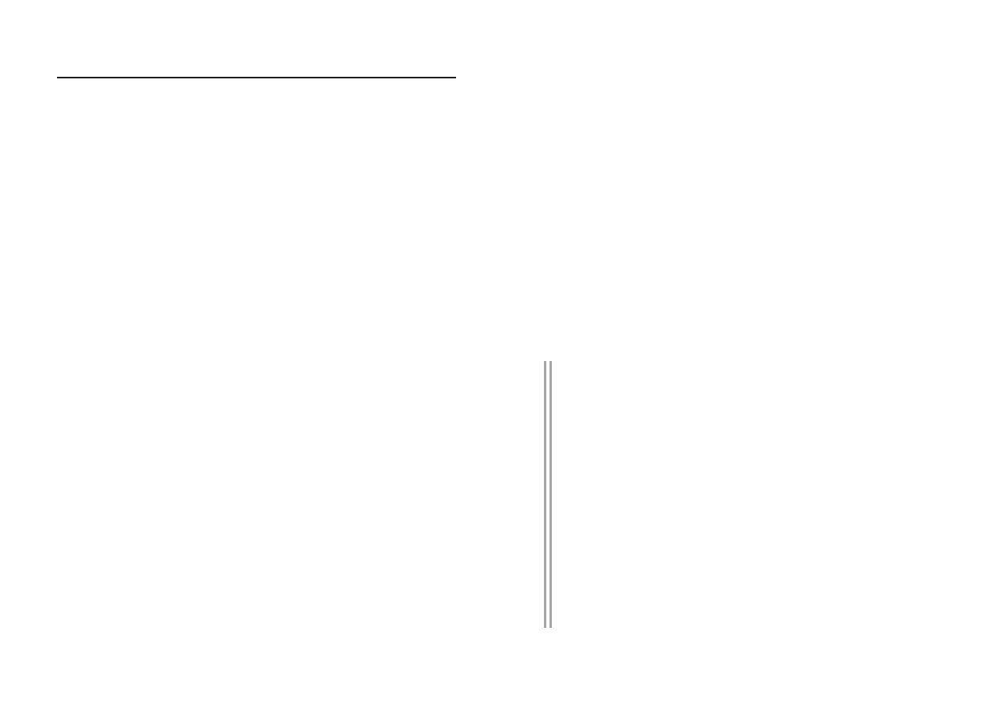
Violações dos direitos humanos e do Estado de direito
no decurso da chamada operação antiterrorista
cinco
4
Livro branco sobre violações dos direitos humanos
e o Estado de direito na Ucrânia
kov, cuja culpa foi que eles tinham
opiniões políticas diferentes sobre o futuro da Ucrânia. Ao mesmo tempo, nenhum
dos que cometeram este crime insidioso sofreu ainda um
castigo merecido.
Espero que a investigação lançada pelas autoridades de Kiev não
seja “terminada” e politizada, como aconteceu essencialmente com o chamado
caso do atirador, quando, como resultado do tiroteio para matar em Kiev
em fevereiro de 2014, os mesmos atiradores não identificados mataram
manifestantes e policiais.
Todos estes problemas estão refletidos na segunda edição do Livro Branco sobre a
Ucrânia. Ao mesmo tempo, ainda não nos propusemos a difícil
tarefa de nele refletir todos os trágicos acontecimentos que ocorreram
naquele país. Mas mesmo os fatos apresentados neste artigo são
suficientes para tirar uma conclusão decepcionante de que a Ucrânia enfrentou
os mais sérios desafios no campo dos direitos humanos.
Desafios para os quais a liderança da Ucrânia ainda não tem respostas adequadas.
Este estudo abrange o período de abril a meados de junho de
2014. Como base factual, como na primeira edição,
os resultados do monitoramento cuidadoso da mídia ucraniana,
russa e de alguns meios ocidentais, declarações e declarações de representantes das
autoridades de Kiev e seus apoiadores, numerosos
relatos de testemunhas oculares, incluindo aqueles publicados por eles na Internet , foram usados. , bem como materiais
coletados pelo Escritório de Direitos Humanos de Moscou, a Unidade de Informação sobre
Crimes contra a Pessoa e a
Missão Especial de Monitoramento da OSCE.
Cada seção deste estudo é precedida por trechos de
documentos internacionais fundamentais no campo dos direitos humanos,
cujas disposições e normas universais foram violadas na Ucrânia durante o
período especificado.
Como antes, vemos como principal tarefa da segunda edição do Livro Branco
concentrar a atenção da comunidade internacional
e das principais estruturas internacionais de direitos humanos, bem como
de organizações não governamentais relevantes sobre esses fatos, que ainda não demonstraram o devido
e atenção imparcial para esta questão.
Violação dos direitos humanos
E
Estado de Direito
dentro
durante o chamado
operação antiterrorista
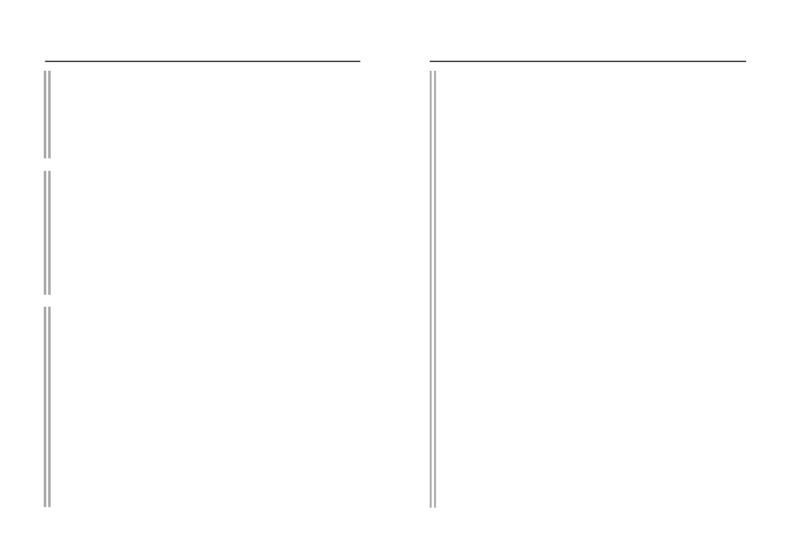
Violações dos direitos humanos e do Estado de direito
no decurso da chamada operação antiterrorista
7
6
Livro branco sobre violações dos direitos humanos
e o Estado de direito na Ucrânia
Artigo 14
1. Toda pessoa tem o direito de buscar
e gozar de asilo de perseguição em outros países.
2. Este direito não pode ser invocado em caso de acusação
fundada de facto na prática de crime apolítico
ou de acto contrário aos propósitos e princípios das
Nações Unidas.
Artigo 6
O direito à vida é o direito inalienável de todo ser humano.
Este direito é protegido por lei. Ninguém pode ser arbitrariamente privado
da vida.
Artigo 7
Ninguém será submetido a tortura ou tortura cruel, desonrosa
tratamento ou punição degradante ou degradante.
Artigo 20
Toda propaganda de guerra deve ser proibida por lei.
Artigo 26.
Todas as pessoas são iguais perante a lei e têm o direito sem qualquer
discriminação à igual proteção da lei.
Convenção contra a Tortura e
outros cruéis
Punição (Nova York, 10 de dezembro de 1984
G.)
Artigo 1
Para efeitos desta Convenção, a definição de "tortura"
significa qualquer ato pelo qual dores ou sofrimentos graves, físicos ou mentais, são infligidos intencionalmente a qualquer pessoa
, a fim de obter dela ou de uma terceira pessoa informação ou confissão, para
puni-la por um ato que ela ou uma terceira pessoa tenha
cometido ou em cuja prática seja suspeito, ou para intimidá-lo ou
coagi-lo ou a uma terceira pessoa, ou por qualquer motivo baseado
em discriminação de qualquer natureza, quando tal dor ou sofrimento for infligido por ou por instigação ou conhecimento
de um público funcionário ou outra pessoa agindo em uma capacidade oficial ou consentimento tácito. Esta definição não inclui dor ou sofrimento que surge apenas como resultado de
as de sanções legítimas, são inseparáveis dessas sanções ou são causadas
por elas acidentalmente.
Convenção sobre
proteção dos direitos humanos
E
liberdades fundamentais (Roma, 4 de novembro de 1950
G.)
Artigo 2
O direito de cada pessoa à vida é protegido por lei. Nenhum
pode ser intencionalmente privado da vida, exceto em execução de uma
sentença de morte proferida por um tribunal por um delito para
o qual a lei preveja tal punição.
Artigo 3
Ninguém será submetido a tortura ou desumano
ou tratamento ou punição degradante.
Artigo 5
Direito à liberdade e segurança pessoal
1. Toda pessoa tem direito à liberdade e segurança pessoal. Ninguém
pode ser privado da liberdade, salvo nos seguintes casos e na forma
prevista na lei:
(a) a detenção legal de uma pessoa condenada por um
tribunal competente;
b) a detenção legal ou detenção (detenção) de uma pessoa por
incumprimento de uma decisão judicial proferida nos termos da lei ou
para efeitos de assegurar o cumprimento de qualquer obrigação prevista
na lei;
(c) A prisão ou detenção legal de uma pessoa
com o objetivo de trazê-la perante uma autoridade competente sob
suspeita razoável de ter cometido um delito ou quando
há motivos razoáveis para acreditar que é necessário impedi
-lo de cometer uma infração ou impedi-lo de fugir após tê
-la cometido;
(d) Detenção de menor com base em
ordem legal de supervisão educacional ou sua
detenção legal realizada para trazê-lo
perante a autoridade competente;
(e) A detenção legal de pessoas com o objetivo de prevenir a propagação
de doenças infecciosas, bem como a
detenção legal de pessoas doentias, alcoólatras, toxicodependentes ou
vagabundos;
f) a prisão ou detenção legal de uma pessoa para fins de
impedir sua entrada ilegal no país ou a pessoa contra a qual
estão sendo tomadas medidas para sua expulsão ou extradição.
2. Qualquer pessoa detida deve ser prontamente informada, numa língua
que compreenda, das razões da sua detenção e de qualquer acusação contra ela.
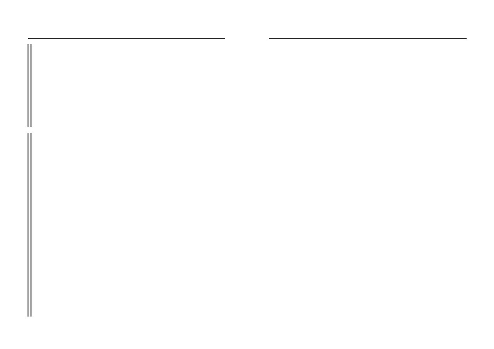
Violações dos direitos humanos e do Estado de direito
no decurso da chamada operação antiterrorista
nove
8
Livro branco sobre violações dos direitos humanos
e o Estado de direito na Ucrânia
3. Qualquer pessoa detida ou detida ao abrigo
da alínea c) do n.º 1 do presente artigo deve ser levada imediatamente à presença
de um juiz ou outro funcionário investido de
poderes judiciais por lei e tem direito a um julgamento
dentro de um prazo razoável ou a ser posto em liberdade enquanto se aguarda julgamento. A liberação
pode ser condicionada à prestação de garantias para comparecer em juízo.
4. Toda pessoa privada de liberdade em consequência de prisão ou
detenção tem direito a que a
legalidade da sua detenção seja examinada sem demora por um tribunal e a ser libertada se a sua
detenção for considerada ilegal pelo tribunal.
5. Qualquer pessoa que tenha sido vítima de prisão ou detenção em violação
as disposições deste artigo terão direito a indenização.
Protocolo Adicional
para
Convenções de Genebra de 12
agosto de 1949
G.,
relativo à Proteção das Vítimas de Conflitos Armados Não Internacionais
(Protocolo II)
(8
Junho de 1977
G.)
Artigo 4
Todas as pessoas não diretamente envolvidas ou
aqueles que deixaram de participar nas hostilidades têm direito ao
respeito pela sua pessoa, pela sua honra, pelas suas convicções, pelos seus
ritos religiosos. Em relação a essas pessoas, é proibida a usurpação
da vida, saúde, estado mental, tratamento cruel,
tortura, punição corporal, atos de terrorismo, roubo, ameaças,
abuso, tratamento humilhante, insultante ou ameaças
de cometer essas ações, é garantido às crianças o direito de assistência e proteção necessárias
, incluindo educação, educação, residência e reunificação
com seus pais.
Artigo 13
A população civil e os civis individuais beneficiam
desde que haja proteção geral contra o perigo representado por uma operação militar
, a população civil não deve ser objeto de ataque.
Artigo 14
É proibido usar a fome entre a população civil
como método de guerra, é proibido
atacar, retirar ou inutilizar objetos essenciais
à sobrevivência da população civil, tais como
mantimentos, áreas agrícolas produtoras de alimentos
, plantações, pecuária, instalações de abastecimento de água potável, água e suprimentos deste
último, bem como instalações de irrigação.
Começo
a partir de
abril de 2014
autoridades de facto em Kiev, que legalmente derrubaram
o presidente eleito e em exercício V. Yanukovych como resultado de um golpe de estado e uma tomada forçada do poder, eles começaram a usar a frase “operação antiterrorista” (ATO)
em relação às suas ações em Donetsk
, Luhansk e Kharkiv regiões , preferindo a repressão forçada de cidadãos dissidentes da Ucrânia ao diálogo político.
7 de abril de 2014
em resposta à ocupação por manifestantes no leste da Ucrânia
instituições estatais e a proclamação da declaração de soberania da
“República Popular de Donetsk” (DPR) “agindo O presidente da Ucrânia A. Turchynov
anunciou o início da ATO no território das
regiões de Donetsk, Lugansk e Kharkiv.
Ao mesmo tempo, as autoproclamadas autoridades ucranianas enfrentaram muito rapidamente
o problema da falta de fundos e oportunidades de influência vigorosa
sobre os habitantes do sudeste da Ucrânia: as estruturas de aplicação da lei
foram derrotadas e desmoralizadas pelas próprias novas autoridades de Kiev
, e a capacidade de combate do exército ucraniano era altamente questionável. Nestas
condições, a aposta principal foi colocada na continuação da cooperação entre o
governo interino da Ucrânia e nacionalistas radicais e neonazistas
do Setor de Direita.
Além disso, as autoridades de Kiev legalizaram de fato o processo de recrutamento de
ex-participantes da “autodefesa de Maidan” nas estruturas de poder da Ucrânia.
Para esse fim, em março de 2014, foi criada a Guarda Nacional da Ucrânia,
que incluía representantes das forças nacionalistas que não estavam anteriormente relacionadas
às agências de aplicação da lei.
Outra forma de repressão violenta dos protestos no
sudeste da Ucrânia foi o envolvimento ativo de mercenários estrangeiros de
empresas militares privadas.
7 de abril de 2014
chegada de aeronaves no aeroporto de Donetsk
com aproximadamente 150 militares estrangeiros, presumivelmente da
empresa militar privada americana Greystone.
12 de abril de 2014
líder do "Setor Direito" D. Yarosh fez um vídeo
em que ele convocou todas as estruturas do "Setor Direito" para se mobilizar
e se preparar para a defesa da soberania e integridade territorial da Ucrânia.
13 de abril de 2014
"e sobre. Presidente da Ucrânia A. Turchynov anunciou a adoção
O Conselho Nacional de Segurança e Defesa da Ucrânia (NSDC) decidiu lançar “uma operação antiterrorista de grande escala envolvendo as Forças Armadas do país”
nas regiões do sudeste da Ucrânia .
indicativo,
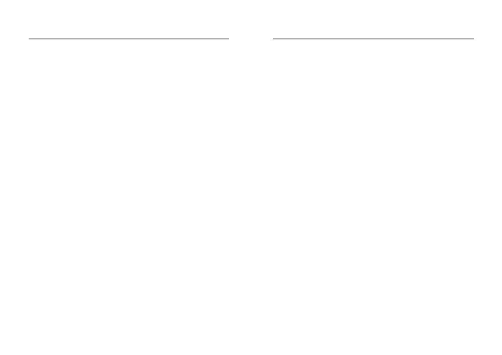
Violações dos direitos humanos e do Estado de direito
no decurso da chamada operação antiterrorista
onze
10
Livro branco sobre violações dos direitos humanos
e o Estado de direito na Ucrânia
que esta decisão foi anunciada no dia seguinte à visita a Kiev
do diretor da Agência Central de Inteligência dos Estados Unidos, J. Brennan.
13 de abril de 2014
e sobre. Ministro de Assuntos Internos da Ucrânia A. Avakov anunciou
sobre a criação de um “corpo de forças especiais do Ministério da Administração Interna com base em formações civis
”. Em sua página no Facebook, ele disse que
“o Ministério da Administração Interna está pronto para recrutar mais de 12.000 pessoas em todo o país para as novas
forças especiais, além de fornecer armas, equipamentos,
liderança de oficiais regulares”.
O primeiro foi um decreto sobre a formação de um “batalhão especial” na
região de Luhansk (“Vostok”), depois unidades semelhantes foram criadas em
Dnepropetrovsk (“Dnepr”), Odessa (“Tempestade”) e Nikolaev (“São Nicolau” ).
Os "batalhões especiais" formados em Kharkov foram nomeados "Kharkov"
e "Slobozhanschina".
A especificidade dessas unidades é sua natureza improvisada
(os batalhões incluem pessoas que, em sua maioria, não têm
experiência na aplicação da lei, incluindo representantes de organizações nacionalistas radicais e neonazistas que
participaram dos eventos do Euromaidan ).
Além disso, o financiamento dessas divisões
e a gestão de suas atividades são realizados
pelos governadores oligarcas nomeados por Kiev nas regiões do sudeste. Assim,
essas formações são, na verdade, unidades “privadas”,
não vinculadas a instruções departamentais e desrespeitando a
legislação vigente.
13 de abril de 2014
na entrada de Sloviansk (região de Donetsk) militantes do Pravo-
º setor” encenou uma escaramuça com combatentes da “Milícia Popular de Donbass
”. Uma pessoa morreu, nove ficaram feridas.
14 de abril de 2014
"e sobre. Presidente da Ucrânia A. Turchynov assinou um decreto
n.º 405/2014 sobre “a implementação da decisão do Conselho de Segurança e Defesa Nacional de 13 de abril de 2014
“Sobre medidas urgentes para superar a ameaça terrorista e preservar
a integridade territorial da Ucrânia””.
14 de abril de 2014
de acordo com a decisão de Kiev, o abastecimento de água doce da Ucrânia
para a República da Crimeia da Federação Russa através do Canal da Crimeia do Norte
foram reduzidos três vezes sob um pretexto claramente exagerado (supostamente,
os documentos foram redigidos incorretamente). De acordo com o primeiro vice-primeiro-ministro da República da
Crimeia R. Temirgaliev, a ordem direta para reduzir o
abastecimento de água à Crimeia foi dada pelo vice-
chefe da administração do presidente da Ucrânia A. Senchenko, nomeado pelo Verkhovna Rada .
Na noite de
14 a 15 de abril de 2014
pessoas não identificadas atearam fogo ao prédio da administração
tsii vila Andreevka nos subúrbios de Slavyansk. O prédio foi totalmente incendiado.
16 de abril de 2014
confrontos ocorreram na região de Donetsk
moradores com tropas enviadas pelo regime de Kiev para reprimir a dissidência
:
em Mariupol, os militares ucranianos dispararam contra moradores locais que
tentavam entrar no território da unidade militar nº 3057 das tropas internas da
Ucrânia. 3 pessoas morreram, 13 ficaram feridas;
em Kramatorsk, um veículo de combate aéreo (BMD) do exército ucraniano abriu
fogo contra oponentes das novas autoridades de Kiev. 3 pessoas ficaram feridas.
16 de abril de 2014
em Slavyansk e Kramatorsk a primeira tentativa de realizar
ATO sofreu uma falha esmagadora. Unidades da 25ª
brigada aerotransportada de Dnepropetrovsk entraram na cidade de Kramatorsk,
onde foram bloqueadas por moradores locais. Após negociações, um comboio de
seis veículos blindados sob as bandeiras da Rússia e da RPD dirigiu-se a
Slovyansk. Em Slavyansk, o equipamento foi deixado para a milícia local e alguns dos pára-
quedistas retornaram aos seus locais de implantação. No dia seguinte, “agindo A. Turchynov
instruiu o presidente da Ucrânia a dissolver a brigada “por covardia
e entrega de armas”.
16 de abril de 2014
em Odessa, policiais ucranianos detiveram militante
kov do Setor Direito, em cujo carro
foram encontrados bastões, capacetes, equipamentos de proteção e coquetéis molotov.
17 de abril de 2014
em Genebra na sequência dos resultados da reunião quadripartite
Os líderes da Rússia, EUA, UE e Ucrânia concordaram com medidas iniciais para
diminuir as tensões no sudeste da Ucrânia, que, entre outras coisas
, estipulavam que todas as partes deveriam se abster de quaisquer
ações violentas, intimidações e provocações. O Ministério das Relações Exteriores da Ucrânia informou que
, para cumprir os acordos de Genebra, as autoridades de Kiev estão suspendendo a
fase ativa da ATO. No entanto, esta afirmação foi imediatamente
desmentida pelo discurso do ator . Chefe do Ministério das Relações Exteriores da Ucrânia A. Deshchytsia, que
disse que a operação militar no leste da Ucrânia continuaria até que
os manifestantes fossem completamente desarmados.
17 de abril de 2014
perto da aldeia de Sergeevka (região de Donetsk) ucraniano
militares dispararam contra um posto de controle de partidários da federalização da Ucrânia
. Várias pessoas ficaram feridas.
17 de abril de 2014
na cidade de Izyum (região de Kharkiv) como parte do anunciado
o regime de Kiev da "operação antiterrorista" colocou cerca de

Violações dos direitos humanos e do Estado de direito
no decurso da chamada operação antiterrorista
13
12
Livro branco sobre violações dos direitos humanos
e o Estado de direito na Ucrânia
1000 militares ucranianos. Os soldados não recebem comida,
são forçados a saquear e roubar mercearias locais.
17 de abril de 2014
na região de Donetsk, os militares ucranianos fizeram reféns
ki moradores da aldeia de Kutuzovka. As pessoas eram obrigadas a fornecer combustível para
equipamentos militares. Ao mesmo tempo, eles foram despidos de roupas íntimas, espancados e submetidos a
bullying. Tudo o que aconteceu foi filmado em câmeras de celulares
. Pessoas foram liberadas em troca de óleo diesel (um litro por pessoa), até que
a polícia finalmente interveio. Segundo as vítimas, parte dos
militares “ucranianos” não entendia nem russo nem ucraniano e falava
apenas inglês.
18 de abril de 2014
Cache com armas e símbolos encontrados em Slavyansk
"Setor Direito". A cache continha cassetes com um gás desconhecido,
2 pistolas, 2 kg de TNT, detonadores caseiros, fios e walkie-talkies.
18 de abril de 2014
Departamento de Recursos Hídricos da Bacia da Crimeia
informou que a Ucrânia cortou completamente o fornecimento de água doce ao território
da República da Crimeia da Federação Russa.
19 de abril de 2014
no rio Torets perto da aldeia de Raygorodok (perto de Slavyansk)
policiais encontraram os corpos de dois homens com sinais de tortura. Os
moradores locais têm certeza de que este é o trabalho dos militantes do Setor Direita conhecidos por sua crueldade
, que alguns dias antes, juntamente com os
militares ucranianos, chegaram a Slovyansk. Mais tarde, o serviço de imprensa do Ministério de Assuntos Internos da Ucrânia
informou que, como resultado da identificação de um dos dois corpos, foi estabelecido que o falecido era V. Rybak ,
deputado do conselho municipal de Horlivka do partido Batkivshchyna .
Na noite de
20 de abril de 2014
A trégua da Páscoa foi quebrada
Em um dos postos de controle na entrada de Sloviansk, milicianos locais foram alvejados
de uma coluna de carros que haviam parado. Como resultado da batalha que se seguiu
, dois ativistas desarmados, um miliciano foram mortos, três pessoas ficaram feridas.
As milícias, que chegaram em alerta, conseguiram apreender dois carros
dos agressores, nos quais encontraram armas de fabricação estrangeira
, um mapa fotográfico aéreo da área e uma placa
de um membro do Setor Direita. De acordo com as agências de aplicação da lei,
12 agressores deixaram o local em direção à
região de Kharkiv, levando seus mortos e feridos com eles.
22 de abril de 2014
"e sobre. Presidente" da Ucrânia A. Turchynov exigiu de
agências de aplicação da lei para retomar uma operação especial no leste do país. O secretário de imprensa
do Serviço de Segurança da Ucrânia (SBU) M. Ostapenko afirmou que
"a operação não foi cerceada, sua parte ativa foi suspensa para os
feriados." Vale ressaltar que essas declarações foram feitas imediatamente
após a saída de Kiev do vice-presidente dos EUA, John Biden, que estava
na Ucrânia em visita.
23 de abril de 2014
e sobre. O vice-primeiro-ministro da Ucrânia V. Yarem anunciou a
atualizar a "fase ativa" da operação especial nas regiões orientais da Ucrânia.
Segundo ele, isso foi feito “de acordo com a ordem” de A. Turchinov.
V. Yarema acrescentou que as agências de aplicação da lei estão “trabalhando para eliminar
todas as formações” em Kramatorsk, Slavyansk e outras cidades das
regiões de Donetsk e Luhansk.
23 de abril de 2014
líder do "Setor Direito" D. Yarosh disse à imprensa
conferência em Dnepropetrovsk que ele não se envolveria em sua
campanha eleitoral presidencial, mas se concentraria em “combater o
separatismo”. Ele anunciou o início da formação, de acordo com a liderança do Conselho
Nacional de Segurança e Defesa, o Ministério de Assuntos Internos e o Serviço de Segurança da Ucrânia, do batalhão especial “Donbass” na região de Donetsk.
Segundo ele, a “unidade especial” incluirá ativistas e
combatentes treinados do “Setor Direito”, que estão prontos para ajudar os serviços especiais
na operação especial do Ministério da Administração Interna e do Serviço de Segurança no Sudeste do Ucrânia.
Ele também anunciou a transferência de sua sede de Kiev para Dnepropetrovsk.
“Na verdade, realizamos o sonho de muitos ucranianos, e o exército de Bandera
finalmente cruzou o Dnieper”, disse D. Yarosh.
23 de abril de 2014
em Cherkassk (região de Dnepropetrovsk) Ucraniano
reservistas, mobilizados pelo regime de Kiev sob a ameaça de processo criminal
na 93ª brigada motorizada separada para participar
da repressão de protestos de moradores do sudeste do país, organizaram um motim.
Eles expressaram insatisfação com as condições de detenção no acampamento,
bem como o fato de suas famílias terem ficado sem meios de subsistência. Muitos dos
reservistas após a "mobilização" foram demitidos de seus empregos, e o Estado não
presta assistência a suas esposas e filhos. Inicialmente, o período de coleta
deveria ser de 10 dias, mas as pessoas foram mantidas no acampamento por mais
de um mês. Além disso, muitos deles não estão satisfeitos com a perspectiva de lutar
com seu próprio povo.
Na noite de
23 a 24 de abril de 2014
no grupo Mariupol (região de Donetsk)
Nacional-radicais com cerca de 30 pessoas, armados com pistolas
, bastões e pedaços de vergalhões, invadiram o prédio da Câmara Municipal, que era
controlado por partidários da federalização. Os militantes espancaram os
desarmados que ali estavam e fizeram um pogrom. 5 pessoas ficaram gravemente
feridas.

Violações dos direitos humanos e do Estado de direito
no decurso da chamada operação antiterrorista
15
quatorze
Livro branco sobre violações dos direitos humanos
e o Estado de direito na Ucrânia
24 de abril de 2014
Os militares ucranianos fizeram uma tentativa de invadir o Sla-
Vyansk. Sob a cobertura de helicópteros e veículos blindados, forças especiais entraram na cidade.
5 milicianos foram mortos, várias pessoas ficaram feridas. Tendo capturado e derrotado
3 postos de controle de partidários da federalização, as forças de segurança ucranianas recuaram.
24 de abril de 2014
Ministro da Defesa da Federação Russa S.K. Shoigu
informou que um
agrupamento de tropas ucranianas com mais de 11.000 militares estava envolvido na operação militar no sudeste da Ucrânia
. Cerca de 160 tanques, mais de 230 veículos de combate de infantaria e veículos blindados de transporte de pessoal, pelo
menos 150 canhões e morteiros, helicópteros de combate e aeronaves estiveram envolvidos na operação.
Unidades da Guarda Nacional, bem como
batalhões formados por extremistas do Setor Direita, estão envolvidos contra civis. A repressão
dos protestos da população civil foi realizada por
soldados das forças especiais do SBU e do Ministério da Administração Interna da Ucrânia destacados para Donetsk e Luhansk.
25 de abril de 2014
o líder do "Setor Direito" D. Yarosh voltou-se para "atuar Pré-
Presidente da Ucrânia A. Turchynov com uma demanda para iniciar o armamento em massa da
população.
26 de abril de 2014
Ucrânia bloqueou completamente as eclusas da Crimeia do Norte
canal através do qual a água do Dnieper chegou à península da Crimeia.
28 de abril de 2014
"Setor Direito" exigiu do Ministério de Assuntos Internos da Ucrânia para armar
combatentes do batalhão especial Donbass formado pelos radicais. O correspondente
recurso foi encaminhado à atuação. Ministro de Assuntos Internos da Ucrânia
A. Avakov.
30 de abril de 2014
em Kiev, numa reunião com os chefes das administrações estaduais regionais
"e sobre. O presidente da Ucrânia A. Turchynov instruiu a criar em cada região
"batalhões territoriais de autodefesa" entre os "patriotas do país que
estão prontos para defender a Ucrânia com armas nas mãos". Dado que a criação
de tais formações armadas
não está prevista na legislação atual da Ucrânia.
1º de maio de 2014
militantes da Guarda Nacional da Ucrânia dispararam contra o bloco
o posto de autodefesa de Donbass na entrada da cidade de Krasnoarmeysk (
região de Donetsk). 11 moradores locais desarmados que estavam de plantão no posto de controle foram
apreendidos e levados em direção desconhecida.
2 de maio de 2014
As tropas ucranianas começaram o ataque a Slavyansk com o envolvimento
extremistas do Setor Direita e outras
organizações ultranacionalistas. Durante a operação punitiva, as forças de segurança ucranianas usaram
helicópteros de combate e veículos blindados. Inglês foi transmitido no rádio,
e combatentes armados com rifles americanos foram vistos entre os atacantes.
tochas M-16. Os militantes do “Setor Direita” que invadiram a periferia da cidade
roubaram mercearias e invadiram
prédios residenciais em busca de milícias. Slavyansk foi completamente bloqueado pelos militares ucranianos, que
não permitiram que mulheres e crianças fossem retiradas da cidade.
2 de maio de 2014
no assentamento de tipo urbano de Yasnogorka (região de Donetsk) sem
Moradores armados tentaram parar a coluna de veículos blindados das
tropas ucranianas. Para assustar as pessoas, os soldados dispararam para o ar. Um APC atropelou
um idoso, que foi
levado ao hospital em estado de choque com fratura nas duas pernas.
2 de maio de 2014
As autoridades ucranianas proibiram unilateralmente
companhias aéreas de esqui para operar voos para Donetsk e Kharkiv. A este respeito, a
Agência Federal de Transporte Aéreo observou que este caso é uma violação sem precedentes
dos acordos internacionais sobre tráfego aéreo, infringe os
direitos dos passageiros e leva a um bloqueio humanitário dos residentes das
regiões do sudeste da Ucrânia.
3 de maio de 2014
durante os combates em Slavyansk, 15 milicianos foram mortos, 11 deles foram
desarmado.
3 de maio de 2014
As agências policiais ucranianas lançaram uma operação especial em Kram-
Torsk (região de Donetsk). Homens armados em uniformes sem identificação
tentaram "limpar" a cidade dos "separatistas".
Nas proximidades de Kramatorsk, militantes da Guarda Nacional mataram uma
enfermeira (Yu. Izotova, 21) e três de suas amigas. O carro, no qual os
jovens tentaram dirigir para um local seguro, foi atingido por
armas automáticas.
De acordo com o Departamento de Saúde da Administração Estatal Regional de Donetsk,
durante os combates em Kramatorsk, 6 pessoas foram mortas, 15 pessoas com ferimentos de
bala foram levadas para hospitais.
3 de maio de 2014
tarde da noite em Mariupol (região de Donetsk) ucraniano
as forças de segurança invadiram o prédio do conselho da cidade. Houve um incêndio no prédio.
O assalto foi repelido pelos combatentes da milícia popular.
3 de maio de 2014
uma fonte do Ministério de Assuntos Internos da Ucrânia disse que agindo. ministro do interior
Em 29 de abril de 2014, A. Avakov e o chefe do SBU V. Nalyvaychenko
enviaram ordens ao Serviço de Migração da Ucrânia para emitir urgentemente
300 passaportes ucranianos para cidadãos dos estados bálticos
e da Polônia que chegam à Ucrânia para participar como conselheiros
e comandantes de campo em operações punitivas para reprimir protestos
no leste do país.

Violações dos direitos humanos e do Estado de direito
no decurso da chamada operação antiterrorista
17
16
Livro branco sobre violações dos direitos humanos
e o Estado de direito na Ucrânia
4 de maio de 2014
O jornal alemão "Bild" informou que os conselheiros do novo
As autoridades de Kiev empregam vários funcionários dos serviços de inteligência americanos
- a CIA e o FBI. Eles estão “ajudando Kiev a reprimir revoltas
no leste da Ucrânia e a construir estruturas de segurança”.
5 de maio de 2014
As forças de segurança ucranianas realizaram um ataque maciço em Slavyansk.
A batalha mais feroz ocorreu nos arredores da cidade, perto da vila de
Semyonovka. Os ultranacionalistas, que formam a espinha dorsal da Guarda Nacional da
Ucrânia, distinguiram-se com particular crueldade: dispararam contra edifícios residenciais e, sem
hesitação, dispararam contra pessoas desarmadas. Mais de 20 milicianos e civis
foram mortos, dezenas ficaram feridos, os hospitais da cidade estão superlotados.
5 de maio de 2014
nas cidades do leste da Ucrânia, bloqueadas pelos militares ucranianos
Em outras palavras, uma catástrofe humanitária está se formando – faltam
remédios e sangue para transfusão dos feridos, houve interrupções na entrega
de alimentos.
O porta-voz do Comitê Internacional da Cruz Vermelha (CICV) para a
Europa e Ásia Central, David-Pierre Marquet, relatou a necessidade urgente
de medicamentos em Sloviansk e Kramatorsk. Segundo ele, a escassez
de medicamentos também é sentida em outras cidades do leste da Ucrânia. Em particular
, Lugansk sofre com a escassez de antibióticos. Uma situação difícil com
medicamentos se desenvolveu em Donetsk e Odessa.
5 de maio de 2014
de propriedade de um oligarca ucraniano e patrocinador da Euromaid
em" e "Setor Direito" I. Kolomoisky, um dos maiores
bancos comerciais da Ucrânia - "Privatbank" suspendeu o trabalho nas regiões de Donetsk e Luhansk
. Mais de 400.000
pensionistas de Donetsk e Lugansk, bem como 220.000 beneficiários de outros
benefícios sociais, receberam pensões através deste banco. Os moradores locais tiveram sérios problemas com o recebimento de
pensões, estipêndios e salários.
6 de maio de 2014
soube-se que o SBU está preparando provocações usando
Eu como uniformes militares de estilo russo.
Munições dos militares russos (cerca de 200 conjuntos),
formulários forjados de carteiras de identidade de oficiais das Forças Armadas da Federação
Russa (70 peças) foram entregues a Donetsk da região de Khmelnytsky . Os militantes foram encarregados de simular um ataque
a guardas de fronteira ucranianos usando uniformes militares russos
e capturar o que estava acontecendo na câmera, disse uma fonte de uma das
agências policiais da Ucrânia sob condição de anonimato.
6 de maio de 2014
secretário do Conselho de Segurança e Defesa Nacional, ex "comandante do Maidan" A. Paru-
biy assinou uma ordem sobre a inclusão de todas as estruturas da "autodefesa do Maidan"
nas unidades do Ministério da Administração Interna, da Guarda Nacional e do Exército, bem como nos
batalhões criados de reservistas. Todas as estruturas da "autodefesa do Maidan" foram
condenadas a formalizar suas atividades nos próximos 10 dias.
Tal medida foi uma violação direta dos Acordos de Genebra de
17 de abril de 2014, um dos quais foi o desarmamento e liquidação de
grupos armados ilegais na Ucrânia.
Na noite de
6 a 7 de maio de 2014
em Mariupol, os militares ucranianos dispararam contra
postos de controle da milícia na entrada da cidade. Uma pessoa morreu e cerca de dez
ficaram feridas.
Pela manhã
7 de maio de 2014
em Mariupol, militares ucranianos e militantes da direita
setores” tomaram o prédio da Câmara Municipal, que era controlado pelas milícias
. Durante o assalto contra as pessoas que estavam no prédio, foi usado gás.
15 pessoas foram hospitalizadas com queimaduras nos olhos e trato respiratório. Dezenas
de partidários da federalização da Ucrânia foram detidos pela polícia.
7 de maio de 2014
O Ministério da Administração Interna da Ucrânia anunciou a detenção do Ministro da Defesa da RPD
I. Kakidzyanova. Mais tarde, fotografias e vídeos apareceram na Internet,
nos quais o candidato a presidente da Ucrânia, o líder do Partido Radical
O. Lyashko interroga pessoalmente
I. Kakidzyanov, algemado e despido quase nu.
7 de maio de 2014
Tornou-se conhecido que a Ucrânia iniciou a construção de uma barragem na
Canal da Crimeia do Norte no território da região de Kherson, a fim de
desligar completamente o abastecimento de água à República da Crimeia da Federação Russa.
Após a reunificação da Crimeia com a Rússia, desde 14 de abril, a Ucrânia reduziu
o volume de abastecimento de água através do Canal da Crimeia do Norte em três vezes e, desde 26 de abril, fechou
suas eclusas.
7 de maio de 2014
em Severodonetsk (região de Luhansk) militantes do “Setor Direito”
Torá” disparou contra o prédio do
Ministério Público controlado por partidários da federalização.
8 de maio de 2014
em Mariupol, unidades da Guarda Nacional capturadas
prédio da prefeitura. Quando os moradores locais tentaram se aproximar deles,
o fogo foi aberto sem aviso prévio. Uma pessoa ficou ferida.
8 de maio de 2014
cerca de 40 homens armados em uniformes pretos sem identificação
Com sinais, eles incendiaram
o posto alfandegário de Izvarino, no lado ucraniano, na fronteira russo-ucraniana, após o que desapareceram.
9 de maio de 2014
em Mariupol, militares ucranianos e militantes do batalhão
"Dnepr" (formado em Dnepropetrovsk às custas do oligarca ucraniano
I. Kolomoisky) tentou invadir o prédio do departamento da cidade do Ministério de Assuntos Internos,

Violações dos direitos humanos e do Estado de direito
no decurso da chamada operação antiterrorista
19
dezoito
Livro branco sobre violações dos direitos humanos
e o Estado de direito na Ucrânia
cujos funcionários se recusaram a seguir as ordens de Kiev.
Cidadãos desarmados vieram em auxílio dos sitiados. As forças de segurança ucranianas abriram
fogo contra a multidão, usando veículos blindados pesados e lançadores de granadas. 9
pessoas morreram, 42 ficaram feridas. O prédio do departamento de polícia da cidade foi completamente
queimado. Na noite de 9 para 10 de maio de 2014, o prédio do Comitê Executivo da Cidade foi parcialmente incendiado
.
9 de maio de 2014
em Slavyansk, um desconhecido gravemente ferido por arma de fogo
zhiya menino de 12 anos, que era a fita de São Jorge.
10 de maio de 2014
As forças de segurança ucranianas atacaram vários postos de auto-
defesa de Slavyansk. 8 pessoas ficaram feridas.
11 de maio de 2014
militantes do batalhão do Dnepr do National
Guarda Nacional da Ucrânia. Eles dispararam indiscriminadamente contra os
moradores. Como resultado, duas pessoas foram mortas.
11 de maio de 2014
O jornal alemão "Bild" informou que nas fileiras do ucraniano
400 mercenários da empresa militar americana
Academi (antes de 2009 - Blackwater) operam no exército e na polícia. Antes disso, a milícia DPR havia relatado repetidamente que estrangeiros de língua inglesa
estavam participando dos combates no sudeste da Ucrânia .
11 de maio de 2014
perto da aldeia de Baranivka (região de Lugansk) militares ucranianos
Um soldado feriu um morador local que tentava bloquear
a circulação de veículos blindados. Um homem com ferimentos de arma de fogo nas duas pernas
foi levado para o hospital.
12 de maio de 2014
de acordo com o Departamento de Saúde de Donetsk
região
Estado
administração, continuando no sudeste da Ucrânia armado
Desde 13 de março de 2014, o confronto militar entre as forças de segurança e os partidários da federalização do país
custou a vida de 49 pessoas na região de Donetsk. No total, nesse
período, 245 vítimas com ferimentos por arma de fogo foram entregues aos hospitais da região
, das quais 150 pessoas foram internadas.
13 de maio de 2014
em uma operação militar contra as milícias perto de Kramatorsk
Os militares ucranianos, violando o acordo com a ONU, usaram 3
helicópteros pintados de branco com
símbolos da ONU e marcas de identificação. Anteriormente, esses helicópteros eram usados em operações de paz da ONU
em países africanos.
14 de maio de 2014
na região de Donetsk nas proximidades da aldeia de Aleksandrov-
ka (perto de Kramatorsk), os militares ucranianos sem aviso abriram
fogo contra um microônibus e um carro com moradores locais
voltando da pesca no início da manhã. 2 pessoas morreram, 2 ficaram feridas.
Outro ataque contra civis ocorreu na mesma área na estrada
entre Novaya Varvarovka e Staraya Varvarovka.
Uma mulher de 50 anos que viajava com seu filho em um carro Niva foi parada pelos
militares ucranianos e baleada a sangue frio. A mulher morreu no
local, seu filho sobreviveu e foi levado ao hospital em estado grave. Os agressores
levaram o dinheiro e os documentos do falecido.
15 de maio de 2014
Exército ucraniano disparou morteiros contra casas em um local privado
setor de Slavyansk. Um morador local de 42 anos ficou gravemente ferido por fragmentos de uma mina.
16 de maio de 2014
"Prefeito do Povo" de Slavyansk V. Ponomarev disse à imprensa
conferência de que na operação punitiva no sudeste da Ucrânia, as
autoridades de Kiev utilizam mercenários da empresa militar privada polaca Analizy
Systemowe Bartlomiej Sienkiewicz (ASBS, OTHAGO), da empresa americana de
segurança privada Greystone, e também da empresa americana Academi .
16 de maio de 2014
Primeiro vice-primeiro-ministro da DPR A. Purgin acusou as autoridades de Kiev
O problema está no fato de que eles silenciam o número real de mortos e feridos durante a ATO.
“Os corpos de civis mortos são enterrados em covas sem identificação, e as pessoas que
receberam tiros e outros ferimentos têm medo de procurar ajuda
de instituições médicas estatais”, disse A. Purgin.
Na noite de
16 a 17 de maio de 2014
durante o ataque a Slavyansk, os militares ucranianos
pela primeira vez durante a operação punitiva,
foi utilizada artilharia pesada (obuses). Vários projéteis atingiram áreas residenciais, há feridos.
Como resultado do bombardeio de artilharia, a
ponte ferroviária na vila de Andreevka (perto de Slavyansk) foi seriamente danificada.
18 de maio de 2014
Milícias de autodefesa da DPR relatam ter sido baleadas por militantes
uma das unidades da Guarda Nacional da Ucrânia estacionada
em Kramatorsk, vários de seus colegas, recrutas que
se recusaram a participar da operação punitiva e estavam prestes a voltar para casa.
19 de maio de 2014
Chefe do Ministério de Assuntos Internos da Ucrânia A. Avakov anunciou a suspensão dos pagamentos
pensões e salários aos residentes de Slavyansk e Kramatorsk.
19 de maio de 2014
militantes da Guarda Nacional da Ucrânia pararam o voo
o primeiro ônibus, seguindo a rota "Kramatorsk - Slavyansk". A maioria
das mulheres estava no ônibus, elas foram levadas para fora, colocadas de
joelhos e interrogadas.
À noite
19 de maio de 2014
Militares ucranianos disparados de obuses e minas
nos arredores de Slavyansk, uma vila de férias e um mercado de produtos agrícolas.
Várias casas do setor privado foram danificadas. 2 milicianos
ficaram feridos, um morador local foi gravemente ferido por um fragmento de projétil na cabeça.

Violações dos direitos humanos e do Estado de direito
no decurso da chamada operação antiterrorista
21
vinte
Livro branco sobre violações dos direitos humanos
e o Estado de direito na Ucrânia
De manhã cedo
20 de maio de 2014
As forças de segurança ucranianas retomaram a massiva
bombardeio de Slavyansk do Monte Karachun, como resultado do qual
vários edifícios residenciais foram parcialmente destruídos.
21 de maio de 2014
um representante da milícia popular de Donbass disse que
Como resultado do bombardeio de artilharia das forças de segurança ucranianas de Slavyansk
, um prédio residencial no distrito de Vostochny foi incendiado, três pessoas ficaram feridas, duas delas
estão em estado grave.
Na noite de
21 a 22 de maio de 2014
perto da cidade de Volnovakha (região de Donetsk)
No posto de controle do exército ucraniano, onde estavam de serviço recrutas da 51ª
brigada de voluntários, que antes se recusavam a atirar em civis, atacaram
militantes da Guarda Nacional apoiados por veículos blindados e
helicópteros de combate. Alguns deles chegaram ao local nos carros do Privatbank, de propriedade do
oligarca I. Kolomoisky. Como resultado, 16
militares ucranianos foram mortos e mais de 40 feridos.
Na noite de
21 a 22 de maio de 2014
Forças de segurança ucranianas infligiram várias artilharias
Lerian ataca Slavyansk. Na noite de 22 de maio de 2014, um bombardeio maciço de artilharia da cidade e da vila adjacente de Semyonovka
começou novamente do lado do posto de controle do exército ucraniano perto da vila de Krasny Liman . Várias casas particulares foram destruídas.
23 de maio de 2014
Forças de segurança ucranianas retomaram a artilharia à tarde
Bombardeio russo do centro de Slavyansk. Como resultado, um prédio de três andares
do centro automobilístico foi destruído, assim como vários prédios residenciais.
As pessoas no interior não ficaram gravemente feridas, mas ficaram surdas pela
onda de choque.
23 de maio de 2014
perto de Lisichansk (região de Luhansk), forças de segurança ucranianas
30 soldados ucranianos baleados no hospital por se recusarem a atacar civis
.
De acordo com a sede da autodefesa, radicais do “Setor Direito” estavam operando na região de Luhansk , financiados pelo oligarca I. Kolomoisky.
25 de maio de 2014
na região de Luhansk na saída de Novoaydar, desconhecido
atirou em quatro carros em que havia moradores locais. Como
ficou conhecido o canal de informação Life News a partir de fontes em
agências de aplicação da lei, como resultado deste ataque, uma pessoa foi morta e
outras três ficaram feridas.
25 de maio de 2014
em Novoaydar (região de Luhansk) formaram-se militantes
Com o dinheiro do oligarca I. Kolomoisky, o destacamento do Dnipro abriu fogo contra
membros desarmados da comissão eleitoral local, que se recusaram
a abrir uma assembleia de voto para a eleição do Presidente da Ucrânia.
25 de maio de 2014
como resultado do bombardeio das forças de segurança ucranianas
a construção de um hospital psiquiátrico na vila de Semyonovka,
perto de Slavyansk, foi parcialmente destruída.
26 de maio de 2014
três helicópteros de combate das Forças Armadas da Ucrânia dispararam contra o Toch-
mash" em Donetsk. Uma pessoa ficou ferida em decorrência do bombardeio.
26 de maio de 2014
nos arredores de Donetsk e nas aldeias adjacentes, havia
confrontos armados entre representantes da milícia popular e as
forças de segurança ucranianas.
Como resultado, um civil morreu de um ferimento de estilhaços perto da estação ferroviária .
26 de maio de 2014
Forças de segurança ucranianas, cujas posições estão localizadas na montanha
Karachun, retomou o bombardeio da vila de Semenovka, perto de Slavyansk.
Dois civis foram vítimas do bombardeio.
27 de maio de 2014
O prefeito de Donetsk A. Lukyanchenko confirmou a morte de pelo menos
40 pessoas como resultado de uma operação do exército na área do aeroporto internacional
de Donetsk, que foi realizada usando aeronaves de ataque
das Forças Armadas da Ucrânia.
27 de maio de 2014
todas as entradas e saídas de Donetsk foram bloqueadas pelo ucraniano
forças de segurança, que na zona da autoestrada para Mariupol
nem deixaram passar autocarros de passageiros com pessoas que tentaram sair da zona da
operação de segurança.
27 de maio de 2014
Autoridades da RPD relataram bombardeios por forças de segurança ucranianas
caminhão com milicianos feridos em Donetsk. De acordo com várias fontes,
de 24 a 35 pessoas morreram.
27 de maio de 2014
como resultado do bombardeio de artilharia pelas forças ucranianas
vicks de Slavyansk mataram quatro pessoas. O chefe do Departamento de Educação da
Câmara Municipal eslava A. Zubarev disse que a cidade está considerando
a questão da conclusão antecipada do ano letivo nas escolas em conexão
com a entrada na fase ativa da operação dos militares ucranianos no sul -leste do
país.
28 de maio de 2014
na área do departamento regional da SBU em Donetsk foi ouvido
filmagem.
Os combates entre as forças da milícia e unidades das Forças Armadas da Ucrânia continuaram na área do Aeroporto Internacional de Donetsk . Atiradores de elite
das Forças Armadas da Ucrânia, que ocupavam posições no telhado do aeroporto, dispararam contra pessoas que haviam chegado
a um cemitério próximo.
28 de maio de 2014
, segundo as milícias, como resultado do bombardeio, o
As forças de segurança indianas de Slavyansk danificaram um prédio escolar localizado
na área de Artyom.

Violações dos direitos humanos e do Estado de direito
no decurso da chamada operação antiterrorista
23
22
Livro branco sobre violações dos direitos humanos
e o Estado de direito na Ucrânia
29 de maio de 2014
O primeiro-ministro da DPR A. Borodai disse que o número de mortes
Como resultado da operação militar das autoridades de Kiev na região de Donetsk, existem
“dezenas de pessoas”.
29 de maio de 2014
em Slavyansk e Kramatorsk começaram uma campanha militar em larga escala
operação das forças de segurança ucranianas com o uso de artilharia e aviação.
Como um representante da milícia popular disse ao ITAR-TASS, "os hospitais
receberam uma ordem para evacuar as pessoas dos andares superiores". Aviso semelhante
, segundo ele, foi recebido pela maternidade da cidade.
Como resultado do bombardeio de Slavyansk, segundo as milícias, mais de
20 civis foram mortos, mais de 30 ficaram feridos.
29 de maio de 2014
no serviço de imprensa da Administração Estatal Regional de Donetsk
revelou que na região, como resultado das hostilidades dos últimos 20 dias,
sete menores de 4 a 17 anos ficaram feridos. Em 9 de maio, uma criança de 12 anos
foi atingida por um disparo de arma de fogo no abdômen e no ombro enquanto caminhava
, em 26 de maio, uma menina de 13 anos foi atingida por um estilhaço na perna e, em 28 de maio, uma criança de
quatro criança de um ano, enquanto caminhava com a avó, sofreu um
ferimento por estilhaço nos tecidos moles do antebraço esquerdo. Mais quatro crianças e adolescentes
sofreram ferimentos a bala em outras cidades da região. Assim, em Makiivka,
em 17 de maio, uma criança de sete anos foi ferida na perna em um ponto de ônibus.
Em Gorlovka, em 24 de maio, uma garota de 17 anos recebeu um ferimento de bala no peito.
Em 25 de maio, um morador de 15 anos da vila de Marinovka, distrito de Shakhtyorsk, estava dirigindo um carro
Bile, que foi baleado no posto de controle da cidade de Snezhnoye. A criança foi levada
ao hospital de clínica infantil regional com ferimento penetrante na
cavidade abdominal. Em Donetsk, em 28 de maio, um menino de oito anos foi atingido por estilhaços
na canela direita.
29 de maio de 2014
O Ministério das Relações Exteriores da Ucrânia recusou a nota oficial da agência externa
departamento político da Rússia, no qual o lado russo ofereceu
ajuda humanitária aos moradores das regiões orientais da Ucrânia e pediu
a Kiev que garantisse sua entrega às regiões afetadas pelo conflito.
30 de maio de 2014
em Slavyansk sob bombardeio de artilharia das forças ucranianas
Vikov acabou em um hospital infantil. Havia crianças no interior no momento do tiroteio.
Além disso, o prédio da policlínica infantil foi danificado.
30 de maio de 2014
Departamento de Investigação Principal do Comitê de Investigação
Na Rússia, um processo criminal foi iniciado “pelo fato do uso de
meios e métodos de guerra proibidos no território das proclamadas
Repúblicas Populares de Donetsk e Lugansk”. Um processo criminal foi iniciado “contra
militares ainda não identificados das Forças Armadas da Ucrânia,
bem como pessoas da Guarda Nacional da Ucrânia e do "Setor Direito"
sobre os fatos de bombardeio das cidades de Slavyansk, Kramatorsk, Donetsk, Mariupol
e outros assentamentos proclamados pelas Repúblicas Populares de Donetsk e Lugansk
"com base em um crime sob Parte 1 do
art. 356 do Código Penal da Federação Russa (uso de
meios e métodos de guerra proibidos). De acordo com a investigação, durante o bombardeio
dessas cidades e vilas em violação da Convenção de Genebra
de 12 de agosto de 1949 "Sobre a Proteção da População Civil em Tempo de Guerra",
os militares das forças armadas da Ucrânia, pessoas de a Guarda Nacional
da Ucrânia e o "Setor Direito" deliberadamente, "com o objetivo de matar civis
os civis usaram armas, artilharia, aeronaves, incluindo aquelas com
símbolos das Nações Unidas, armas e equipamentos blindados.
Como resultado, há mortos e feridos entre a população civil. Além disso
, instalações de infraestruturas industriais, energéticas
, de comunicações e transportes, edifícios e estruturas para fins residenciais,
sociais e culturais, incluindo hospitais, jardins de
infância e escolas, foram total ou parcialmente destruídos.
30 de maio de 2014
O FSB da Rússia anunciou a detenção de quatro pessoas na Crimeia
século (O.G. Sentsov, O.G. Afanasiev, A.V. Chirniy e A.A. Kolchenko), suspeitos
de preparar sabotagem e ataques terroristas em Simferopol, Yalta e Sevastopol.
O comunicado de imprensa da agência afirma que os detidos são membros
do grupo terrorista e de sabotagem do Setor Direito.
Na noite de
30 a 31 de maio de 2014
Guardas de fronteira ucranianos não foram autorizados a entrar na Rússia
um ônibus com crianças de Slavyansk que desejavam deixar o território da Ucrânia.
As crianças tiveram que cruzar a fronteira com a Rússia a pé.
31 de maio de 2014
na sede da milícia popular de Slavyansk informou que
como resultado do bombardeio noturno da cidade pela
Guarda Nacional Ucraniana, há vítimas e feridos entre a população civil. Duas
pessoas morreram, quatro ficaram feridas. Entre eles estava uma mulher de 40 anos, que
mais tarde morreu de um ferimento de estilhaços no hospital. De acordo com as milícias, os
tiroteios ocorreram durante toda a noite na vila de Semyonovka, nos microdistritos de Vostochny e Severny,
bem como na vila de Cherevkovka, onde as instalações de tratamento foram bombardeadas.
A sede disse que, se essas estruturas forem danificadas, os habitantes de
Slavyansk ficarão sem água potável.
1º de junho de 2014
a assessoria de imprensa da DPR informou que ao tentar exportar
corpos de milícias que morreram perto do aeroporto de Donetsk, o exército ucraniano
disparou contra a ambulância e as milícias. Seis pessoas morreram.

Violações dos direitos humanos e do Estado de direito
no decurso da chamada operação antiterrorista
25
24
Livro branco sobre violações dos direitos humanos
e o Estado de direito na Ucrânia
1º de junho de 2014
como resultado do bombardeio de artilharia das forças de segurança ucranianas
Kami Slavyansk danificou os edifícios do orfanato "Sail of Hope" e do Instituto de Pesquisa
de Alta Voltagem. As empresas Stroymash
e Slavtyazhmash também foram criticadas. Cinco civis receberam ferimentos de estilhaços.
2 de junho de 2014
aeronave de ataque da Força Aérea Ucraniana disparou contra a construção da região de Lugansk
administração do estado de noé. 8 civis foram mortos e 28 feridos.
Fica claro pela interceptação das conversas do piloto ucraniano publicadas na Internet que ele
atingiu deliberadamente um alvo civil. O fato do bombardeio foi confirmado
pela missão especial de monitoramento da OSCE que opera na Ucrânia.
2 de junho de 2014
endocrinologista chefe de Mariupol P. Likhonosov disse que
há uma escassez catastrófica de insulina e outros
medicamentos vitais na cidade.
3 de junho de 2014
Secretário de Imprensa do Prefeito Popular de Slavyansk S. Khorokhov
informou que as forças de segurança ucranianas haviam puxado até cem unidades de veículos blindados para a cidade
, incluindo tanques, morteiros autopropulsados Tyulpan, obuses Gvozdika
e lançadores de foguetes múltiplos Grad.
3 de junho de 2014
em Krasny Liman, forças de segurança ucranianas disparadas de artilharia
edifício hospitalar. Os projéteis atingiram o telhado do prédio e a
cerca do hospital também foi danificada.
3 de junho de 2014
Sociedade da Cruz Vermelha da Ucrânia, Rússia Vermelha
Cross, a Federação Internacional das Sociedades da Cruz Vermelha e do
Crescente Vermelho e o Comitê Internacional da Cruz Vermelha
expressaram em uma declaração conjunta sua extrema preocupação com a situação humanitária
no sudeste da Ucrânia.
Na noite de
3 a 4 de junho de 2014
cidade foi bombardeada
Felicidade (região de Luhansk). De acordo com dados preliminares, um dos projéteis
atingiu um prédio residencial e outro danificou um poço de água da cidade.
3 a 4 de junho de 2014
A Guarda Nacional da Ucrânia realizou uma enorme
bombardeio de artilharia pesada de Slavyansk e
os assentamentos adjacentes a ele.
Oito ataques aéreos também foram realizados nos subúrbios de Slavyansk . Como resultado, o
encanamento central de água foi danificado e, como resultado, o fornecimento de água para Slavyansk, Kramatorsk e várias
aldeias adjacentes foi interrompido. Há vítimas civis.
4 de junho de 2014
o serviço de imprensa da ferrovia de Donetsk informou que
nas proximidades da estação em Krasny Liman , vários trens suburbanos foram cancelados devido a danos significativos na
linha férrea e na plataforma como resultado de ataques aéreos da Força Aérea Ucraniana.
4 de junho de 2014
Presidente do Presidium do Conselho Supremo da DPR D. Pushy-
Lin disse que durante a captura de Krasny Liman no hospital da cidade,
soldados ucranianos atiraram em mais de 25 milicianos feridos.
4 de junho de 2014
O FMS da Rússia informou que o número de refugiados ucranianos,
que cruzaram a fronteira russa e estão na região de Rostov
(Federação Russa), ultrapassaram 8 mil pessoas.
5 de junho de 2014
como resultado de outro bombardeio de artilharia da Ucrânia
Pelas forças de segurança da aldeia de Semenovka, perto de Slavyansk, um incêndio na
fábrica de produtos químicos da empresa Kapahim. Segundo alguns dados,
até 200 toneladas de enxofre poderiam ser armazenadas em seu território.
5 de junho de 2014
secretário de imprensa do prefeito popular de Slavyansk S. Khoroshev
Ficou claro que em Slavyansk, sitiada pelas forças de segurança ucranianas, há escassez de quase
todos os tipos de medicamentos - de antibióticos a curativos.
5 de junho de 2014
no relatório da missão especial de vigilância da OSCE,
Especula-se que a situação já tensa no Donbass possa piorar ainda mais devido à “intensificação da operação antiterrorista das
tropas ucranianas e à forte resistência das forças antigovernamentais”.
É relatado sobre a intensificação dos combates na área de Slavyansk e Kramatorsk, em que
são usados aviões de ataque e helicópteros de combate, a
liderança da DPR espera um ataque inicial em grande escala a Donetsk pelas forças de segurança ucranianas.
Um aumento nos confrontos na região de Lugansk e na própria Lugansk é indicado.
6 de junho de 2014
O Ministério dos Negócios Estrangeiros da Ucrânia, sem explicar as razões, notificou o russo
lado do encerramento de vários postos de controlo nas regiões de Lugansk e Donetsk,
na fronteira com a Rússia. Esta decisão das autoridades de Kiev criou
problemas adicionais para os refugiados da Ucrânia que querem deixar a zona de guerra.
6 de junho de 2014
dois trabalhadores ferroviários enviados de Kramator-
ska para Krasny Liman para restaurar os trilhos, foram mortos como resultado de um
ataque de morteiro pelas forças de segurança ucranianas.
6
Junho de 2014
G.
colunas de veículos blindados ucranianos, incluindo tanques,
ataque ativo em Slavyansk. De acordo com testemunhas oculares, como resultado do bombardeio
na área de Mandrychino, civis ficaram gravemente feridos. A ambulância
não conseguiu alcançar os feridos. As pessoas sangravam até a morte nos porões.
As forças de segurança ucranianas também voltaram a bombardear a vila de
Semyonovka, localizada a leste de Slovyansk.
6 de junho de 2014
como resultado do bombardeio de artilharia das forças de segurança ucranianas
Kami da aldeia de Cherevkovka perto de Slavyansk danificou quatro edifícios residenciais na
rua Leningradskaya. Um deles começou um incêndio.
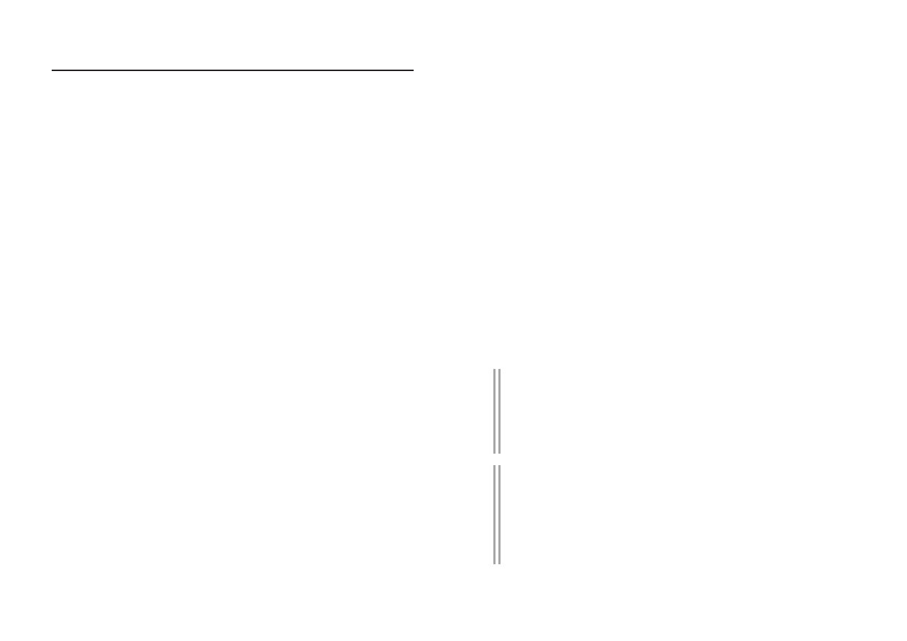
Violações do direito à liberdade de expressão e opinião,
inclusive políticas. Intimidação e sequestro de opositores políticos
27
26
Livro branco sobre violações dos direitos humanos
e o Estado de direito na Ucrânia
6 de junho de 2014
serviço de imprensa da Donbass Fuel and Energy Company
O instituto de pesquisa informou que 40
assentamentos ficaram sem eletricidade no distrito de Slavyansky, 11 hospitais e vários prédios administrativos foram desenergizados.
6 de junho de 2014
no Governo da Região de Rostov (Federação Russa)
ção) informou que
mais de 12.000 cidadãos da Ucrânia chegaram à região de Rostov durante o dia de 5 a 6 de junho.
6 de junho de 2014
Vice-Primeiro Ministro da República da Crimeia da Federação Russa
informou que existem cerca de 5.000 refugiados
da Ucrânia no território da península, entre eles mais de 600 crianças.
7 de junho de 2014
um dos assistentes do presidente foi morto no centro de Donetsk
Presidium do Conselho Supremo do DPR M. Petrukhin, que tratou
da entrega de ajuda humanitária.
7 de junho de 2014
como resultado do bombardeio de Slavyansk pelas forças de segurança ucranianas
um incêndio na oficina de pintura da fábrica de Betonmash. Dois projéteis
também atingiram o prédio do High Voltage Research Institute.
7 de junho de 2014
o chefe da LPR, V. Bolotov, disse que desde 2 de junho, como resultado da
confrontos em Lugansk mataram 13 pessoas, 10 das quais eram civis
.
7 de junho de 2014
"e sobre. Chefe do Ministério de Assuntos Internos" da Ucrânia A. Avakov anunciou sua demissão
20 membros do batalhão “Chernihiv” por se recusarem a ir para a área
da “operação antiterrorista” na região de Luhansk. Anteriormente, ele
informou sobre a demissão de ex-funcionários da unidade Berkut por se recusarem a
participar de uma operação punitiva no sudeste da Ucrânia.
8 de junho de 2014
As forças de segurança ucranianas dispararam artilharia no centro de Sla-
Vyansk. Segundo moradores locais, os projéteis explodiram na área da
praça central, do comitê executivo da cidade e do centro de comunicações. Nessas horas havia muita gente no centro da cidade , pois o culto festivo
terminou na igreja localizada na praça .
Há vítimas entre a população civil, muitos
receberam ferimentos de estilhaços. A cidade tem sérios problemas
com água potável devido a um encanamento de água danificado como resultado de bombardeios.
No mesmo dia, os militares ucranianos voltaram a bombardear
a vila de Semyonovka, perto de Slavyansk.
De acordo com alguns relatos, os sistemas de foguetes de lançamento múltiplo Grad foram usados durante o bombardeio . No site da
milícia, você pode encontrar a seguinte entrada: “Hoje, a vila de Semyonovka, perto de Slavyansk
, foi completamente destruída. Não há um único edifício."
Violações da lei
à liberdade de expressão
opiniões e crenças
inclusive os políticos.
Intimidação e sequestro
oponentes políticos
Declaração Universal dos Direitos Humanos (10 de dezembro de 1948)
Artigo 19
Toda pessoa tem direito à liberdade de opinião e de
livre expressão; esse direito inclui a liberdade de
, sem interferência, ter opiniões e de buscar, receber e difundir
informações e ideias por qualquer meio e independentemente de
fronteiras.
Convenção para a Proteção dos Direitos Humanos
e Liberdades Fundamentais (Roma, 4 de novembro de 1950)
Artigo 10
Todos têm o direito de expressar livremente sua opinião. este
o direito inclui a liberdade de opinião e a liberdade de receber
e difundir informações e ideias sem qualquer interferência
das autoridades públicas e independentemente de
fronteiras.
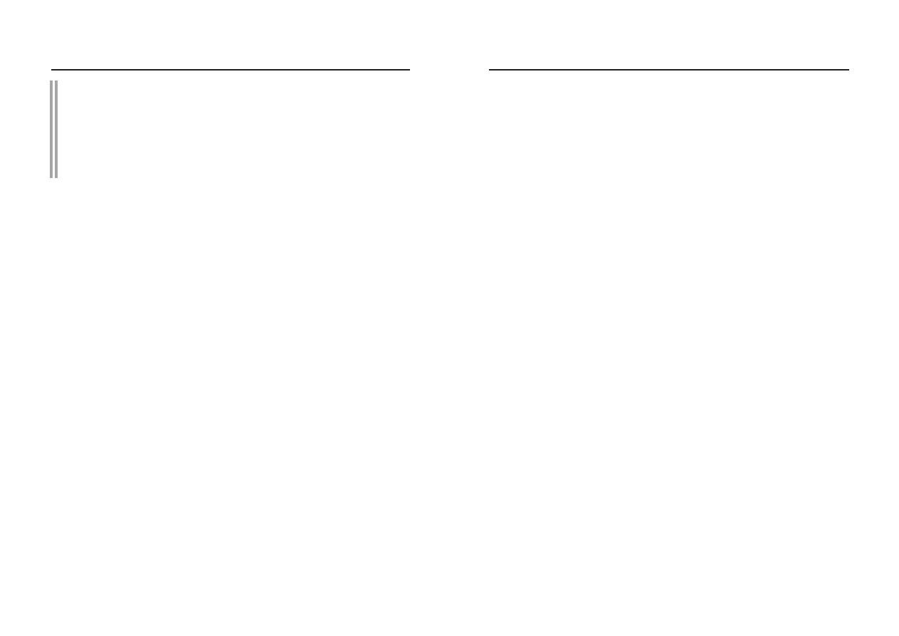
Violações do direito à liberdade de expressão e opinião,
inclusive políticas. Intimidação e sequestro de opositores políticos
29
28
Livro branco sobre violações dos direitos humanos
e o Estado de direito na Ucrânia
Pacto Internacional sobre Direitos Civis
e Políticos (16 de dezembro de 1966)
Artigo 19
Toda pessoa tem o direito de expressar livremente sua
suas opiniões; este direito inclui a liberdade de procurar, receber e difundir
informações e ideias de todo o tipo, independentemente de
fronteiras, verbalmente, por escrito, em forma impressa ou
artística, ou por qualquer outro meio à sua escolha.
Inicialmente
abril de 2014
no Sudeste do país, a SBU realiza batidas
contra os defensores da federalização.
1º de abril de 2014
Oficiais da SBU revistaram o apartamento do deputado Odessky
Conselho Regional do Partido Comunista da Ucrânia A. Albu. Segundo ele, eles estavam procurando
listas de ativistas da associação "Borotba" e armas. No entanto, no final, eles
tiveram que redigir um ato informando que nada de proibido foi encontrado no apartamento
. A. Albu disse que a busca é uma forma de pressão sobre ele como
organizador de protestos de rua em massa com demandas para nacionalizar
a propriedade dos oligarcas e realizar um referendo democrático
sobre o autogoverno da região em Odessa.
Uma busca também foi realizada no apartamento de V. Kaurov, chefe da União dos Cidadãos Ortodoxos da Ucrânia. Em casa, a polícia encontrou o filho do padre,
mas o próprio V. Kaurov, segundo ele, estava fora do alcance
das autoridades ucranianas.
O grupo de captura das forças especiais ucranianas "Alpha" pretendia deter o chefe do
Departamento de Missionário, Catecismo e Educação Religiosa da
Diocese de Odessa, Arcipreste Oleg Mokryak, mas não o encontrou em casa. “O padre
é acusado de contatos com os participantes de manifestações realizadas em Odessa
, nas quais as ações das novas autoridades de Kiev foram criticadas”,
informaram as agências policiais ucranianas.
1º de abril de 2014
em Donetsk, oficiais da SBU prenderam um ativista negro
o whist anti-Maidan, cidadão da Letônia, Benes Ayo, que
falou várias vezes em comícios contra as autoproclamadas autoridades de Kiev.
1º de abril de 2014
o promotor da região Transcarpática O. Sidorchuk afirmou que, de acordo com
sob suas instruções, as autoridades competentes monitoram todas as declarações de partidos
e organizações, inclusive estrangeiras, quanto à presença de apelos
ao separatismo neles. Segundo ele, se
forem encontrados indícios de separatismo em declarações públicas ou declarações de representantes de quaisquer partidos ou organizações
, tal fato será reconhecido como crime contra os fundamentos do poder nacional.
segurança nacional, e os autores serão
responsabilizados criminalmente, determinada por lei.
1º de abril de 2014
em Zaporozhye, um deputado da Câmara Municipal foi severamente espancado
do Partido das Regiões V. Polyusov. De acordo com V. Polyusov, ele foi atacado por
dois homens desconhecidos, cujos rostos estavam escondidos por capuzes.
2 de abril de 2014
na região da Transcarpácia, a SBU abriu um processo criminal
"no fato de Rusyn separatismo." O motivo de sua descoberta foram
declarações publicadas na Internet e expressas na televisão russa
.
Como parte deste caso, N. Starosta, presidente da Rada Popular da Rus Subcarpathian, foi convidado para interrogatório na SBU . Os rusyns transcarpáticos
exigem que na Ucrânia sejam reconhecidos como minoria nacional
, como é feito em 22 países do mundo, incluindo os europeus. Alguns
Rusyns são a favor do reconhecimento do referendo de 1991 sobre um “território autônomo ”, no qual mais de 75% dos transcarpáticos
votaram a favor desta proposta .
2 de abril de 2014
o portal da Internet trueinform.ru fornece dados,
coletados por um dos participantes do movimento de resistência de Kharkov,
segundo o qual a aplicação da lei
pelas autoridades do país iniciou
140 casos criminais por pedidos de separatismo, 53 cidadãos da Ucrânia
foram acusados de separatismo. Esta é a reação do novo governo ucraniano aos
pedidos de federalização do país.
2 de abril de 2014
oligarca ucraniano V. Nemirovsky, nomeado pelo novo
As autoridades de Kiev, o governador da região de Odessa, disseram que há
manifestantes “bons” e “maus”. Ele observou que estava pronto para apoiar aqueles que defendem
a reaproximação da Ucrânia com a Europa, e
chamou os ativistas “pró-russos” de provocadores e prometeu lidar com seus “patrocinadores”.
3 de abril de 2014
O Gabinete do Procurador-Geral da Ucrânia emitiu um mandado de prisão
detenção e entrega ao tribunal do presidente V. Yanukovych, que foi afastado do poder
. Anteriormente, o Gabinete do Procurador-Geral da Ucrânia abriu um processo criminal contra
V. Yanukovych por apelos para “exigir um referendo sobre a determinação
do estatuto de cada região dentro da Ucrânia”.
3 de abril de 2014
iniciou perseguição contra o deputado
Luhansk Câmara Municipal do Partido das Regiões S. Petrakov. Ele
afirmou que sua construtora Warm
House teve problemas.
"
Eu sei claramente que um comando veio de Kiev para bloquear o trabalho
empresas, iniciar processos criminais e, assim, matar "dois coelhos com uma cajadada" -
para redistribuir o setor da construção por concorrência desleal e, ao mesmo tempo,

Violações do direito à liberdade de expressão e opinião,
inclusive políticas. Intimidação e sequestro de opositores políticos
31
trinta
Livro branco sobre violações dos direitos humanos
e o Estado de direito na Ucrânia
mas a limpeza do espaço político de Lugansk. Este último é especialmente
benéfico às vésperas das eleições locais, porque um dos candidatos a
conselhos locais perderá o direito de ser eleito
»
, — observou S. Petrakov. Em vários inter-
nenhuma publicação sugeriu que S. Petrakov também pretende
tentar sua mão durante a eleição do prefeito de Lugansk.
4 de abril de 2014
há mais de cinquenta funcionários no depósito de bonde de Donetsk
assinou na lista para realizar um referendo sobre a adesão da Ucrânia
à União Aduaneira e conceder à língua russa o estatuto de segunda
língua estatal. Ao mesmo tempo, eles se recusaram a se comunicar com os jornalistas
por medo de serem demitidos.
4 de abril de 2014
SBU abre processo criminal na região de Donetsk
contra o deputado do “governador popular” P. Gubarev, cidadão
ucraniano R. Doni, por supostamente preparar motins em massa e pedir
a captura das autoridades estatais. De acordo com a decisão do tribunal, uma
medida de contenção na forma de detenção foi escolhida para ele. R. Doni foi levado
para um centro de detenção preventiva em Kiev.
4 de abril de 2014
o Tribunal de Recurso da região de Kharkiv decidiu vestir
no conhecido ativista do “anti-Maidan” I. Kromsky, uma pulseira eletrônica
para impedir suas “atividades ilegais”. O tribunal também ordenou
que ele entregasse todos os documentos que lhe dão o direito de viajar para o exterior,
e escolheu uma medida de restrição na forma de prisão domiciliar.
5 de abril de 2014
em Mariupol (região de Donetsk) os oficiais da SBU são
O “Prefeito do Povo” da cidade D. Kuzmenko, eleito em uma reunião dos habitantes da cidade, foi detido
. No mesmo dia, o irmão do “prefeito popular”
Denis foi detido em seu apartamento, mas depois foi liberado. De acordo com a mídia local,
outra figura pública bem conhecida, um ativista do Partido Comunista da
Ucrânia, D. Pugovkin, também foi detido.
6 de abril de 2014
em Kiev, o chamado conselho de centenas de Maidan (conselho de comando
líderes de formações paramilitares de ultradireita) decidiram
impor um “toque de recolher” na Maidan Nezalezhnosti (Praça da Independência)
das 01:00 às 05:00. Foi estabelecida uma proibição completa de
eventos públicos e ações de massa que não foram aprovadas pela “sede do
escritório do comandante Maidan”. É proibido circular desnecessariamente pela praça
, as patrulhas têm o direito de verificar documentos.
6 de abril de 2014
em Kiev, o chamado Conselho Maidan exigiu um acordo
para ficar com ele a composição do Gabinete de Ministros da Ucrânia. Os ministros foram "convidados"
para a "assembléia popular", que seria realizada no Maidan em 9 de abril.
“Cada ministro teve que apresentar teses: relatar que tipo de
formação ele tem, onde trabalhou, o que vai alcançar no cargo.
E se Maidan disser que não acredita nessa pessoa, então ele deve renunciar
, e a Verkhovna Rada terá que propor uma nova pessoa
para esta posição”, disse o “conselho de Maidan”.
6 de abril de 2014
confrontos entre simpatizantes da federação ocorreram em Kharkov
lização da Ucrânia com ativistas do "Setor Direito".
7 de abril de 2014
cerca de 100 ativistas de autodefesa Maidan em Kiev,
"Setor Direito" e "Automaidan" bloquearam a construção do Supremo Tribunal da
Ucrânia, onde seria realizado o Congresso de Juízes da Ucrânia. Os extremistas
invadiram o prédio e exigiram que a lei da lustração fosse aprovada, depois levaram
os delegados do congresso para a rua. À saída do edifício do Supremo Tribunal, vários
radicais atacaram o ex-ministro da Justiça da Ucrânia A. Lavrynovych,
bateram-lhe na cabeça e tentaram capturá-lo. Apenas a intervenção pessoal
do chefe do chamado comitê de lustração da Verkhovna Rada da Ucrânia
, E. Sobolev, o salvou de represálias.
7 de abril de 2014
no centro de Odessa na Primorsky Boulevard, várias dezenas
Militantes armados com paus do Setor Direita espancaram quatro
jovens que caminhavam pela rua com fitas de São Jorge.
Na noite de
7 a 8 de abril de 2014
em Kharkov perto do edifício da administração estadual regional
Militantes com máscaras e uniformes com patches da unidade Jaguar das
Tropas Internas da Ucrânia, juntamente com os neonazistas do Setor Direita, realizaram
a chamada operação antiterrorista: usando equipamentos especiais,
dispersaram um comício de apoiadores de federalização e expansão do governo autônomo no
sudeste da Ucrânia. 64 pessoas foram detidas, o centro da cidade foi isolado.
De manhã, começou a “limpeza” de Kharkov daqueles que discordavam da política das
autoproclamadas autoridades de Kiev. Cidadãos com
fitas de São Jorge foram detidos. Estrangeiros que não falam
russo ou ucraniano foram notados entre os punidores. Manifestantes feridos disseram que estavam
com medo de ir aos hospitais por causa de possíveis represálias.
Na noite de
7 a 8 de abril de 2014
em Nikolaev perto do edifício da administração estadual regional
Os neonazistas atacaram o acampamento de ativistas do movimento
pela federalização e expansão do autogoverno no sudeste da Ucrânia.
Os agressores usaram paus, armas traumáticas, explosivos
e fogos de artifício. 15 pessoas ficaram feridas, incluindo ferimentos a bala,
11 delas foram hospitalizadas. 23 pessoas foram detidas pela polícia.

Violações do direito à liberdade de expressão e opinião,
inclusive políticas. Intimidação e sequestro de opositores políticos
33
32
Livro branco sobre violações dos direitos humanos
e o Estado de direito na Ucrânia
8 de abril de 2014
e sobre. Ministro de Assuntos Internos da Ucrânia A. Avakov recebeu
a decisão de realizar uma "limpeza" nas fileiras da polícia de Kharkov. Ele disse
que mais de 30 por cento do pessoal será apresentado para demissão
por acusações de sabotagem durante a dispersão de manifestações por opositores do
regime de Kiev.
8 de abril de 2014
na Verkhovna Rada da Ucrânia durante a sessão plenária
Uma briga eclodiu entre deputados do Partido Comunista (KPU)
e o partido nacionalista Svoboda.
O líder comunista P. Symonenko acusou o atual
governo de "inação no sudeste da Ucrânia" da tribuna do parlamento. “As pessoas exigem há muito tempo
que o russo seja o segundo idioma do estado. As pessoas exigem ouvir
seus problemas sociais. Mas as autoridades não os ouvem”, disse P.
Simonenko. Ao mesmo tempo, ele observou que “o atual governo chama os manifestantes
que tomaram os prédios administrativos em Donetsk, Lugansk e Kharkov de
separatistas. E quando houve apreensões de
administrações estaduais regionais na Ucrânia Ocidental, os deputados de Svoboda se declararam patriotas”,
acrescentou o líder comunista.
Depois dessas palavras, os deputados de Svoboda correram para P. Symonenko e
o empurraram para fora do pódio. Deputados do Partido Comunista saíram em defesa de seu líder,
resultando em uma briga. Em seguida, os deputados da facção do Partido Comunista e a maioria
dos deputados do Partido das Regiões deixaram a sessão do Parlamento da
Ucrânia.
8 de abril de 2014
Piquetes foram realizados perto do edifício da Verkhovna Rada da Ucrânia em Kiev
neonazistas com a exigência de “ser preso por usar a fita de São Jorge
e outros símbolos russos”.
8 de abril de 2014
deputados da Verkhovna Rada aprovaram alterações ao Código Penal
Código da Ucrânia, aumentando a pena de prisão por “separatismo”,
bem como a Lei sobre a Lustração de Juízes.
145 juízes serão verificados por envolvimento na sanção
de proibições de realizar ações em massa no Maidan e
responsabilizar seus participantes.
Ameaças constantes de representantes do regime de Kiev são dirigidas aos moradores
do sudeste da Ucrânia, que são a favor da federalização do país. Eles
são chamados pejorativamente de "separatistas" e "besouros do Colorado".
8 de abril de 2014
Adjunto da Verkhovna Rada de Svoboda I. Farion, comentário
comentando sobre a “limpeza” realizada em Kharkov daqueles que discordavam da política do
regime de Kiev, ela disse: “Eu teria agido muito mais duramente. eu apenas
tomada. O inimigo domina nossa terra. Ele teve que ser expulso daqui
desde 1654. Portanto, a reação de hoje é absolutamente adequada, mas
as medidas devem ser muito mais duras. Essas criaturas merecem apenas uma
coisa - a morte.
9 de abril de 2014
em Ivano-Frankivsk na praça central da cidade
Por iniciativa da “
autodefesa Maidan” local e do “Setor Direito”, foi erguido um chamado pilar da vergonha em frente ao prédio da administração estadual regional,
no qual fotografias de “funcionários corruptos” e pessoas que
“se desacreditaram cooperando com o regime de Yanukovych” são enforcados.
9 de abril de 2014
em Nikolaev, extremistas do Setor Direita jogaram
ovos, encharcados com água, e depois espancado o candidato a presidente da Ucrânia,
deputado da Verkhovna Rada do Partido das Regiões O. Tsarev, que veio
à cidade para visitar os ativistas feridos do comício em apoio à
federalização do país no hospital.
Na noite de
9 a 10 de abril de 2014
em Kiev houve um incêndio no escritório do Partido Comunista.
Desde o final de fevereiro de 2014, este edifício foi apreendido por ativistas do Euromaidan
. Abrigava extremistas da organização neonazista
S-14, o comitê de lustração e o chamado escritório Maidan cem
.
A facção do CPU recusou-se a votar na Verkhovna Rada até que o
escritório do partido lhes fosse devolvido. Na tarde do dia 9 de abril, os “Euromaidanitas” foram obrigados a abandonar o edifício por decisão judicial
, tendo previamente encenado um pogrom, partindo os
móveis do mesmo, retirando equipamento de escritório e deixando para trás contentores de gasolina
. Segundo os bombeiros, a causa do incêndio foi um incêndio criminoso, uma vez que o fogo
deflagrou simultaneamente em três locais.
10 de abril de 2014
em Odessa durante os eventos festivos dedicados
Por ocasião do 70º aniversário da libertação da cidade dos ocupantes alemães e romenos,
houve confrontos entre partidários e opositores do Euromaidan
. Nacionalistas ucranianos do grupo Odessa Maidan arrancaram
a bandeira soviética da Vitória do mastro e a pisotearam.
Várias dezenas de militantes do "Euromaidan" bloquearam a saída do hotel
onde o candidato a presidente da Ucrânia, o deputado da Verkhovna Rada
do Partido das Regiões O. Tsarev ficou. Armados com pedras e paus, os extremistas
gritavam: "Tsarev, saia!" Uma tentativa dos “anti-Maidanitas” de desbloquear
as abordagens ao hotel terminou em uma briga. 10 pessoas ficaram feridas.
11 de abril de 2014
Deputado da Verkhovna Rada da Ucrânia do Batkiv-
China" A. Briginets escreveu no Twitter que mais de 100 cidadãos da Rússia

Violações do direito à liberdade de expressão e opinião,
inclusive políticas. Intimidação e sequestro de opositores políticos
35
34
Livro branco sobre violações dos direitos humanos
e o Estado de direito na Ucrânia
As federações que apoiaram a anexação da Crimeia à Rússia estão proibidas de entrar na
Ucrânia. O deputado se referiu à resposta da SBU, ao seu pedido.
11 de abril de 2014
cerca de 50 radicais do Setor Direita invadiram Rivne
ao escritório da filial regional de Rivne do Partido Comunista da Ucrânia e exigiu
a interrupção das atividades do Partido Comunista da Ucrânia e a transferência das instalações para a propriedade da
comunidade territorial. Os atacantes apreenderam publicações e jornais do partido,
que queimaram no pátio do prédio e, depois de expulsar representantes do Partido Comunista,
fecharam as instalações.
13 de abril de 2014
Confrontos eclodiram entre torcedores em Kharkiv
"Euromaidan" e cidadãos que defendem a federalização da Ucrânia.
50 pessoas ficaram feridas, incluindo um policial.
13 de abril de 2014
em Zaporizhia houve um ataque de partidários da Euro-
Maidan” sobre os participantes do comício dos opositores do regime de Kiev. Há
feridos.
13 de abril de 2014
em Mariupol durante confrontos entre torcedores e adversários
cerca de 20 pessoas ficaram feridas durante a federalização da Ucrânia.
14 de abril de 2014
em Kiev, o candidato a presidente da Ucrânia O. Tsarev foi
severamente espancado no prédio do canal ICTV, onde participou da
transmissão ao vivo do programa Liberdade de Expressão. A política foi atacada por uma multidão agressiva
liderada por extremistas do setor de direita, que exigiram que ele se recusasse
a participar das eleições presidenciais. O. Tsarev é o presidente do
Fórum Antifascista da Ucrânia e defende uma estrutura federal do
país.
Também perto do edifício mencionado, o candidato a Presidente da Ucrânia, Deputado do Povo da Verkhovna Rada do
Partido das Regiões M. Dobkin foi atacado por radicais nacionais . Seu carro foi esmagado, as rodas furadas, o
próprio político foi polvilhado com farinha e encharcado de verde brilhante. Os assistentes de M. Dobkin
sofreram lesões corporais. Anteriormente, o político foi repetidamente preso
e ameaçado de represália por suas críticas às atuais autoridades de Kiev.
14 de abril de 2014
em Sumy radicais do "Setor Direito" destruíram o escritório
KPU, destruiu o retrato de V.I. Lenin, literatura do partido e
fitas de São Jorge, espancou um dos funcionários.
16 de abril de 2014
desapareceram (provavelmente sequestrados) vários líderes do povo
milícia de Donbass:
O. Seletskaya, um dos líderes da milícia Donbass, desapareceu em Mariupol . Um mês antes, ela havia sido demitida da fábrica Azovelectrostal por
ser "muito ativa na vida pública";
em Horlivka, três ativistas da milícia popular desapareceram (
o prefeito popular A. Sapunov, eleito no comício, e seus assistentes mais próximos, o
casal Evgeny e Tatyana Shevchenko).
18 de abril de 2014
nas proximidades de Donetsk, um dos coordenadores de DPR
L. Baranov foi colocado à força em um jipe (presumivelmente por
oficiais da SBU) e levado em uma direção desconhecida.
19 de abril de 2014
em Kharkiv, policiais ucranianos
as autoridades detiveram um dos coordenadores do movimento pela federalização
da Ucrânia, K. Dolgov, sob a acusação absurda de incendiar um caixa eletrônico.
21 de abril de 2014
em sua conta do Facebook candidato presidencial
Ucrânia, Verkhovna Rada deputado O. Lyashko propôs destruir por ataques aéreos ou
mísseis torres de TV que transmitem canais de TV russos,
que, em sua opinião, “são um instrumento de propaganda anti-ucraniana
”. “Também é necessário destruir os ninhos de terroristas com ataques aéreos
pontuais”, escreveu O. Lyashko, chamando os moradores do sudeste
da Ucrânia, que defendem a federalização do país, de “terroristas”.
21 de abril de 2014
em Kiev, militantes do "Setor Direito" espancaram brutalmente o líder
Movimento totalmente ucraniano "Cossacos Fiéis" A. Selivanov. Segundo
a vítima, o ataque deveu-se às suas atividades públicas
destinadas a desenvolver relações estreitas entre a Ucrânia e a Rússia.
27 de abril de 2014
uma multidão agressiva de fãs de clubes de futebol em Kharkiv
"Metalist" e "Dnepr", armados com paus, fogos de artifício e pedras, atacaram
um comício de partidários desarmados da federalização da Ucrânia. Como resultado,
14 pessoas foram hospitalizadas com ferimentos de gravidade variável.
27 de abril de 2014
apreendido no início de março pelo SBU "povo
Governador” de Donetsk P. Gubarev anunciou uma greve de fome por tempo indeterminado em protesto
contra a operação militar em Slavyansk. Representantes da
OSCE, que visitaram o preso político no centro de detenção pré-julgamento de Kiev, relataram
que a greve de fome teve um forte impacto em sua saúde.
28 de abril de 2014
no aeroporto de Kherson, representantes armados de
Várias organizações nacionalistas bloquearam o avião do candidato presidencial ucraniano M. Dobkin na passarela , que,
como parte de sua campanha eleitoral, chegou à cidade para se encontrar com
os eleitores.
O candidato presidencial foi forçado a deixar Kherson sem sair do avião .
28 de abril de 2014
em Donetsk, oficiais da SBU detiveram um vice
"prefeito do povo" de Slavyansk I. Perepechaenko.

Violações do direito à liberdade de expressão e opinião,
inclusive políticas. Intimidação e sequestro de opositores políticos
37
36
Livro branco sobre violações dos direitos humanos
e o Estado de direito na Ucrânia
28 de abril de 2014
partidários da federalização da Ucrânia, candidatos a
Os presidentes da Ucrânia O. Tsarev e M. Dobkin não foram autorizados a participar nos
debates pré-eleitorais no ar do First National TV Channel, programados
para o período de 9 a 23 de maio.
28 de abril de 2014
foi feito um atentado contra o prefeito de Kharkov G. Kernes, que
ry recebeu um grave ferimento de bala.
28 de abril de 2014
em Donetsk trouxe de diferentes regiões da Ucrânia
futebol "ultras", armados com paus, correntes e
armas traumáticas, gritando slogans nacionalistas, atacaram os participantes da
procissão antifascista. 14 civis procuraram
ajuda médica com ferimentos de gravidade variável.
29 de abril de 2014
no centro de Kiev em Maidan Nezalezhnosti ocorreu
uma briga em massa entre representantes da chamada autodefesa Maidan
e neonazistas da organização Patriota da Ucrânia.
29 de abril de 2014
líder do movimento público "Sudeste" O. Tsarev
retirou a sua candidatura das eleições presidenciais na Ucrânia. Explicando sua
decisão, ele disse que as autoridades de Kiev o privaram da oportunidade de transmitir
a voz do Sudeste aos moradores de outras regiões da Ucrânia. "Vir a Kiev para um
discurso está associado a um risco para minha vida, e a participação em um debate televisionado no canal de TV UT-1 com a ajuda de uma teleconferência foi rejeitada", disse o serviço de imprensa de O. Tsarev ,
citando o ex-candidato. como dizendo.
30 de abril de 2014
em Nikolaev, desconhecidos atiraram contra o carro do "povo
Prefeito" D. Nikolaev. Anteriormente, ele e sua esposa haviam recebido repetidamente telefonemas
ameaçando represálias.
1º de maio de 2014
Tribunal Administrativo Distrital de Kiev proibiu a atividade
no território da Ucrânia do partido ucraniano “Unidade Russa”, acusando
-o de “invasão da soberania e integridade territorial do estado
”.
2 de maio de 2014
um vídeo apareceu na Internet em que ativistas
O Setor Direita reivindicou a responsabilidade por
sequestros passados e futuros de ativistas da resistência em Kharkiv.
Na noite de
5 a 6 de maio de 2014
em Dnepropetrovsk, desconhecidos encenaram uma
queima na sala de espera do deputado do povo da Ucrânia, o líder do movimento "Sudeste"
O. Tsarev.
6 de maio de 2014
A Verkhovna Rada da Ucrânia decidiu remover a facção
Partido Comunista da Ucrânia a partir de uma reunião fechada, onde
ouviram um relatório das agências de aplicação da lei sobre a situação no país. Facção do Partido das Regiões
nova também saiu da sala de reunião em solidariedade. “Hoje, um
ponto de bala foi colocado na democracia parlamentar”, comentou o
líder do Partido Comunista da Ucrânia P. Symonenko.
8 de maio de 2014
em Kharkiv, agências policiais ucranianas detidas
ou o ativista do movimento pela federalização da Ucrânia, o presidente da
filial de Kiev do clube de motociclistas "Night Wolves" A. Vereshchagin sob a acusação
de "separatismo". O motivo foi que ele entregou ajuda humanitária
(insulina e medicamentos para crianças) a Slavyansk.
10 de maio de 2014
na cidade de Bryanka (região de Luhansk), desconhecidos espancaram e depois
um defensor da federalização da Ucrânia foi morto a tiros por distribuir
panfletos pedindo a participação em um referendo.
13 de maio de 2014
um ativista do movimento pela federalização foi sequestrado em Kharkiv
Ucrânia, presidente da filial de Kiev do clube de motociclistas "Night Wolves"
A. Vereshchagin. O sequestro ocorreu imediatamente após sua libertação do centro de detenção preventiva sob
fiança de 97.000 hryvnia (ele foi detido em 8 de maio de 2014 por entregar
ajuda humanitária a Sloviansk). Na saída do centro de detenção preventiva, A. Vereshchagin foi empurrado
para dentro de um carro e levado em direção desconhecida. Militantes da organização extremista "Setor Direito" estão supostamente
envolvidos no sequestro de A. Vereshchagin .
13 de maio de 2014
foi feita uma tentativa contra o "governador popular" de Luhansk
Região de V. Bolotov. Seu carro perto da aldeia de Izvarino (60 km de
Lugansk) foi disparado de uma emboscada por pessoas desconhecidas. V. Bolotov foi ferido
no ombro e foi levado ao hospital.
14 de maio de 2014
em Dnepropetrovsk homens armados com máscaras e preto
Na forma da Guarda Nacional, eles tentaram incendiar a casa do líder do
movimento do Sudeste, deputado da Verkhovna Rada da Ucrânia O. Tsarev. Eles quebraram a cerca,
saquearam a casa, atiraram em um carro estacionado no quintal e foram embora.
Depois disso, um incêndio começou na casa. No entanto, como se viu,
os autores cometeram um erro com o endereço e, de fato, a casa dos
vizinhos de O. Tsarev foi danificada.
14 a 16 de maio de 2014
na cidade de Torez (região de Donetsk), três
ativistas do governo. “Na manhã de 16 de maio,
três ativistas já haviam desaparecido em Torez. A líder do DPR em Torez, Irina Poltoratskaya, desapareceu
na noite de 14 para 15 de maio. Na noite de 15 para 16 de maio, Igor Polyakov,
ativista da DPR, foi sequestrado. Na tarde de ontem, 15 de maio, Denis Yaniev saiu de casa e não voltou. Como
se sabe, ele foi membro da comissão do referendo da DPR”,
informou a imprensa local. 21 de maio, responsável pelo sequestro de
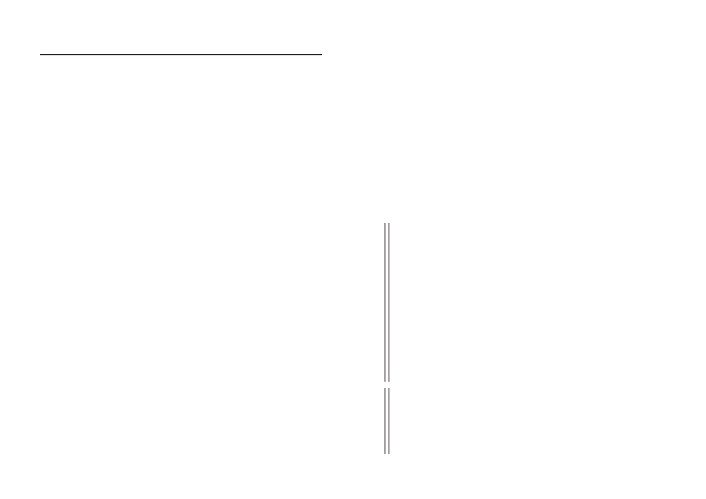
Restrições à liberdade dos meios de comunicação e às atividades dos jornalistas
39
38
Livro branco sobre violações dos direitos humanos
e o Estado de direito na Ucrânia
pessoas, bem como Oleksandr Simka da cidade de Snizhne (região de Donetsk), foi assumido pelo
batalhão "Ucrânia" do deputado do Verkhovna Rada O. Lyashko.
15 de maio de 2014
uma gravação de áudio do anterior
conversa telefônica do oligarca ucraniano I. Kolomoisky com o líder
do movimento do Sudeste O. Tsarev. I. Kolomoisky afirmou que a
comunidade judaica de Dnepropetrovsk acusou O. Tsarev da morte de um judeu em Mariupol
, e agora uma recompensa de um milhão de dólares foi colocada em sua cabeça. Além disso
, I. Kolomoisky prometeu a O. Tsarev "pendurar seus entes queridos na
praça".
16 de maio de 2014
líder do Partido Comunista da Ucrânia, candidato a presidente da Ucrânia
P. Symonenko durante o debate televisionado entre os candidatos presidenciais no
First National Channel anunciou a retirada de sua candidatura das eleições,
por considerar as próximas eleições desonestas e ilegítimas.
Após o debate televisionado, cerca de 30 pessoas
com morcegos e coquetéis molotov esperavam na entrada do centro de TV de P. Symonenko. O líder do Partido Comunista saiu do prédio
pela saída de emergência, mas os perseguidores logo ultrapassaram seu carro,
bloquearam-no e quebraram as janelas. Garrafas de coquetel molotov foram jogadas no carro
.
Representantes do chamado automaidan reivindicaram a responsabilidade pelo ataque .
Na noite de
20 a 21 de maio de 2014
em Dnepropetrovsk, desconhecidos incendiaram uma casa
e o carro de O. Tsarev. Ele disse que às duas horas da manhã
homens armados chegaram em dois ônibus e jogaram coquetéis molotov na casa.
27 de maio de 2014
um ataque foi feito no escritório do Partido Comunista da Ucrânia no Dnipro-
Petrovsk.
29 de maio de 2014
cerca de 30 pessoas com uniformes de proteção e máscaras entraram na
o território da Dneprovsk Paper Factory LLC, de propriedade
do líder do movimento do Sudeste, O. Tsarev, e anunciou que a fábrica havia mudado
de proprietário.
3 de junho de 2014
A Verkhovna Rada da Ucrânia votou para atrair
O deputado O. Tsarev, que defende a federalização da Ucrânia, a responsabilidade criminal
e sua prisão.
Restrição da liberdade de imprensa
e atividades dos jornalistas
Declaração Universal dos Direitos Humanos (10 de dezembro de 1948)
Artigo 3
Toda pessoa tem direito à vida, à liberdade e à
imunidade.
Artigo 9
. Ninguém pode ser sujeito a prisão arbitrária,
detenção ou exílio.
Artigo 13
.
1. Toda pessoa tem o direito de circular livremente e escolher
sua residência dentro dos limites de cada Estado.
2. Toda a pessoa tem o direito de sair de qualquer país, incluindo o seu
, e de regressar ao seu país.
Artigo 19
Toda pessoa tem direito à liberdade de opinião e de
livre expressão; esse direito inclui a liberdade de
, sem interferência, ter opiniões e de buscar, receber e difundir
informações e ideias por qualquer meio e independentemente de
fronteiras.
Convenção para a Proteção dos Direitos Humanos
e Liberdades Fundamentais (Roma, 4 de novembro de 1950)
Artigo 2
O direito de cada pessoa à vida é protegido por lei. Nenhum
pode ser intencionalmente privado da vida, exceto em execução de uma
sentença de morte proferida por um tribunal por um delito para
o qual a lei preveja tal punição.
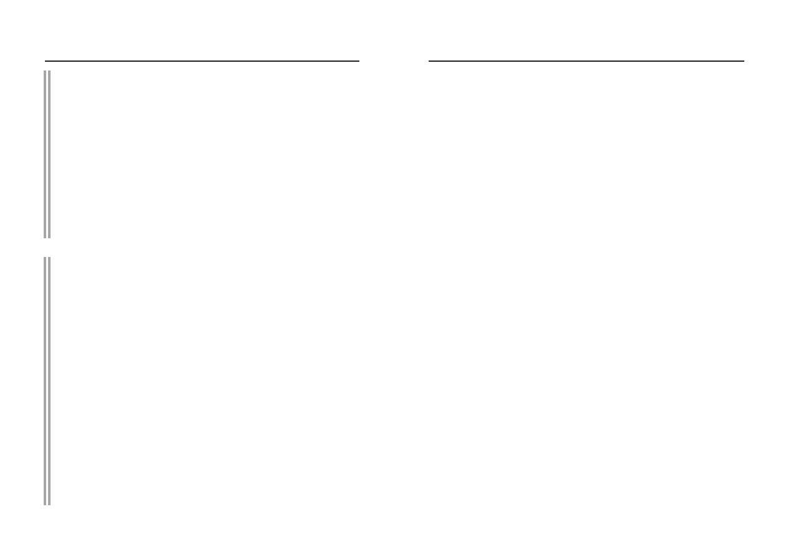
Restrições à liberdade dos meios de comunicação e às atividades dos jornalistas
41
40
Livro branco sobre violações dos direitos humanos
e o Estado de direito na Ucrânia
Artigo 5
Todos têm direito à liberdade e segurança pessoal.
Artigo 6
Toda pessoa, em caso de controvérsia sobre seus direitos e obrigações civis
qualquer acusação criminal contra ele, terá
direito a uma audiência justa e pública dentro de um prazo razoável
por um tribunal independente e imparcial estabelecido por
lei.
Artigo 10
Todos têm o direito de expressar livremente sua opinião. este
o direito inclui a liberdade de opinião e a liberdade de receber
e difundir informações e ideias sem qualquer interferência
das autoridades públicas e independentemente de
fronteiras.
Artigo 13
Todas as pessoas cujos direitos e liberdades são reconhecidos neste
convenções, é violada, tem direito a um recurso efetivo perante uma
autoridade pública, mesmo que a violação tenha sido
cometida por pessoas que atuem em funções oficiais.
Pacto Internacional sobre Direitos Civis
e Políticos (16 de dezembro de 1966)
Artigo 6
O direito à vida é o direito inalienável de todo ser humano.
Este direito é protegido por lei. Ninguém pode ser arbitrariamente privado
da vida.
Artigo 7
Ninguém será submetido a tortura ou tortura cruel, desonrosa
tratamento ou punição degradante ou degradante.
Artigo 9
Toda pessoa tem direito à liberdade e segurança pessoal
novidade. Ninguém pode ser sujeito a prisão ou
detenção arbitrária. Ninguém será privado de liberdade
, exceto por motivos e de acordo com o procedimento
estabelecido por lei.
Artigo 12
Para qualquer pessoa legalmente no território de qualquer
do Estado gozam, nesse território, do direito à livre
circulação e à liberdade de escolha de residência.
Artigo 19
Todos têm direito à livre expressão
sua opinião; este direito inclui a liberdade de procurar, receber e difundir
informações e ideias de todo o tipo, independentemente de
fronteiras, verbalmente, por escrito ou em
forma impressa ou artística, ou por qualquer outro meio à sua
escolha.
2 de abril de 2014
Guardas de fronteira ucranianos não deixaram uma equipe de filmagem entrar no país
grupo da empresa de televisão russa REN TV. O repórter R. Super e o cinegrafista
P. Kosikhin foram carimbados “Proibido
entrar na Ucrânia” em seus passaportes.
Em apenas uma semana, de 26 de março a 2 de abril,
8 equipes de filmagem de empresas de televisão russas foram deportadas de Kiev, Donetsk e Odessa.
7 de abril de 2014
O serviço de fronteira da Ucrânia proibiu a entrada de dois jornalistas
folhas da versão em russo da revista Forbes, que foram retiradas do
trem Moscou-Dnepropetrovsk na estação Kazachya Lopan e enviadas pelo
próximo trem para a Rússia. Oficialmente, os correspondentes foram impedidos
de entrar com a frase: “Não há
apoio financeiro suficiente e o objetivo da viagem não foi confirmado”. Além disso, como observa a revista,
“guardas de fronteira disseram aos repórteres que, se tentassem
cruzar a fronteira novamente, seriam proibidos de entrar na Ucrânia por três anos”.
7 de abril de 2014
operador da agência de vídeo RT RUPTLY, parte
Como parte do canal de TV russo Russia Today (RT), A. Ivanov foi detido
e interrogado no aeroporto de Donetsk. De acordo com o jornalista,
eles retiraram seu passaporte, prometendo devolvê-lo depois de retornar à Rússia,
e o colocaram em um avião com destino a Moscou. Segundo o chefe do canal de TV
M. Simonyan, o serviço de fronteira da Ucrânia explicou esta decisão pela falta
de fundos para ficar A. Ivanov na Ucrânia.
8 de abril
2014
M. Dodonov, colunista do canal de TV Zvezda, foi detido
Zhan guardas de fronteira ucranianos no aeroporto de Donetsk. O jornalista foi
mantido por mais de sete horas no chamado banheiro, enquanto seus pertences
e documentos eram examinados pelos serviços de segurança. Depois disso, ele foi
oferecido para comprar uma passagem de volta às suas próprias custas. Segundo o jornalista,
quando os guardas de fronteira o escoltaram a bordo, nenhum dos tripulantes ficou surpreso,
porque mais tarde no avião se juntaram a ele colegas - correspondentes
do Canal Cinco de São Petersburgo, bem como do canal Podmoskovye. Da mesma forma , naquele dia, um correspondente do canal Life News TV
foi expulso do território da Ucrânia .
8 de abril de 2014
fotojornalista da agência "RIA Novosti" A. Kuden-
a quem foi negada a entrada no país no controle de fronteira
do aeroporto de Donetsk sob o pretexto de alegada falta de
fundos suficientes para permanecer no território da Ucrânia.
8 de abril de 2014
agências de aplicação da lei da Ucrânia frustraram os comandantes-
ku imediatamente para vários funcionários do Canal Cinco de São Petersburgo. Diários-

Restrições à liberdade dos meios de comunicação e às atividades dos jornalistas
43
42
Livro branco sobre violações dos direitos humanos
e o Estado de direito na Ucrânia
S. Bernwald e K. Krylov não foram autorizados a entrar em Donetsk, e a equipe de filmagem do
programa de informação “Now” A. Mayorov e S. Guryanov
foram detidos no aeroporto de Kharkiv sem explicação.
8 de abril de 2014
Guardas de fronteira ucranianos do trem "Moscou -
Lugansk” foi filmado pelo correspondente da “RIA Novosti” A. Malyshkin. Ele também foi
impedido de entrar no país com a frase “falta de fundos para
permanecer no território da Ucrânia”.
8 de abril de 2014
funcionários da Administração Estatal Regional de Kharkiv
A polícia não permitiu que o correspondente da RIA Novosti fizesse um tour organizado para jornalistas ao redor
do prédio da administração regional do estado, que havia sido liberado dos manifestantes da federalização à noite. O correspondente da RIAN teve sua
admissão negada sob a alegação de que representava uma publicação russa.
Na noite de
8 a 9 de abril de 2014
Editor-chefe da revista "Russian Pio-
ner", correspondente especial do jornal "Kommersant" A. Kolesnikov
e fotojornalista desta publicação D. Azarov, guardas de fronteira ucranianos
retiraram do trem "Moscou-Donetsk" e proibiram-nos de entrar no país sob o
pretexto forçado de falta de recursos financeiros, apesar
de cada um deles ter consigo 50 mil rublos. e os jornalistas pretendiam ficar
três dias em Donetsk.
10 de abril de 2014
organização não governamental internacional "Komi-
Proteção de Jornalistas” pediu às autoridades ucranianas que não impeçam
o trabalho de seus colegas russos, pois restringir o acesso à mídia reforça suspeitas
e mal-entendidos. Em 10 de abril de 2014, os
guardas de fronteira ucranianos impediram
que mais de 20 jornalistas russos entrassem na Ucrânia sob falsos pretextos.
10 de abril de 2014
A OSCE recebeu relatórios de mais de 20 casos em que
Jornalistas russos foram impedidos de entrar na fronteira ucraniana,
disse o representante da OSCE para a Liberdade de Mídia, D. Mijatovic.
10 de abril de 2014
chefe da empresa regional de televisão e rádio de Lugansk
R. Miroshnik foi demitido pela decisão do Comitê Estatal Ucraniano de Televisão e
Radiodifusão “por críticas insuficientes aos separatistas no ar do canal de TV”.
Comentando sua demissão, R. Miroshnik observou: “O que está acontecendo
hoje é a luta contra a dissidência, a falta de vontade de ouvir o outro lado
e a falta de vontade de ouvir o Sudeste...”.
13 de abril de 2014
jornalista do jornal "AiF" V. Kozhemyakin foi preso por
posto fronteiriço de Novoazovsk, região de Donetsk, e deportado para a Rússia.
Ele foi proibido de entrar no território da Ucrânia por um período de três anos.
14 de abril de 2014
correspondente da estação de rádio "Echo of Moscow" V. Boyko,
que foi enviado para cobrir a situação no leste da Ucrânia, teve sua
entrada negada no país, segundo o site da estação de rádio.
14 de abril de 2014
correspondente da agência "URA.Ru" R. Zhuravlev foi
detido no aeroporto de Kiev "Borispol" ao cruzar a fronteira
com a Ucrânia. Ele foi proibido de entrar no país por cinco anos.
15 de abril de 2014
Jornalistas russos detidos em Odessa
Canal de TV "REN TV" M. Plakhotnik e S. Sidorenko. Eles foram revistados
e interrogados.
16 de abril de 2014
perto da cidade de Izyum (região de Kharkiv) foi detido
Equipe de filmagem do VGTRK: correspondente especial E. Reshetnev, cinegrafista S. Truskov e engenheiro
V. Klivanov. Os jornalistas foram revistados e interrogados.
17 de abril de 2014
confrontos ocorreram na região de Donetsk
moradores com tropas enviadas pelo regime de Kiev para "restaurar a
ordem". Em Mariupol, os militares ucranianos dispararam contra moradores locais que
tentavam entrar no território da unidade militar nº 3057 das
tropas internas da Ucrânia. 3 pessoas morreram e 13 ficaram feridas.
Imediatamente após o tiroteio, K. Babayeva e M. Povalyayeva, correspondente e operador do canal de TV Life News,
foram espancados e detidos pela polícia ucraniana.
Seus telefones e gravador de voz foram confiscados. Eles foram levados para o departamento de assuntos internos da cidade de Mariupol
, onde foram mantidos por um dia e submetidos a
muitas horas de interrogatório.
23 de abril de 2014
em Pershotravinsk (região de Dnipropetrovsk) Ucraniano-
As forças de segurança detiveram um funcionário do canal de TV russo NTV, cidadão
da Bielorrússia S. Chirich. Ele foi submetido a pressões físicas e psicológicas
para forçar uma “confissão” de que era um espião russo.
25 de abril de 2014
em Donetsk, jornalistas do canal de TV Life News Y. Pusto-
Plesnova e M. Pudovkin foram detidos pela SBU. Acusando os jornalistas
de atividades “ameaçando a segurança e a integridade territorial da
Ucrânia”, eles foram deportados do território da Ucrânia.
25 de abril de 2014
Guardas de fronteira ucranianos negam entrada na Ucrânia
correspondente especial da All-Russian State Television and Radio Broadcasting Company A. Rogatkin.
26 de abril de 2014
correspondente de "Life News" S. Golyandin foi detido
Militares ucranianos em um posto de controle na fronteira das
regiões de Kharkov e Donetsk. Ele foi submetido a um interrogatório humilhante "com paixão".
28 de abril de 2014
em Kiev, bandidos agressivos fizeram piquetes em dois
Canais de TV indianos - "Inter" e "ICTV" com uma demanda para remover o russo-

Restrições à liberdade dos meios de comunicação e às atividades dos jornalistas
45
44
Livro branco sobre violações dos direitos humanos
e o Estado de direito na Ucrânia
programas de linguagem e séries. Na sede do canal Inter TV, eles
quebraram as janelas, jogaram um objeto dentro, do qual havia fumaça.
Hooligans deixaram faixas com as inscrições
“Abaixo a propaganda russa!” perto do prédio da ICTV.
29 de abril de 2014
Representante da OSCE sobre Liberdade de Mídia D. Miya-
Tovic condenou atos de violência contra jornalistas que cobrem eventos
na Ucrânia. “A falta de punição para quem agride jornalistas
e canais de TV só aumenta a tensão e leva a um agravamento da situação de segurança
”, frisou em comunicado publicado no
site da organização. Ela também expressou indignação com a "falta de resposta
das agências de aplicação da lei a esses casos". “O estado de direito deve ser
reafirmado na Ucrânia”, disse Mijatović.
2 de maio de 2014
nas proximidades de Slavyansk, um franco-atirador do lado ucraniano
tropas dispararam contra um carro com os jornalistas do Komsomolskaya Pravda
A. Kots e D. Steshin. Posteriormente, o SBU proibiu A. Kots de entrar no país
por cinco anos.
5 de maio de 2014
Os neonazistas ucranianos declararam um jornalista britânico
G. Philips, colaborando com o canal Russia Today, um espião russo,
e colocou uma recompensa de US$ 10.000 em sua cabeça. Os britânicos
anunciaram isso no Twitter e no Facebook.
6 de maio de 2014
Mídia russa através de suas fontes confiáveis
Nas estruturas de poder da Ucrânia, soube-se que os serviços especiais ucranianos estavam
preparando uma provocação contra jornalistas russos que cobriam
a situação no sudeste da Ucrânia. Por exemplo, de acordo com
K. Kleymenov, diretor da Diretoria de Programas de Informação do Canal Um, o SBU
comprou certas drogas que eram proibidas na Ucrânia, mas permitidas
na Rússia, para plantá-las em Kharkiv em
quartos de hotel onde moram russos. A provocação, segundo
Kleymenov, está sendo preparada, em particular, contra funcionários dos
canais de TV Rossiya e Channel One.
7 de maio de 2014
equipe de filmagem do canal de TV russo "TV Center" composto por
cinco colunistas V. Kuzmina, diretor A. Goryainov, cinegrafista V. Chernykh
e assistente de câmera D. Panov foram impedidos de entrar na Ucrânia sob o
pretexto formal de “falta de documentos necessários”. Seus passaportes
são carimbados com uma inscrição sobre a proibição de entrada.
Os jornalistas foram enviados para cobrir a situação pré-eleitoral
e as eleições presidenciais na Ucrânia. A julgar pelo fato de que no aeroporto de Kiev
Representantes da mídia ucraniana aguardavam o grupo em Boryspil e, no mesmo dia, o
canal de TV local TSN transmitiu uma reportagem sobre sua deportação, que é uma
ação pré-planejada pelo regime de Kiev para restringir as
atividades jornalísticas.
7 de maio de 2014
perto de Slavyansk, forças de segurança ucranianas abriram fogo contra um jornalista
folhas do canal LifeNews TV. Poucos minutos antes do bombardeio de morteiros
, o repórter A. Kazannikov informou que
as forças de segurança ucranianas haviam disfarçado várias instalações do Grad não muito longe do posto de controle. Houve
relatos de que Kiev está planejando usar vários sistemas de lançamento de foguetes contra a
milícia popular.
9 de maio de 2014
durante o assalto ao edifício da Direcção dos Assuntos Internos em Mariupol pelas forças de segurança ucranianas
Kami foi ferido no estômago pelo operador (freelancer) do canal de TV RT
F. Zavaleikov. Ele foi levado para um hospital local.
10 de maio de 2014
militares controlados por Kiev foram detidos na estrada
entre Slavyansk e Kramatorsk, o repórter independente A. Larionov,
que mantinha um blog de informações e postava ativamente materiais na Internet
sobre o que estava acontecendo no sudeste da Ucrânia.
12 de maio de 2014
na região de Donetsk, um jornalista do jornal russo Novaya Gazeta foi sequestrado
jornais” P. Kanygin.
13 de maio de 2014
na região de Kramatorsk, a equipe de filmagem do Life News encontrou
atacou um comboio de veículos blindados dos militares ucranianos e foi alvejado sem
aviso prévio. O carro em que
os correspondentes viajavam ficou danificado. Por sorte, nenhum deles se feriu.
15 de maio de 2014
Militares ucranianos na área de Kramatorsk disparados de um veículo blindado
carro com equipes de filmagem "RT" e o "Quinto Canal" de São Petersburgo.
Por sorte, nenhum dos repórteres ficou ferido.
16 de maio de 2014
durante o dia, 10 funcionários da mídia russa ou não foram
foram autorizados a passar ou expulsos por agências de aplicação da lei do território da Ucrânia
por alegadamente trabalho não autorizado na zona fronteiriça.
18 de maio de 2014
nos subúrbios de Kramatorsk, os militares ucranianos detiveram
Os jornalistas Life News O. Sidyakin e M. Saichenko, que estavam
legalmente no território da Ucrânia.
O Ministério das Relações Exteriores da Rússia, o Conselho da Federação e a Duma Estatal da Rússia exigiram a libertação dos detidos.
Os correspondentes estavam nas mãos das forças de segurança ucranianas que os capturaram
até 25 de maio. A mídia ucraniana publicou um vídeo mostrando
repórteres russos ajoelhados com as mãos amarradas nas costas.

Restrições à liberdade dos meios de comunicação e às atividades dos jornalistas
47
46
Livro branco sobre violações dos direitos humanos
e o Estado de direito na Ucrânia
e sacos na cabeça. Após sua libertação, os jornalistas disseram que
foram submetidos a tortura, humilhação e pressão psicológica.
As autoridades de Kiev ordenaram que os serviços especiais ucranianos os
“encontrassem e neutralizassem” depois que O. Sidyakin e M. Saychenko fizeram uma
escandalosa filmagem de helicópteros com símbolos da ONU, que os militares ucranianos
, em violação de um acordo com a ONU, usaram em um operação punitiva
em 13 de maio sob Kramatorsk.
A. Suleymanov, editor-chefe do canal Life News TV, disse em entrevista à estação de rádio Russian News Service que na Ucrânia uma recompensa foi designada
para os “chefes” dos jornalistas do canal: “Há cem por cento informações de que os “chefes” de alguns de nossos funcionários na Ucrânia receberam uma quantia de US$ 10.000, e agora US$ 20.000”.
19 de maio de 2014
K. Kibkalo, correspondente da All-Russian State Television and Radio Broadcasting Company, e seu
equipe de filmagem. Os jornalistas foram interrogados, seus equipamentos fotográficos
foram confiscados, algumas das imagens foram removidas e eles foram obrigados a deixar o país sob
ameaça de processo criminal.
20 de maio de 2014
Guardas de fronteira ucranianos foram impedidos de entrar
território do país aos colaboradores da edição árabe da RT. Eles foram informados
de que os jornalistas não conseguiram fundamentar o objetivo da visita.
20 de maio de 2014
Correspondente da estação de rádio "Vesti FM" Ya. Lukashev deport-
check-out do território da Ucrânia no aeroporto de Boryspil. Apesar de possuir
carteira de identidade e credenciamento jornalístico ucraniano, foi
informado de que seu propósito de permanecer na Ucrânia não estava suficientemente
documentado.
20 de maio de 2014
RT Correspondente Freelance Graham Philips, Cidadão
Grã-Bretanha, foi detido por representantes da Guarda Nacional da Ucrânia em um
posto de controle em Mariupol. Ele foi submetido a uma busca e interrogatório "com parcialidade
". As forças de segurança acusaram o correspondente de espionar para a Rússia e o prenderam
por 35 horas. Após a intervenção do Ministério das Relações Exteriores da Rússia e da Grã-
Bretanha, G. Philips foi liberado.
21 de maio de 2014
o serviço de fronteira da Ucrânia não os deixou entrar no território
duas equipas de filmagem da All-Russian State Television and Radio Broadcasting Company e um grupo de correspondentes da REN TV
que pretendiam cobrir as eleições presidenciais na Ucrânia em 25 de maio,
apesar de possuírem certificados e acreditação oficial do
CEC ucraniano. Os jornalistas foram informados de que não fundamentavam o objetivo da visita.
22 de maio de 2014
As autoridades de Kiev bloquearam o trabalho de um importante ucraniano
mídia holding "Multimedia Invest Group".
22 de maio de 2014
em Kiev, um grupo de pessoas armadas apoderou-se do edifício do ucraniano
Jornal russo "Vesti". Os jornalistas consideraram a tomada da redação como uma pressão sobre a
mídia às vésperas das eleições presidenciais.
23 de maio de 2014
O serviço de fronteira ucraniano foi impedido de entrar
Ucrânia para a equipe de filmagem da edição espanhola da RT, apesar de
os correspondentes terem credenciamento do CEC da Ucrânia. Jornalistas foram enviados
a Odessa para cobrir as eleições presidenciais.
24 de maio de 2014
Autoridades de Kiev expulsaram uma equipe de filmagem da Ucrânia
Companhia Estatal de Televisão e Radiodifusão de Toda a Rússia chefiada pelo correspondente especial A. Rogatkin. Os jornalistas
deveriam cobrir as eleições presidenciais, mas foram retirados do trem na
estação de Konotop, detidos e depois obrigados a deixar o país. O grupo
tinha todos os documentos necessários, incluindo o credenciamento da
Comissão Eleitoral Central Ucraniana, mas os russos foram acusados de serem documentos falsos.
24 de maio de 2014
perto de Slavyansk, um grupo de jornalistas estrangeiros foi
morteiros do exército ucraniano. O correspondente italiano da
agência Cesura, A. Rocchelli, e seu tradutor russo, A. Mironov, foram mortos.
Um fotógrafo independente francês, V. Rogelon, foi ferido nas pernas.
24 de maio de 2014
Guardas de fronteira ucranianos negam entrada na Ucrânia
N. Suvorova, correspondente da Kommersant FM, alegando que ela
não tinha dinheiro suficiente com ela. A jornalista estava indo
para Kiev de trem e tinha cerca de 6.000 rublos com ela. dinheiro, bem como
dinheiro em um cartão bancário.
26 de maio de 2014
Força Aérea Ucraniana lançou um míssil e um ataque de bomba no ar
o porto de Donetsk, onde os voos foram suspensos.
Um grupo de jornalistas russos
e estrangeiros foi atacado pelas forças de segurança ucranianas a meio quilômetro do aeroporto.
26 de maio de 2014
em Donetsk, desconhecidos atiraram no carro do correspondente
patrocinador da ITAR-TASS, causando danos ao carro. Por sorte, o jornalista
não se feriu.
27 de maio de 2014
equipe de filmagem "Mir-24" ficou sob fogo de atirador
Em Donesk. De acordo com o correspondente M. Krasotkin, um atirador disparou
perto da equipe de filmagem quando eles tentavam se aproximar do aeroporto
.
29 de maio de 2014
jornalistas do canal de TV "Rússia-24" foram criticados em
enquanto filmava a história perto do aeroporto de Donetsk. O tiroteio, que
durou cerca de 10 minutos, foi realizado a partir de armas de grande calibre. Ninguém ficou ferido com o
bombardeio.
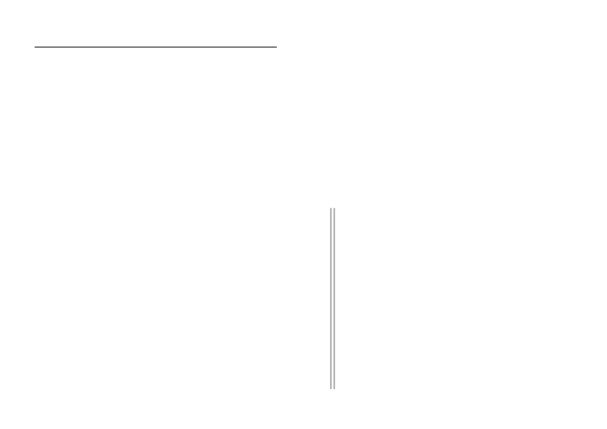
Tragédia em Odessa
49
48
Livro branco sobre violações dos direitos humanos
e o Estado de direito na Ucrânia
30 de maio de 2014
Representante da OSCE para a Liberdade dos Meios de Comunicação D. Mijatović
observou no seu comunicado de imprensa que a segurança dos jornalistas continua a ser
um dos principais problemas no leste da Ucrânia.
6 de junho de 2014
O canal de TV russo "Zvezda" noticiou o desaparecimento sob
Slavyansk dois jornalistas que estavam em viagem de negócios -
cinegrafista A. Sushenkov e engenheiro de som A. Malyshev. Mais tarde, descobriu-se que
eles foram detidos no posto de controle pelos combatentes da Guarda Nacional da Ucrânia.
De acordo com uma testemunha ocular, durante a prisão, os jornalistas foram colocados em sacos sobre suas cabeças
e obrigados a se ajoelhar, depois foram levados em direção desconhecida. Após
a sua libertação, os jornalistas disseram que durante dois dias
foram mantidos “praticamente sem água num quarto apertado e abafado, onde a temperatura
chegava a 50 graus” e que foram utilizadas medidas físicas contra eles
.
6 de junho de 2014
Deputado do Povo da Verkhovna Rada da Ucrânia O. Lyashko
provocou um incidente com a equipe de filmagem da All-Russian State Television and Radio Broadcasting Company no prédio do
parlamento ucraniano. No saguão, O. Lyashko abordou o jornalista russo
A. Balitsky e exigiu seus documentos. Tendo recebido o cartão de credenciamento
, o deputado tentou rasgá-lo. Depois disso, ele literalmente expulsou
a equipe de filmagem da Verkhovna Rada, dizendo que os jornalistas russos
"não têm o direito moral de entrar no parlamento ucraniano". O incidente
foi acompanhado por grosseiros insultos públicos de O. Lyashko
contra jornalistas russos.
17 de junho de 2014
outra terrível tragédia ocorreu perto de Lugansk.
Como resultado de um ataque de morteiro pelas forças de segurança ucranianas em um local onde
não havia instalações militares, os correspondentes do
VGTRK I. Kornelyuk e A. Voloshin foram mortos.
30 de junho de 2014
em Donetsk, nas mãos das forças de segurança de Kiev, o operador do "Per-
canal” Anatoly Klyan. No mesmo local, próximo à unidade militar
, um carro com jornalistas do canal Life News foi baleado por armas de pequeno porte, que,
por sorte, conseguiram escapar. Desconhecidos também abriram fogo
contra as equipes de filmagem dos canais de TV Mir 24 e REN.
Tragédia em Odessa
Declaração Universal dos Direitos Humanos (10 de dezembro de 1948)
Artigo 3
Toda pessoa tem direito à vida, à liberdade e à
imunidade.
Artigo 5
Ninguém será submetido a torturas ou torturas cruéis, desumanas
tratamento ou castigo eterno ou degradante.
Artigo 7
Todas as pessoas são iguais perante a lei e têm direito, sem qualquer
diferença, a igual proteção da lei. Todos os seres humanos têm direito a igual proteção
contra qualquer discriminação que viole esta Declaração
e contra qualquer incitamento a tal discriminação.
Artigo 19
Toda pessoa tem direito à liberdade de opinião e de
sua livre expressão; esse direito inclui a liberdade de
, sem interferência, ter opiniões e de buscar, receber e difundir
informações e ideias por qualquer meio e independentemente de
fronteiras.
Artigo 21
O direito à reunião pacífica é reconhecido. Usando isso
A lei não estará sujeita a outras restrições além daquelas impostas
de acordo com a lei e que sejam necessárias em uma
sociedade democrática no interesse da
segurança nacional ou pública, da ordem pública, da proteção da saúde ou da moral públicas
ou da proteção do direitos e liberdades dos outros.
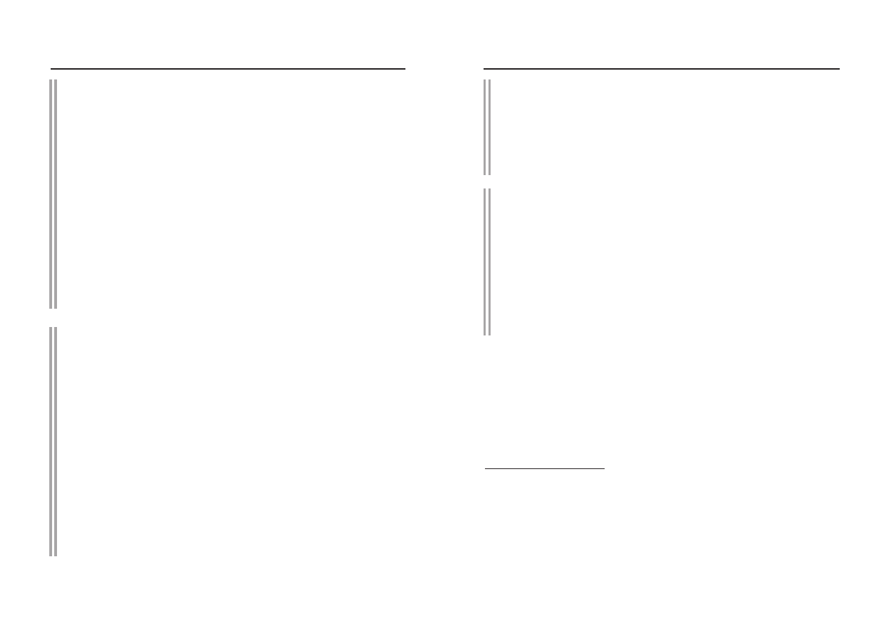
Tragédia em Odessa
51
cinquenta
Livro branco sobre violações dos direitos humanos
e o Estado de direito na Ucrânia
Pacto Internacional sobre Direitos Civis
e Políticos (16 de dezembro de 1966)
Artigo 6
O direito à vida é o direito inalienável de todo ser humano.
Este direito é protegido por lei. Ninguém pode ser arbitrariamente privado
da vida.
Artigo 7
Ninguém será submetido a tortura ou crueldade,
tratamento ou castigo humano ou degradante
.
Artigo 20
Toda propaganda de guerra deve ser proibida por lei.
Artigo 19
Todos têm direito à livre expressão
sua opinião; este direito inclui a liberdade de procurar, receber e difundir
informações e ideias de todo o tipo, independentemente de
fronteiras, verbalmente, por escrito ou em
forma impressa ou artística, ou por qualquer outro meio à sua
escolha.
Artigo 26.
Todas as pessoas são iguais perante a lei e têm o direito sem qualquer
discriminação à igual proteção da lei.
Convenção para a Proteção dos Direitos Humanos
e Liberdades Fundamentais (Roma, 4 de novembro de 1950)
Artigo 2
O direito de cada pessoa à vida é protegido por lei. Nenhum
pode ser intencionalmente privado da vida, exceto em execução de uma
sentença de morte proferida por um tribunal por um delito para
o qual a lei preveja tal punição.
Artigo 3
. Ninguém será submetido a tortura ou desumano
ou tratamento ou punição degradante.
Artigo 10
Todos têm o direito de expressar livremente sua opinião. este
o direito inclui a liberdade de opinião e a liberdade de receber
e difundir informações e ideias sem qualquer interferência
das autoridades públicas e independentemente de
fronteiras.
Artigo 11
. Liberdade de reunião e associação
1. Toda pessoa tem direito à liberdade de reunião pacífica e à liberdade de associação
com outras pessoas, inclusive o direito de constituir
e filiar-se a sindicatos para a proteção de seus interesses.
2. O exercício desses direitos não estará sujeito a outras restrições além das previstas em lei e necessárias em uma sociedade
democrática , no interesse da segurança nacional ou da ordem pública, para a prevenção da desordem ou do crime, para a proteção da saúde ou moral, ou para a proteção dos direitos e liberdades de outros . Este artigo não impede a imposição de restrições legais ao exercício desses direitos por pessoas que fazem parte das forças armadas, da polícia ou dos órgãos administrativos do Estado.
Convenção-Quadro para a Proteção das Minorias Nacionais
(Estrasburgo, 1º de fevereiro de 1995)
Artigo 9
As Partes comprometem-se a reconhecer que o direito de qualquer pessoa
pertencer a uma minoria nacional à liberdade de expressão
inclui a liberdade de opinião
e a liberdade de receber e trocar informações ou ideias na língua da
minoria sem interferência da autoridade pública
e independentemente de fronteiras. Dentro de seus ordenamentos jurídicos, as Partes
devem assegurar que as pessoas pertencentes a minorias nacionais
não sejam submetidas a discriminação no que diz respeito ao acesso aos
meios de comunicação.
2 de maio de 2014
em Odessa houve um massacre de militantes ucranianos
grupos ultranacionalistas e neonazistas que apoiam a federalização
da Ucrânia.
No meio do dia, mais de mil “ultras” de futebol, militantes armados do “Setor Direito” e da “autodefesa do Maidan ” trazidos antecipadamente para Odessa
, marcharam pelo centro da cidade sob o lema “Pela Unidade
da Ucrânia"
1
. Seus participantes também entoaram os slogans "Morte aos inimigos"

Tragédia em Odessa
53
52
Livro branco sobre violações dos direitos humanos
e o Estado de direito na Ucrânia
e "Moskals em facas". Durante esta procissão, brigas e escaramuças eclodiram
com provocadores desconhecidos, cuja marca registrada eram
bandagens vermelhas nas mangas. Os primeiros mortos e feridos apareceram.
Às 19h, os extremistas chegaram à Praça Kulikovo Pole, onde destruíram
e incendiaram o acampamento dos oponentes do Euromaidan
que estavam se reunindo.
assinaturas para a realização de um referendo sobre federalização
ção da Ucrânia e dando à língua russa o estatuto de língua estatal. Durante o
confronto, os agressores usaram coquetéis molotov,
pedaços de lajes e tiros foram ouvidos. Sob a pressão da multidão armada, os partidários da federalização
tentaram se esconder na
Casa dos Sindicatos, localizada na praça, que logo foi bloqueada e incendiada por
nacionalistas ucranianos.
Primeiro, incendiaram as portas centrais e depois o corredor do primeiro andar. O fogo
alastrou-se a vários pisos, o que foi facilitado pela demora
na extinção do fogo por parte dos bombeiros que chegaram ao local. De acordo
com V. Bodelan, chefe do departamento principal do Serviço de Emergência do Estado da Ucrânia na região de Odessa
, os bombeiros chegaram à praça a tempo, mas uma multidão de pessoas perto da Casa dos
Sindicatos não deixou seus carros irem para o local. prédio em chamas.
Parte dos ativistas do Euromaidan impediram a extinção do incêndio na Casa
dos Sindicatos. Impediram que os partidários da federalização saíssem do prédio,
atirando em suas janelas e saídas de incêndio, obrigando
as pessoas presas a pular pelas janelas. Muitos foram esmagados até a morte. Aqueles que
conseguiram sair foram severamente espancados pelos nacionalistas brutais aos
gritos de “Glória à Ucrânia” e ao canto do hino nacional ucraniano. Os “anti-Maidanitas” queimados
e espancados foram imediatamente presos “por incendiar
o prédio” por policiais que anteriormente haviam se afastado.
No total, em 2 de maio, segundo dados oficiais, morreram 46 pessoas (das quais 8 eram mulheres).
A mais velha das vítimas tinha 70 anos, a mais nova tinha 17. A maioria foi
queimada viva ou sufocada por envenenamento por gás. 247 vítimas recorreram aos hospitais da cidade
, 99 delas foram hospitalizadas
. Além disso, em 5 de maio, 48 pessoas foram dadas como
desaparecidas.
Enquanto isso, o deputado do Povo da Ucrânia, líder do movimento do Sudeste
O. Tsarev e vários outros políticos ucranianos disseram que as autoridades
subestimaram deliberadamente o número de vítimas, temendo agitação popular. Citando
policiais anônimos e especialistas forenses, a
mídia local informou que o número de mortos variou de 72 a 116 pessoas.
Entre os mortos estão um deputado do conselho regional local do Partido das Regiões
V. Markin (morreu no hospital por espancamentos infligidos por militantes do Setor Direita
) e o poeta de Odessa V. Negaturov (morreu nos cuidados intensivos por ferimentos sofridos
no Casa dos Sindicatos).
2 de maio de 2014
O Ministério das Relações Exteriores da Rússia emitiu uma condenação da tragédia
dii, observando que esta é “mais uma manifestação da irresponsabilidade criminosa
das autoridades de Kiev, cedendo insolentes radicais nacionais, incluindo
o Setor Direita, que estão organizando uma campanha de terror físico
contra os partidários da federalização e mudanças constitucionais reais
na sociedade ucraniana”.
3 de maio de 2014
Presidente da Federação Russa V.V. Putin expressou sua
os familiares dos mortos em Odessa e afirmou estar profundamente indignado
com as ações das autoridades ucranianas, que podem ser qualificadas como
criminosas.
3 de maio de 2014
Secretário-geral da ONU, Ban Ki-moon, pediu urgência
conduzir uma investigação completa sobre as circunstâncias do incidente de 2 de maio
em Odessa.
3 de maio de 2014
trágicos acontecimentos em Odessa foram recebidos com entusiasmo
Estamos entre os nacionalistas ucranianos, que em seus sites
chamaram o incidente de “triunfo do espírito ucraniano”, e
cinicamente chamaram os queimados vivos na Casa dos Sindicatos de “colorados” e “kebabs”.
Assim, comentando sobre o assassinato em massa de opositores do governo de Kiev por ativistas Euromaidan ,
I. Farion, deputado da Verkhovna Rada da Ucrânia de Svoboda, disse: “Bravo, Odessa! Pérola do Espírito Ucraniano. Pátria
dos grandes nacionalistas Ivan e Yuriy Lipa. Deixe os demônios queimarem no inferno. Os melhores
rebeldes são os fãs de futebol. Bravo!"
Membro da Verkhovna Rada da Ucrânia de Batkivshchyna, candidato a prefeito de Kiev
L. Orobets, comentou os eventos em Odessa em sua página no Facebook
da seguinte forma: “Este dia ficou na história. Odessans,
apesar da traição de pelo menos parte da polícia, defendeu Odessa e
provou a todos que Odessa é a Ucrânia.
Uma vitória notável foi alcançada à custa da vida dos patriotas . As agregações do Colorado foram liquidadas. Os agressores que
atacaram primeiro receberam uma resposta mais do que adequada.”
O candidato à presidência da Ucrânia, o líder do Batkivshchyna,
Y. Tymoshenko, que chegou a Odessa, chamou a queima de pessoas em Odessa a proteção de
prédios administrativos e o ataque de radicais nacionais ao campo de apoiadores da federalização
- uma manifestação pacífica.

Tragédia em Odessa
55
54
Livro branco sobre violações dos direitos humanos
e o Estado de direito na Ucrânia
O chefe da Administração Estatal Regional de Odessa, V. Nemirovskiy
, afirmou em sua página no Facebook que “as ações dos moradores de Odessa
destinadas a neutralizar e deter terroristas armados
são consideradas legais”.
3 de maio de 2014
O Ministério de Assuntos Internos da Ucrânia declarou que o
A causa do incêndio na Casa dos Sindicatos foram “coquetéis molotov” lançados
de cima, ou seja, bloqueado no prédio por “ativistas pró-Rússia”.
No entanto, esta declaração contradiz as imagens da cena da tragédia e
vários relatos de testemunhas oculares, que dizem que o fogo
começou depois que coquetéis
molotov foram jogados da rua no prédio. As pessoas dentro do prédio ficaram presas quando os
atacantes incendiaram as portas da frente.
No mesmo dia, o Ministério das Relações Exteriores da Ucrânia, em sua declaração, apressou-se a atribuir
a responsabilidade pelo que aconteceu em Odessa aos serviços especiais russos.
Na mesma linha, a atuação falou. Chefe de Administração do Presidente da Ucrânia
S. Pashinsky.
O Ministério das Relações Exteriores da Rússia chamou essa versão de “absurdo, total mentira e cinismo
”, exigindo
Kiev publicará dados sobre se há russos entre
vítimas do incêndio em Odessa, caso contrário, tais declarações devem ser
consideradas como mais uma tentativa infundada de convencer o público
de algum tipo de “rastro russo” e um desejo de exonerar as autoridades de Kiev de toda a responsabilidade
pelo que está acontecendo na Ucrânia.
Depois disso, o SBU afirmou que os distúrbios em Odessa foram financiados pelo ex-vice
-primeiro-ministro da Ucrânia S. Arbuzov e o ex-ministro da Receita e Deveres da Ucrânia
A. Klymenko. Por sua vez, S. Arbuzov e A. Klimenko, em entrevista à
mídia russa, negaram categoricamente seu envolvimento nos eventos em Odessa.
3 de maio de 2014
Primeiro Vice-Primeiro-Ministro - Ministro da Ucrânia V. Yarema disse
que as pessoas na Casa dos Sindicatos “morreram de repente, muito rapidamente” devido à “queima de
uma certa substância que emitia gás”. Mais tarde, esta versão foi repetida
pelo chefe do departamento regional de Odessa do Serviço de Emergência do Estado da Ucrânia, V. Bodelan,
que disse a repórteres que a maioria dos que morreram na Casa dos Sindicatos
morreram de envenenamento com alguma substância desconhecida.
3 de maio de 2014
depois de alguma deliberação, o autoproclamado Kiev
As autoridades ucranianas declararam dois dias de luto pela morte de pessoas
em Odessa.
4 de maio de 2014
em Odessa, mais de mil cidadãos bloquearam a construção da cidade
departamento do Ministério da Administração Interna, exigindo a libertação de apoiantes detidos em 2 de maio
federalização. Os participantes do piquete disseram a jornalistas que
mais de 60 ativistas do polo de Kulikovo foram mantidos nas
celas
da polícia da cidade
. Entre elas, 11 mulheres, algumas feridas e queimadas, que
necessitam de assistência médica. Os manifestantes também exigiram a renúncia
do governador da região de Odessa, V. Nemirovsky, que foi chamado de “
assassino”, acusando-o de mortes de pessoas queimadas até a morte na Casa dos Sindicatos.
Depois que os manifestantes tentaram tomar o prédio, a polícia começou a
libertar os partidários do federalismo detidos.
67 pessoas foram libertadas da custódia . Ao mesmo tempo, 42 opositores das autoridades de Kiev, que foram
detidos em 2 de maio, foram anteriormente transferidos para um centro de detenção preventiva em uma das
regiões centrais da Ucrânia.
Na noite do mesmo dia, radicais do Setor Direita e representantes da
chamada autodefesa Maidan bloquearam a construção do
departamento de polícia regional em protesto contra a libertação dos
partidários da federalização.
4 de maio de 2014
durante sua visita a Odessa, o Supremo nomeado
Rada, o primeiro-ministro da Ucrânia, A. Yatsenyuk, atribuiu antecipadamente a responsabilidade
pelo que aconteceu aos “terroristas” e à polícia, instruindo a Procuradoria-Geral
a procurar o “rastro russo”.
No mesmo dia, a promotoria regional de Odessa abriu um processo criminal
contra policiais, responsabilizando-os pela morte de 46 pessoas
durante confrontos com radicais em 2 de maio.
4 de maio de 2014
Embaixador dos EUA na Ucrânia J. Pyatt em entrevista à CNN
afirmou que os Estados Unidos não têm provas do envolvimento da Rússia nos trágicos
acontecimentos em Odessa em 2 de maio.
5 de maio de 2014
membros da Missão de Observação Especial da OSCE,
que examinaram a Casa dos Sindicatos de Odessa, em seu relatório chegaram à conclusão de
que o fogo dentro do prédio se espalhou pelos corredores dos dois primeiros andares.
Segundo suas estimativas, três dias após a tragédia, “a situação na cidade
é avaliada como tensa”. O documento também afirma que a maioria das vítimas
foram identificadas e identificadas como residentes de Odessa e
regiões ucranianas vizinhas. Ao mesmo tempo, os observadores da OSCE não puderam
registrar de forma independente os eventos que levaram à morte de dezenas de pessoas no prédio da
Casa dos Sindicatos, porque devido à ameaça à sua própria segurança foram
forçados a deixar o local centro da cidade à tarde após a escalada da
situação.

Tragédia em Odessa
57
56
Livro branco sobre violações dos direitos humanos
e o Estado de direito na Ucrânia
6 de maio de 2014
O Ministério da Administração Interna da Ucrânia informou que os passaportes russos (detectados
que foram relatados anteriormente pela mídia ucraniana na Casa dos Sindicatos)
não foram encontrados no prédio queimado e entre aqueles que morreram em 2 de maio em Odessa.
6 de maio de 2014
decreto “agindo Presidente" da Ucrânia A. Turchynov do cargo
Presidente da Administração Estatal Regional de Odessa foi
liberado V. Nemirovsky. I. Palitsa foi nomeado para o seu lugar. No mesmo
dia, o novo governador da região de Odessa disse que a causa da tragédia
em Odessa em 2 de maio foi um fator interno.
6 de maio de 2014
,
falando em Viena durante a reunião do Comité de Ministros do Conselho
Europa, Ministro dos Negócios Estrangeiros da Federação Russa S.V. Lavrov observou
que os eventos de 2 de maio em Odessa foram uma manifestação franca do fascismo
, mas nenhum dos radicais nacionais que cometeram esse crime terrível
foi preso. Ele expressou temor de que a
investigação lançada pelas autoridades de Kiev pudesse ser "enrolada" - como aconteceu com atiradores
para matar na capital ucraniana em fevereiro de 2014.
6 de maio de 2014
Alto Comissariado das Nações Unidas para os Direitos Humanos N. Pillay
fez uma declaração na qual expressou sua profunda preocupação com a
violência desenfreada na Ucrânia, levando a um aumento do número de vítimas e destruição.
A tragédia em Odessa foi de particular preocupação para o alto comissário. Pillay pediu
às autoridades de Kiev que conduzam uma investigação rápida, mas completa, sobre os eventos
em Odessa e na região de Donetsk.
N. Pillay exigiu de Kiev que garantisse o cumprimento integral das
operações militares e policiais com os padrões internacionais, ressaltando que a polícia
deve proteger os manifestantes pacíficos, independentemente de suas
opiniões políticas. O principal, como enfatizou o alto comissário, é que as autoridades
demonstrem com seu próprio exemplo a plena observância do
Estado de direito e a estrita proteção dos direitos de toda a população do país,
especialmente seus residentes de língua russa.
N. Pillai condenou veementemente os ataques e a perseguição de jornalistas na
Ucrânia e exigiu que o direito à liberdade de expressão seja assegurado no país
. Ao mesmo tempo, ela pediu aos próprios jornalistas que sejam objetivos e não
incitem a hostilidade.
7 de maio de 2014
T. Ivanenko, morador de Odessa, que sobreviveu ao incêndio
na Casa dos Sindicatos da cidade em 2 de maio, em entrevista ao canal de televisão RT
, ela relatou que estava dentro do prédio e, junto com outros moradores de Odessa, trouxe
chapas de compensado para bloquear as portas da frente. Ela disse
que os militantes do Setor Direita e a chamada autodefesa do Maidan
veio de todas as direções. “Ninguém esperava tamanha crueldade e
não tínhamos para onde fugir”, lembra ela. Segundo ela, depois que as
barracas dos oponentes do Euromaidan na Praça Kulikovo Pole foram incendiadas, os
extremistas começaram a jogar coquetéis molotov na Casa dos Sindicatos. Além disso
, granadas de efeito moral foram lançadas. Ela não sabe dizer se estavam
com algum tipo de veneno, mas "era impossível respirar". Segundo ela, "os bombeiros
chegaram muito tarde, quando já havia muitas vítimas". “O quartel dos bombeiros
está localizado a 700 metros da Casa dos Sindicatos; dos dez carros de bombeiros que
estavam lá, apenas dois chegaram. Bloqueados no prédio, as pessoas
começaram a gritar das janelas para deixar as mulheres mais velhas descerem primeiro. eu durmo
Eu balancei o último, eu tinha uma fita de St. George amarrada no meu braço.
Não havia proteção da polícia, os bombeiros me entregaram a eles”,
disse T. Ivanenko, acrescentando que mais sete
ativistas estavam no telhado à noite e, quando foram removidos, “não prestaram nenhuma ajuda, eles acabou de me levar
para o centro de detenção". T. Ivanenko acredita que a culpa pela tragédia de 2 de maio é principalmente
“aqueles que permitiram isso: o atual governo, que está claramente trabalhando para dividir a
Ucrânia”.
7 de maio de 2014
Deputado da Verkhovna Rada da Ucrânia do "Batkivshchyna" A. Kuzhel
informou que o parlamento ucraniano pretende criar uma
comissão de investigação temporária para investigar a tragédia de 2 de maio em Odessa. A. Kuzhel
admitiu que as circunstâncias da morte de pessoas levantam muitas questões.
Em particular, ela se perguntou por que as vítimas tinham apenas
rostos queimados, e não também roupas de lã queimadas.
7 de maio de 2014
em Odessa por acusações de inatividade durante o distúrbio
Em 2 de maio, o vice-chefe do departamento regional do Ministério da Administração Interna
D. Fuchedzhi foi detido. Ele também foi responsabilizado pela libertação de
partidários da federalização que estavam detidos na Câmara dos Sindicatos. Mais tarde
, surgiram informações de que em 7 de maio D. Fuchedzhi foi forçado a deixar secretamente a
Ucrânia.
11 de maio de 2014
anunciou que o número de vítimas da tragédia de 2 de maio em Odessa atingiu
48 pessoas.
Mais duas pessoas morreram por ferimentos de bala em hospitais da cidade .
13 de maio de 2014
facção do Partido das Regiões na Verkhovna Rada da Ucrânia
queria criar uma comissão temporária de inquérito para investigar as mortes
de civis em Odessa, Mariupol e outras cidades.
14 de maio de 2014
em Odessa, o túmulo do falecido foi profanado
2 de maio fogo na Casa dos Sindicatos. As coroas fúnebres foram queimadas por vândalos,

Tragédia em Odessa
59
58
Livro branco sobre violações dos direitos humanos
e o Estado de direito na Ucrânia
a cruz da sepultura foi danificada pelo fogo e uma nota de
conteúdo ofensivo foi deixada.
15 de maio de 2014
o novo governador da região de Odessa I. Palitsa falou
com críticas ao "Setor Direito". Comentando os trágicos acontecimentos em Odessa
em 2 de maio, ele expressou a opinião de que os representantes dessa organização radical
não deveriam estar nas ruas da cidade. “Infelizmente, as pessoas morreram.
E, infelizmente, durante as grandes ações sempre aparecem alguns
grupos marginais que aparecem com objetivos diferentes. Quanto aos
radicais de hoje, eles não deveriam estar nas ruas da cidade. Esta é a minha atitude
em relação ao Setor Certo. Considero este grupo totalmente financiado antecipadamente por
algumas pessoas, com alguns objetivos específicos. Não havia
ideias - onde quer que aparecessem, apenas provocações eram vistas ”,
observou I. Palitsa em uma reunião com o grupo de iniciativa da organização pública
"Fórum da intelligentsia Odessa".
19 de maio de 2014
Chefe do Departamento Principal de Investigação do Ministério da Administração Interna da Ucrânia
V. Sakal disse em uma entrevista coletiva que os
investigadores encontraram vestígios de clorofórmio na Casa dos Sindicatos em Odessa.
19 de maio de 2014
Ministro das Relações Exteriores da Federação Russa S.V. Amar-
Rov enviou cartas aos secretários-gerais da ONU, da OSCE, do Conselho da Europa,
do presidente em exercício da OSCE e do Alto Comissariado da ONU para os Direitos
Humanos, pedindo uma
investigação aberta, justa e imparcial sobre os trágicos acontecimentos que lugar em Odessa sob
controle internacional. O lado russo também se ofereceu
para envolver a OPAQ na investigação dos eventos em Odessa, já que as substâncias usadas
no ataque à Casa dos Sindicatos podem equivaler a
armas químicas.
20 de maio de 2014
Membro do Parlamento Europeu da Letônia T. Zhdanok
pediu que o movimento radical ucraniano “Setor Direito” seja
responsabilizado pelo uso de armas químicas durante os trágicos eventos
em Odessa em 2 de maio.
21 de maio de 2014
recém-nomeado chefe da Direcção Principal do Ministério da Administração Interna
Ucrânia na região de Odessa, I. Katerynchuk acusou
os policiais de falta de profissionalismo. Segundo ele, "todos sabiam que
os desordeiros tinham armas e coquetéis molotov". “Se eles fossem confiscados,
não haveria tais vítimas”, disse ele. O chefe da polícia de Odessa
também relatou a detenção de meninas que preparavam coquetéis
molotov para os militantes, observando que receberam dinheiro por isso.
22 de maio de 2014
em entrevista ao canal NTV, o ex-vice-chefe
Departamento do Ministério de Assuntos Internos na região de Odessa D. Fuchedzhi disse que os eventos em Odessa
em 2 de maio foram uma provocação das autoridades de Kiev. Segundo ele, três dias
antes, o governador da região de Odessa, V. Nemirovskiy, foi convocado para a
administração “atuando . Presidente" da Ucrânia, onde recebeu valiosas instruções. Depois
disso, o secretário do Conselho Nacional de Segurança e Defesa da Ucrânia A. Parubiy chegou a Odessa. Desde meados de abril,
os caças Euromaidan começaram a chegar à cidade. De acordo com D. Fuchedzhi,
a polícia não foi capaz de tomar medidas oportunas para evitar o incidente
, uma vez que todas as autoridades do Ministério da Administração Interna da cidade foram
convocadas para uma reunião antes do pogrom. “Acredito que a reunião foi realizada no contexto da
provocação que ocorreu”, disse.
5 de junho de 2014
Presidente do Conselho Europeu H. Rompuy na imprensa
conferência sobre os resultados da cúpula do G-7 que terminou em Bruxelas,
disse que o G-7 exigiu "uma investigação independente sobre
os graves incidentes na Ucrânia, incluindo a tragédia em Odessa".
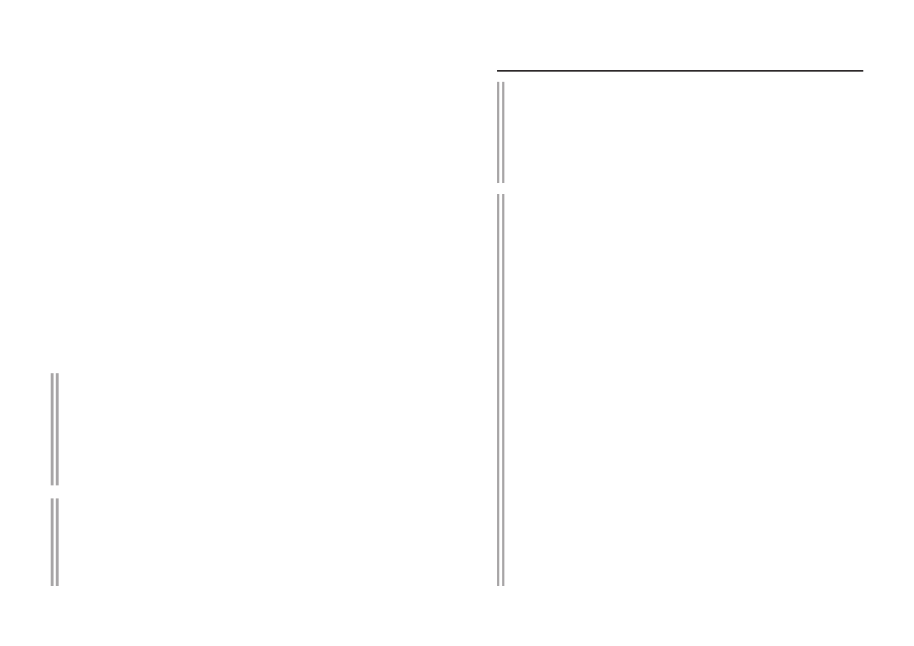
"
O caso dos franco-atiradores": imitação da investigação, violações da presunção
inocência e o direito a um julgamento justo
61
60
Livro branco sobre violações dos direitos humanos
e o Estado de direito na Ucrânia
"O Caso dos Snipers":
investigação de imitação,
violação da presunção de inocência
e o direito a um julgamento justo
procedimentos
Declaração Universal dos Direitos Humanos (10 de dezembro de 1948)
Artigo 7
Todas as pessoas são iguais perante a lei e têm direito, sem qualquer
diferenças, a igual proteção da lei.
Artigo 11
. Cada pessoa acusada de um crime
terá o direito de ser presumido inocente até que sua culpa tenha
sido estabelecida por lei em um julgamento público
no qual ele tenha todas as oportunidades de
se defender.
Convenção para a Proteção dos Direitos Humanos
e Liberdades Fundamentais (Roma, 4 de novembro de 1950)
Artigo 2
O direito de cada pessoa à vida é protegido por lei. Nenhum
pode ser intencionalmente privado da vida, exceto em execução de uma
sentença de morte proferida por um tribunal por um delito para
o qual a lei preveja tal punição.
Artigo 6
.
1. Toda pessoa, em caso de controvérsia sobre seus direitos e obrigações civis ou
qualquer acusação criminal contra ela, terá direito a uma
audiência justa e pública, dentro de um prazo razoável, por um
tribunal independente e imparcial estabelecido por lei.
2. Qualquer pessoa acusada de um crime
é presumida inocente até que a
lei prove a sua culpa.
Pacto Internacional sobre Direitos Civis
e Políticos (16 de dezembro de 1966)
Artigo 6
O direito à vida é o direito inalienável de todo ser humano.
Este direito é protegido por lei. Ninguém pode ser arbitrariamente privado
da vida.
Artigo 9
1. Toda pessoa tem direito à liberdade e segurança pessoal
. Ninguém pode ser sujeito a prisão ou
detenção arbitrária. Ninguém será privado de liberdade
, exceto por motivos e de acordo com o procedimento
estabelecido por lei.
2. Qualquer pessoa detida deve ser informada no momento da detenção das razões da sua detenção
e deve ser prontamente informada de qualquer acusação contra ela.
3. Todas as pessoas presas ou detidas em virtude de infração penal
devem ser levadas imediatamente à presença de um juiz ou outro funcionário
autorizado por lei a exercer funções judiciárias
e têm direito a um julgamento dentro de um prazo razoável.
prazo ou liberação. A detenção de pessoas que aguardam
julgamento não deve ser a regra geral, mas a
libertação pode estar sujeita a garantias
de comparecimento a julgamento, comparecimento em qualquer outra fase do julgamento
e, se necessário, comparecimento à execução.
4. Toda pessoa privada de liberdade por prisão ou
detenção tem direito a que seu caso seja ouvido por um tribunal, para que
este decida sem demora sobre a
legalidade de sua detenção e ordene sua soltura se
a detenção for ilegal .
5. Qualquer pessoa que tenha sido vítima de prisão ou detenção ilegal
tutores, tem direito a uma indemnização executória.
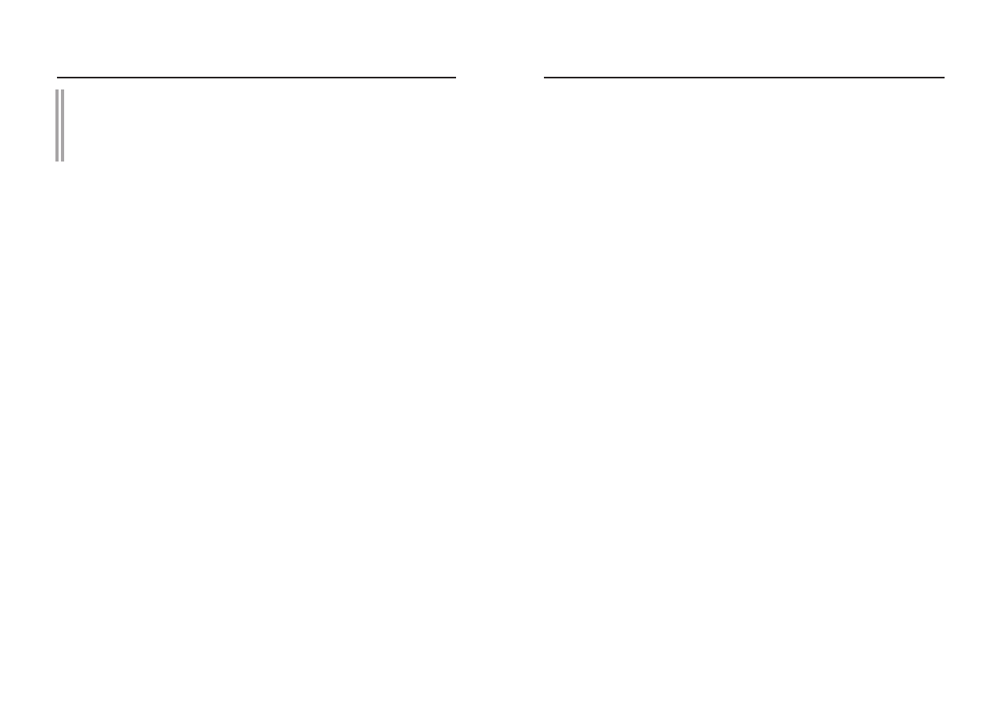
"
O caso dos franco-atiradores": imitação da investigação, violações da presunção
inocência e o direito a um julgamento justo
63
62
Livro branco sobre violações dos direitos humanos
e o Estado de direito na Ucrânia
Artigo 14
2. Qualquer pessoa acusada de um crime tem direito à
presunção de inocência até que se prove a sua culpa nos termos da lei.
Artigo 26.
Todas as pessoas são iguais perante a lei e têm o direito sem qualquer
discriminação à igual proteção da lei.
2 de abril de 2014
destituído do poder por causa do Estado
º golpe, o presidente da Ucrânia V. Yanukovych deu uma entrevista à
mídia russa e estrangeira, durante a qual, referindo-se aos eventos de fevereiro em Kiev
no chamado caso do atirador, ele alegou que não havia dado a ordem para
dispersar os manifestantes e que “o tiroteio foi realizado naqueles prédios que na época eram
controlados pela oposição”.
Anteriormente, uma gravação de uma
conversa telefônica entre o Ministro dos Negócios Estrangeiros da Estônia U. Paet
e o Alto Representante da UE para Relações Exteriores e Política de Segurança
K. Ashton, datada de 26 de fevereiro de 2014, apareceu na Internet após a visita de o Ministro dos Negócios Estrangeiros da Estónia à Ucrânia. Durante a conversa,
U. Paet referiu-se à informação recebida do médico chefe do “Maidan” O. Bogomolets
sobre franco-atiradores disparando contra pessoas durante os protestos de fevereiro
em Kiev. Segundo ele, todas as evidências apontam para o fato de que tanto manifestantes
quanto policiais foram mortos pelos mesmos atiradores.
Ele disse que a nova coalizão não estava disposta a investigar as circunstâncias exatas do
que aconteceu e que havia uma crescente conscientização entre as pessoas que
que por trás desses atiradores não estava V. Yanukovych, mas alguém da nova coalizão.
Esta versão foi posteriormente confirmada pelo ex-chefe da SBU A. Yakimenko: em sua entrevista
ao canal de TV Rossiya 1, em 12 de março de 2014, ele afirmou que as execuções de ambos
os lados opostos (funcionários de Berkut e civis da oposição
) em 20 de fevereiro de 2014, atiradores desconhecidos foram disparados do
prédio da Filarmônica, que estava sob o controle total das forças da oposição e,
em particular, do chamado comandante de Maidan A. Parubiy, que, após
os eventos de 21 a 22 de fevereiro , 2014, foi nomeado secretário do NSDC. A. Yakimenko
observou que A. Parubiy tinha todos os poderes para acessar armas
ao Maidan, e nem uma única pistola, e ainda mais um rifle sniper, poderia
ser trazida ou retirada da praça sem seu conhecimento. Quando começar-
De acordo com A. Yakymenko, o líder do
Setor Direito D. Yarosh e o líder do Svoboda O. Tyagnibok recorreram a ele com um pedido para usar
o grupo Alfa do Centro de Operações Especiais da SBU para limpar edifícios de franco-
atiradores. No entanto, para isso, foi necessário obter o consentimento
do “comandante do Maidan” A. Parubiy, caso contrário, os representantes do Maidan, segundo
segundo ele, eles começariam a atirar nas costas dos funcionários da Alpha. A. Yakimenko
solicitou o consentimento de A. Parubiy para limpar os prédios de atiradores desconhecidos,
mas Parubiy impediu categoricamente isso.
De acordo com o comunicado do ex-chefe da SBU, franco-
atiradores que trabalhavam em 20 de fevereiro no prédio da Filarmônica apoiaram um ataque contundente aos funcionários do Ministério da Administração Interna,
“que já estavam desmoralizados e, de fato, já estavam fugindo em pânico,
pois foram espancados como em um campo de tiro”. Eles foram perseguidos por homens armados. Nesse
momento, começou o fogo contra as pessoas que agrediram os funcionários do Ministério da Administração Interna,
e começaram a perder. E tudo isso aconteceu do prédio da Filarmônica...
Quando a primeira onda de tiroteios terminou, muitas pessoas registraram 20 pessoas especialmente vestidas saindo
deste prédio: eles tinham bolsas para carregar
rifles de precisão, rifles de assalto AKM com mira óptica. De acordo
com A. Yakymenko, isso foi visto não apenas pelos agentes da SBU, mas
e representantes do Maidan - representantes de "Svoboda", "Setor Direito",
"Pátria", "Strike".
Os franco-atiradores que atiravam nas pessoas eram divididos em
dois grupos de 10 pessoas. A SBU perdeu de vista um deles. Outro assumiu
posições no hotel "Ucrânia". As matanças continuaram.
A. Yakymenko também afirmou que, de acordo com a inteligência, esses franco-atiradores podem ser
estrangeiros, incluindo mercenários da ex-Iugoslávia ou de outros
países, e ex-membros das forças especiais do Ministério da Defesa da Ucrânia.
Além disso, ele chamou os acontecimentos na Ucrânia de resultado da implementação acelerada
por forças externas (especialmente dos Estados Unidos) do cenário que planejavam representar
durante as eleições presidenciais de 2015. A. Yakimenko observou
que A. Parubiy, V. Nalyvaychenko e outros líderes do Euromaidan estão intimamente
ligados aos serviços especiais americanos.
3 de abril de 2014
O Gabinete do Procurador-Geral da Ucrânia anunciou a detenção
12 ex-combatentes do Berkut suspeitos de atirar em Kiev nos dias
18 e 20 de fevereiro.
No mesmo dia, atuando Procurador-Geral da Ucrânia O. Makhnitsky, em exercício Ministro de
Assuntos Internos da Ucrânia A. Avakov, chefe do SBU V. Nalyvaychenko em uma conferência de
imprensa conjunta afirmou que em 18-20 de fevereiro em Kiev, ativistas Euromaidan
foram baleados por atiradores do grupo Alpha do
Centro de Operações Especiais SBU e da polícia unidades de propósito especial "Berkut" por
ordem do presidente V. Yanukovych. Ao mesmo tempo, jornalistas e especialistas chamaram
a atenção para as inúmeras inconsistências e contradições nos
fatos citados pelas forças de segurança ucranianas, bem como para a precariedade geral da “
base de evidências” das acusações feitas por eles.

"
O caso dos franco-atiradores": imitação da investigação, violações da presunção
inocência e o direito a um julgamento justo
65
64
Livro branco sobre violações dos direitos humanos
e o Estado de direito na Ucrânia
3 de abril de 2014
O Gabinete do Procurador-Geral da Ucrânia emitiu mandados de
detenção e entrega ao tribunal do ex-chefe da SBU A. Yakimenko. A expedição de um mandado de
prisão contra ele na Procuradoria-Geral da República foi motivada por acusações de organização da
chamada operação antiterrorista.
4 de abril de 2014
ex-chefe do Ministério de Assuntos Internos da Ucrânia V. Zakharchenko em entrevista ao russo-
mu “Channel One” observou que os policiais não eram culpados de
execuções em massa no Maidan. Em sua opinião, tanto os
funcionários "Euromaidan" quanto "Berkut" sofreram com o tiroteio, realizado a partir do prédio, que estava
sob o controle do chamado comandante Maidan A. Parubiy. Segundo
V. Zakharchenko, A. Parubiy também controlava outros edifícios no centro da cidade,
nos quais, entre outras coisas, foram equipadas câmaras de tortura.
6 de abril de 2014
O Canal Um mostra um relatório no qual o colaborador
Apelidos de Berkut, localizado em Kiev, fizeram uma pergunta ao cinegrafista:
“Por que as árvores foram cortadas na rua Institutskaya, que foram atingidas
por balas de atiradores?”
9 de abril de 2014
publicou uma declaração do general do exército georgiano T.
Lashvili, no qual afirmou que quatro franco-
atiradores georgianos estavam trabalhando em Kiev, que estavam lá por instruções do ex-presidente da Geórgia
M. Saakashvili, e eram liderados diretamente por Givi Targamadze e Gia
Baramidze.
10 de abril de 2014
Presidente da Comissão Interina de Inquérito
O Verkhovna Rada da Ucrânia, que está estudando as causas da morte de pessoas na
Praça da Independência em Kiev durante protestos em fevereiro de 2014, um
membro do parlamento G. Moskal, anunciou uma série de omissões por parte das
agências de aplicação da lei e do Gabinete do Procurador-Geral no investigação deste caso. Segundo ele,
“não foram realizados exames balísticos e outros necessários, não foram apreendidos
rifles de precisão que pudessem aparecer nos eventos de
fevereiro”. Ele enfatizou especificamente que “as
provas materiais nem foram coletadas, as balas estão em diferentes hospitais e ninguém
está realizando nenhum exame”.
Mais cedo, o chefe do serviço médico do Ministério de Assuntos Internos da Ucrânia, O. Petrash, em uma reunião da
comissão parlamentar de investigação temporária, também expressou a opinião de
que “nenhuma evidência material foi coletada até agora”,
e as balas que os médicos extraídos dos corpos dos mortos estão “ou no hospital
ou em parentes, ou simplesmente perdidos.
10 de abril de 2014
durante a reunião da comissão temporária de inquérito
Verkhovna Rada Vice-Chefe das Forças Especiais do Ministério da Administração Interna da Ucrânia
"Falcon" A. Ershov admitiu que em 20 de fevereiro
havia dois atiradores desta unidade especial no prédio do Gabinete de Ministros. Ao mesmo tempo, A. Ershov
enfatizou que eles não estavam no telhado do prédio e não estavam atirando nos
manifestantes. Segundo ele, não foi feito o exame balístico das
armas apreendidas dos atiradores, mas apenas uma verificação oficial.
15 de abril de 2014
em Kiev, perto do edifício do Tribunal de Recurso, radicais da “Pra-
cerca de 60 ex-combatentes da unidade “Berkut”
, que vieram apoiar seus colegas que estão sendo
processados por suspeita de “tiros em massa nos dias 18 e 20 de fevereiro”, foram bloqueados.
Radicais nacionais mascarados e com paus jogaram
ovos nas antigas forças especiais, exigiram que se ajoelhassem e "pedissem desculpas ao povo". O
conflito durou cerca de duas horas e só foi resolvido após a intervenção
do chefe de polícia de Kiev que chegou.
22 de abril de 2014
um grupo de hackers que se autodenominam "CyberBerkut" publicado
forjou em seu site a correspondência “hackeada” por eles. Ministro de Assuntos
Internos da Ucrânia A. Avakov com seu ex-secretário de imprensa, o
jornalista D. Brook. Decorre da correspondência que o assassinato em 25 de março de 2014 do coordenador
do Setor Direito na Ucrânia Ocidental A. Muzychko (Sashko Bily)
foi planejado por A. Avakov, e como compensação por sua morte
, o líder do Setor Direito D. Yarosh exigiu combatentes “Put” Berkut
(5-7 pessoas e necessariamente o comandante da companhia). Nesses termos, o Setor Direito
concordou em não se vingar de A. Avakov pela morte de seu camarada de armas.
13 de maio de 2014
comissão de investigação temporária da Verkhovna Rada, após
análise da munição usada pelos franco-atiradores, chegou à conclusão de que durante
os trágicos eventos de fevereiro em Kiev, não foram
os soldados das forças especiais de Berkut que atiraram contra os manifestantes. Segundo o chefe da comissão
, deputado G. Moskal, representantes
de “organizações públicas” que saíssem do controle poderiam atirar nos manifestantes. Sem especificar
de quais organizações se referia, G. Moskal enfatizou que naquela época
"o primeiro tiro foi disparado contra os policiais". Ao mesmo tempo, o deputado
observou que a investigação sobre o caso do tiroteio pode nunca ser
concluída e comparou-a com o "caso Kennedy".
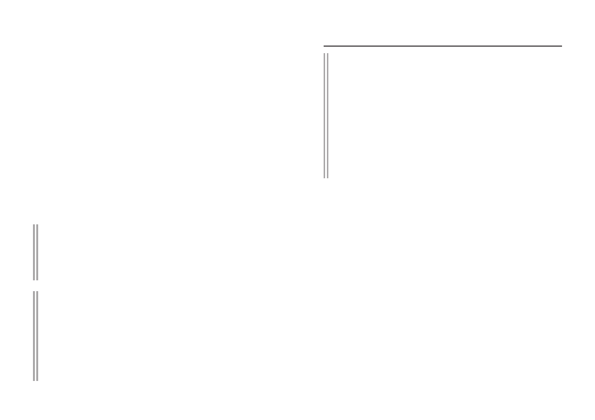
Discriminação étnica e linguística, xenofobia
e nacionalismo agressivo. Incitação ao racismo
67
66
Livro branco sobre violações dos direitos humanos
e o Estado de direito na Ucrânia
Discriminação
por etnia e idioma,
xenofobia e nacionalismo agressivo.
Incitação ao racismo
Pacto Internacional sobre Direitos Civis
e Políticos (16 de dezembro de 1966)
Artigo 20
. Qualquer defesa de uma nacionalidade, raça ou
ódio religioso que constitua incitamento
à discriminação, hostilidade ou violência deve ser proibido por lei
.
Convenção Internacional sobre a Eliminação de
Todas as Formas de Discriminação Racial (21 de dezembro de 1965)
Artigo 4
Os Estados participantes condenam toda propaganda e toda
organizações baseadas em ideias ou teorias da superioridade de uma
raça ou grupo de pessoas de uma determinada cor ou origem étnica
, ou que tentam justificar ou encorajar o
ódio e a discriminação racial de qualquer forma, e se comprometem
a tomar medidas imediatas e positivas visando a erradicação
de qualquer incitamento a tal discriminação ou atos de
discriminação, e
(a) Tornar crime punível por lei qualquer disseminação
de ideias baseadas em superioridade ou ódio racial, qualquer
incitação à discriminação racial e todos os atos de violência
ou incitação a tais atos dirigidos contra qualquer raça
ou grupo de pessoas de cor ou cor diferente . origem étnica,
bem como a prestação de qualquer assistência para a realização de
atividades racistas, incluindo o seu financiamento;
(b) Declarar ilegais e proibir organizações e
atividades organizadas e de propaganda que
promovam e incitem a discriminação racial, e tornar
crime participar de tais organizações ou atividades;
comer punido por lei;
(c) Impedir que governos nacionais ou locais ou instituições públicas promovam ou incitem
a discriminação racial .
1º de abril de 2014
Professor de filologia russa de Kharkiv de 77 anos
Universidade Nacional, Doutor em Filologia A. Mikhilev foi
forçado a deixar o emprego sob pressão da direção da universidade.
Ele foi forçado a dar palestras e escrever artigos científicos sobre a língua russa
e filologia exclusivamente em ucraniano.
2 de abril de 2014
em várias regiões da Ucrânia, especialmente no oeste do país,
um movimento para boicotar os produtos dos fabricantes russos está se desenrolando
. Ativistas pedem para não comprar roupas em lojas russas e não
comer em restaurantes de propriedade de russos. Supermercados
colocam adesivos: “Boicote aos ocupantes! Proteja a Ucrânia – compre
ucraniano.” O cinema de Kiev "Magnat" recusou-se a exibir
filmes russos. Surgiu um aplicativo gratuito para telefones chamado “Boicote aos
ocupantes!”, com o qual você pode escanear um código de barras e descobrir
onde o produto foi produzido.
2 de abril de 2014
O SBU deteve dois cidadãos na região de Lviv
entregue à Rússia, que alegadamente pretendia fazer reféns vários
cidadãos da Ucrânia, um dos quais é candidato a Presidente da Ucrânia.
3 de abril de 2014
na região de Sumy gestão de mercearias
Veselka decidiu indicar em todas as etiquetas de preço com produtos russos
que eles foram produzidos na Rússia. Assim, os compradores são
oferecidos para decidir se compram mercadorias da Rússia e, assim, apoiam
o “agressor” ou ignoram os produtores russos.

Discriminação étnica e linguística, xenofobia
e nacionalismo agressivo. Incitação ao racismo
69
68
Livro branco sobre violações dos direitos humanos
e o Estado de direito na Ucrânia
3 de abril de 2014
Ministro dos Negócios Estrangeiros da Transnístria N. Shtanski, com-
Comentando a situação atual na fronteira Pridnestroviana-Ucrânia,
ela afirmou que as restrições impostas pela Ucrânia aos
cidadãos russos que vivem em Pridnestrovie são “não apenas um bloqueio, mas também
discriminação por certos motivos, incluindo nacionalidade
e cidadania”. Segundo ela, “as pessoas são retiradas dos trens,
dos ônibus, inclusive à noite, as pessoas são tratadas com
desrespeito”.
4 de abril de 2014
A Inspeção Estatal do Consumidor da Ucrânia proibiu lojas locais
zine para vender produtos de alguns fabricantes russos. A "
lista negra" incluía os produtos das fábricas de confeitaria "Outubro Vermelho",
"RotFront", "Chocolate Russo" e a preocupação "Babaevsky". A proibição
também afetou queijos e conservas de peixe.
O. Tyahnybok, líder da facção Svoboda na Verkhovna Rada da Ucrânia, iniciou a inspeção de mercadorias russas
.
Ao mesmo tempo, não houve reclamações do Serviço Veterinário e Fitossanitário do Estado da Ucrânia sobre a qualidade dos produtos .
9 de abril de 2014
em Odessa, desconhecido profanou um monumento às vítimas
Holocausto. Uma suástica é pintada no monumento em tinta branca, assim como o
símbolo neonazista “gancho de lobo”.
Dezenas de lápides judaicas no cemitério de Tairov também foram profanadas :
uma suástica foi pintada nelas com tinta preta. Na cerca do cemitério há inscrições: “Morte aos
judeus”, “Setor Direito” e “Glória à Ucrânia”.
9 de abril de 2014
O SBU anunciou a detenção de um cidadão russo de 23 anos
enterradas M. Koleda. Segundo o serviço de inteligência ucraniano, ela supostamente “
desestabilizou a situação na região por instruções do FSB da Rússia” e
participou do ataque à administração regional em Nikolaev, durante o qual
feriu três pessoas.
Na noite de
13 a 14 de abril de 2014
em Chernihiv, um grupo de desconhecidos jogou
apedreja a porta das instalações do Consulado Honorário da Federação Russa.
Uma placa com o nome da instituição foi derrubada e roubada,
panfletos com conteúdo ofensivo foram colados. A propriedade do consulado foi
danificada.
15 de abril de 2014
foi relatado que desde o início das medidas para fortalecer a
cerca de 12.000 cidadãos da Federação
Russa não passaram pelo controle pessoal para a Ucrânia.
17 de abril de 2014
O Serviço de Fronteiras do Estado da Ucrânia introduziu
proibição de entrada no país em todos os modos de transporte de cidadãos da Federação Russa
Federação de homens de 16 a 60 anos, bem como cidadãos da Ucrânia
registrados na República da Crimeia da Federação Russa.
18 de abril de 2014
Guardas de fronteira ucranianos não deixaram entrar no território
Ucrânia, cerca de 600 cidadãos da Federação Russa.
18 de abril de 2014
em Odessa, vários soldados chamaram do território
A Crimeia, antes de sua reunificação com a Federação Russa, foi colocada em uma
guarita por sua relutância em continuar servindo no exército ucraniano.
20 de abril de 2014
na Páscoa, os guardas de fronteira nos aeroportos ucranianos não deixarão
seja no país de quatro passageiros aéreos - cidadãos da Rússia.
20 de abril de 2014
em Kiev, radicais do movimento do Setor Direita organizaram
ou uma procissão de "Páscoa" pelas ruas centrais da cidade sob os slogans:
"Glória à nação - morte aos inimigos", "moscovitas às facas" e "Vamos matar os inimigos -
moscovitas".
21 de abril de 2014
O representante do SBU anunciou a detenção em Kharkov de russo
um "espião" Siyan que supostamente se disfarçou de mendigo.
22 de abril de 2014
, segundo o chefe do serviço de imprensa do Estado
Serviço de Fronteira da Ucrânia O. Slobodan, desde 17 de abril de 2014,
os guardas de fronteira ucranianos não permitiram mais de 1.000 cidadãos da Federação Russa no país.
23 de abril de 2014
em Dnepropetrovsk, de acordo com o recurso da Internet
antifashist.com, com referência à conhecida figura pública israelense
e publicitário A. Eskin, outro ato de profanação por
anti-semitas ucranianos foi cometido contra locais sagrados de sepultamento judaico - em uma
vala comum, na qual, entre outros, o irmão do
último Lyubachevsky Rebe, que morreu nas mãos dos nazistas, está enterrado, havia uma suástica.
23 de abril de 2014
durante uma conferência de imprensa e.sobre. chefe do Kremenchug-
O departamento municipal do Ministério de Assuntos Internos da região de Poltava, D. Zakharchenko, prometeu
“aprisionar por conversas provocativas”, inclusive se uma pessoa “espalhar
informações de que a Rússia vive melhor que a Ucrânia”.
25 de abril de 2014
na estrada "Kyiv - Chop", bem como na cidade de Mukachevo (Transcarpathian
oblast) apareceram outdoors com a imagem de uma suástica, composta
de fitas de São Jorge, e declarações insultuosas. Várias
figuras públicas da Transcarpathia, assim como a maioria dos comentaristas nas
redes sociais, consideraram tais ações como incitantes ao ódio interétnico
e pediram o fim da histeria em torno das fitas de São Jorge.
25 de abril de 2014
em Uzhgorod (região Transcarpática) um "monumento
separatistas" - uma figura de um homem em um sobretudo com bandeiras russas e malas

Discriminação étnica e linguística, xenofobia
e nacionalismo agressivo. Incitação ao racismo
71
70
Livro branco sobre violações dos direitos humanos
e o Estado de direito na Ucrânia
dado nas mãos. O monumento foi chamado de "Suitcase-station-Rússia!". Um “
dicionário separatista” também está previsto para ser colocado ao lado do “monumento”.
26 de abril de 2014
em Kiev no âmbito do projeto "cultural" "Ucraniano-
Frente Cultural”, organizada por ativistas de “Euromaidan”,
foi realizada uma instalação “Cuidado - russos”, no âmbito da qual o público viu três pessoas com fitas de São Jorge
sentadas em uma gaiola com a inscrição “Não alimente animais ” .
Essas pessoas estavam sentadas no chão cheio de
lixo, bebendo vodka, tocando balalaica, xingando a platéia
e ameaçando-a. Os organizadores da exposição afirmaram que dessa forma tentavam
mostrar a natureza do povo russo.
1º de maio de 2014
na fronteira da Ucrânia e na região de Rostov da Rússia ucraniano
Guardas de fronteira e oficiais da SBU no posto de controle de Dovzhansky detiveram e espancaram
um cidadão da Bielorrússia e dois russos que o acompanhavam. Um morador de Gomel
estava voltando para casa da Rússia depois de uma caminhada nas montanhas, levando
consigo equipamento de escalada. Os guardas de fronteira ucranianos declararam este
equipamento "equipamento de um grupo de sabotagem". Turistas foram espancados e expulsos
do território da Ucrânia com proibição de entrada por três anos.
1º de maio de 2014
residente em Odessa S.A. Ivanov, natural da Moldávia, búlgaro
por nacionalidade, regressado de familiares da República da Moldávia,
na fronteira com a Ucrânia, foi desembarcado de um autocarro de passageiros e
interrogado durante uma hora por envolvimento na organização de
motins em massa e propaganda do separatismo. S.A. Ivanov tentou em vão
provar que era búlgaro de pai e ucraniano de mãe, que nasceu na
Moldávia e é cidadão da Ucrânia, tem autorização de residência em Odessa e nunca
participou de nenhum comício em sua vida. Em resposta, ele ouviu que os
guardas de fronteira receberam ordens para verificar todos os que passavam com
sobrenomes russos. Após uma hora de trabalho "educacional", um ucraniano de
origem moldava-búlgara foi autorizado a entrar no território da Ucrânia.
2 de maio de 2014
diretor da LLC JV "NIBULON", Herói da Ucrânia A. Vadatursky
durante uma reunião sobre questões de defesa no conselho regional da região de Nikolaev
, ele anunciou sua disposição de pagar uma recompensa monetária por ajudar a capturar
“colaboradores, conspiradores e separatistas pró-russos que
estão tentando violar a ordem constitucional e a integridade da Ucrânia. ”
Ele prometeu manter uma conversa com todos os funcionários de sua empresa,
em cujo questionário parece que ele é russo. A. Vadatursky também pediu a
proibição de comícios pró-Rússia em Nikolaev.
4 de maio de 2014
em Lvov, desconhecidos incendiaram o Centro Cultural Russo.
6 de maio de 2014
em vários meios de comunicação líderes em Lviv apareceram histórias relacionadas com
com a busca de "provocadores russos". Um grupo de jornalistas do
canal de TV local 24 organizou uma busca por “jovens suspeitos” em
hotéis fora da cidade. Apesar de esta ação não ter dado nenhum resultado, os
jornalistas anunciaram que os funcionários do hotel
lhes falaram em particular sobre os visitantes “com registro russo ou transnístrico”.
Jornalistas de Lviv instados a relatar informações sobre
visitantes suspeitos à "Autodefesa do Povo" ou à polícia. Ela também anunciou provocações
supostamente preparadas por "grupos de sabotagem" que chegam à cidade do
"lado da Transnístria e da Moldávia".
organização da cidade
festa "Liberdade".
7 de maio de 2014
deputado de "Svoboda", deputado popular da Ucrânia O. Pan-
kevich virou-se para atuar. Ministro de Assuntos Internos, chefe do SBU, secretário do Conselho
Nacional de Segurança e Defesa da Ucrânia com uma demanda para determinar a conveniência do mandato de M. Fabrin
como chefe do Ministério de Assuntos Internos da Ucrânia para a região de Kherson, que
em 2010 concorreu às eleições para a Verkhovna Rada da Ucrânia do
partido da Unidade Russa.
7 de maio de 2014
em Kiev, desconhecidos danificaram a placa memorial da União Soviética
ao comandante G.K.
Zhukov, localizado na rua com o seu nome . Esta não é a primeira vez que vândalos tentam destruir a
placa memorial ao marechal Zhukov, e na véspera da celebração das datas
associadas à Grande Guerra Patriótica.
9 de maio de 2014
em Kherson, o governador da região de Kherson, membro do
Kievshchina” Yu. Odarchenko, em seu discurso em um comício dedicado ao Dia da Vitória,
chamou A. Hitler de “libertador”.
14 de maio de 2014
Deputado do Povo da Verkhovna Rada da Ucrânia O. Tsarev publicado
falsificou uma cópia digitalizada de uma circular da SBU marcada como “top secret
”. Este documento, datado de 29 de abril de 2014, assinado pelo primeiro
vice-chefe do Serviço V. Krutov, foi enviado aos
departamentos regionais da SBU. Diz:
“Para desacreditar as ações da Federação Russa, ajudar o
governo da Ucrânia, estabilizar a situação socioeconômica e política
no país, neutralizar as ameaças à segurança representadas
por terroristas pró-russos, restringir as atividades dos separatistas ,
ordeno um complexo de
atividades de contra-inteligência e propaganda informativa:
1. De forma contínua, identifique os cidadãos da Federação Russa que chegam ao território das
regiões fronteiriças da Ucrânia em março-abril de 2014.

Discriminação étnica e linguística, xenofobia
e nacionalismo agressivo. Incitação ao racismo
73
72
Livro branco sobre violações dos direitos humanos
e o Estado de direito na Ucrânia
2. Selecione entre eles pessoas que não tenham parentes na Ucrânia e que simpatizem com
os terroristas pró-Rússia.
3. Colocar a referida categoria de pessoas sob controle operacional e técnico-operacional
.
4. Criar condições para a realização de
atividades de informação e propaganda, no âmbito das quais as pessoas mencionadas são apresentadas como líderes
de grupos de sabotagem enviados pelos serviços especiais da Federação Russa
para facilitar o movimento separatista no território das
regiões fronteiriças de Ucrânia, bem como realizar
atos de sabotagem e terrorismo contra unidades e instalações do Ministério da Defesa, do Ministério da Administração Interna
e do Serviço de Segurança da Ucrânia. Durante a implementação dessas atividades,
organize a interação com a mídia. Para cada episódio, por meio do serviço de imprensa da
SBU, traga informações de que as pessoas mencionadas passaram por
treinamento especial nas entidades constituintes da Federação Russa na fronteira com a Ucrânia, tiveram
armas de fogo e explosivos, atraiu
cidadãos da Ucrânia para a cooperação, realizou reconhecimento ativo e
atividades subversivas para prejudicar a segurança da Ucrânia e, durante a prisão,
admitiu pertencer aos serviços especiais da Federação Russa e admitiu preparar
sabotagem.
5. Informe o desempenho diariamente por telegrama cifrado às 18:00.
Assim, a liderança do SBU ordena deter pessoas inocentes
e falsificar seu testemunho para estimular
a histeria anti-Rússia a fim de colocar os cidadãos da Ucrânia contra a Federação Russa.
Na noite de
14 a 15 de maio de 2014
em Kharkov, desconhecido profanou uma estela,
estabelecido como um sinal de amizade entre a Ucrânia e a Rússia. A placa do memorial foi parcialmente
danificada, vândalos pintaram com tinta vermelha, mancharam a palavra “amizade
” e escreveram linguagem obscena nela.
16 de maio de 2014
Assistente do Chefe do Serviço de Fronteiras do Estado
Ucrânia S. Astakhov disse em uma entrevista coletiva que desde 6 de março de
2014, os guardas de fronteira ucranianos não permitiram que
cerca de 20 mil pessoas da Rússia entrassem no território da Ucrânia. Cerca de 200 pessoas supostamente suspeitas
de atividade extremista foram detidas e transferidas para a SBU.
17 de maio de 2014
durante os debates televisionados dos candidatos à presidência da Ucrânia, o líder
"Setor Direito" D. Yarosh pediu uma "
guerra de guerrilha em larga escala" no sudeste da Ucrânia e na Crimeia.
29 de maio de 2014
SBU é preso por acusações de "espionagem e traição"
diretor da escola na aldeia de Aleksandrovka, região de Kherson S. Bugaev. Atras do
dois dias antes disso, seu filho Andrei, um cadete do terceiro ano da Escola Naval Superior do Mar Negro
em homenagem a P.S. Nakhimov, disse
ao pai por telefone que havia recebido um passaporte russo, após o qual o professor foi levado diretamente da
escola e enviado para o centro de detenção pré-julgamento de Kiev.
Na noite de
29 a 30 de maio de 2014
pessoas não identificadas bombardearam o escritório de Kiev da "Rus-
sky radio” coquetéis molotov.
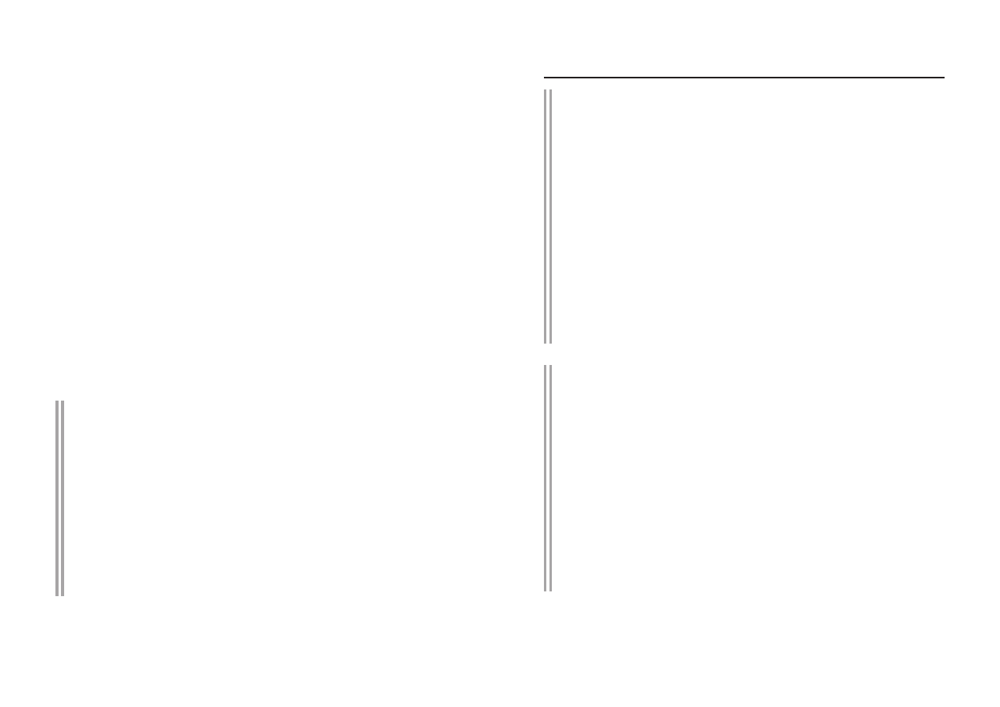
74
Livro branco sobre violações dos direitos humanos
e o Estado de direito na Ucrânia
Manifestações de intolerância por motivos religiosos, incluindo ameaças
contra a Igreja Ortodoxa Ucraniana do Patriarcado de Moscou
75
Manifestações de intolerância
com base religiosa,
incluindo ameaças contra
Igreja Ortodoxa Ucraniana
Patriarcado de Moscou
Declaração Universal dos Direitos Humanos (10 de dezembro de 1948)
Artigo 5
Ninguém será submetido a torturas ou torturas cruéis, desumanas
tratamento ou castigo eterno ou degradante.
Artigo 18
Todos têm direito à liberdade de pensamento, consciência
e religião; este direito inclui a liberdade de mudar de religião ou crença
e a liberdade, sozinho ou em comunidade
com outros e em público ou privado, de manifestar sua religião ou crença
no ensino, culto, culto e observância.
Artigo 19
Toda pessoa tem direito à liberdade de opinião e de
sua livre expressão; esse direito inclui a liberdade de
, sem interferência, ter opiniões e de buscar, receber e difundir
informações e ideias por qualquer meio e independentemente de
fronteiras.
Pacto Internacional sobre Direitos Civis
e Políticos (16 de dezembro de 1966)
Artigo 7
Ninguém será submetido a tortura ou crueldade,
tratamento ou castigo humano ou degradante
.
Artigo 18
Todos têm direito à liberdade de pensamento, consciência
e religião. Este direito inclui a liberdade de ter ou adotar uma religião
ou crença de sua escolha e a liberdade,
sozinho ou em comunidade com outros e em público ou privado , de manifestar sua religião ou crença
no culto, na prática
e no ensino.
Artigo 19
Todos têm direito à livre expressão
sua opinião; este direito inclui a liberdade de procurar, receber e difundir
informações e ideias de todo o tipo, independentemente de
fronteiras, verbalmente, por escrito ou em
forma impressa ou artística, ou por qualquer outro meio à sua
escolha.
Convenção para a Proteção dos Direitos Humanos
e Liberdades Fundamentais (Roma, 4 de novembro de 1950)
Artigo 3
Ninguém será submetido a tortura, seja desumana ou
tratamento ou punição degradante.
Artigo 9
Todos têm direito à liberdade de pensamento, consciência e religião;
este direito inclui a liberdade de mudar de religião ou crença
e a liberdade,
sozinho ou em comunidade com outros e em público ou privado, de manifestar sua religião ou crença
no culto, no ensino, no culto e na
observância.
Artigo 10
Todos têm o direito de expressar livremente sua opinião. este
o direito inclui a liberdade de opinião e a liberdade de receber
e difundir informações e ideias sem qualquer interferência
das autoridades públicas e independentemente de
fronteiras.

76
Livro branco sobre violações dos direitos humanos
e o Estado de direito na Ucrânia
Manifestações de intolerância por motivos religiosos, incluindo ameaças
contra a Igreja Ortodoxa Ucraniana do Patriarcado de Moscou
77
2 de abril de 2014
Diocese de Odessa da Igreja Ortodoxa Ucraniana
do Patriarcado de Moscou (UOC) dirigiu uma carta aberta ao presidente
da Verkhovna Rada da Ucrânia A. Turchynov em conexão com a busca
realizada por investigadores da SBU em 1 de abril de 2014 na casa do presidente do
departamento diocesano de Odessa diocese para a educação religiosa, trabalho missionário
e catequese, reitor da Igreja da Santa Mártir Tatiana,
clérigo honrado, pai de três filhos, Arcipreste O. Mokryak. A carta
termina com as palavras: “Todos nós expressamos nosso forte
protesto civil contra as ações do Serviço de Segurança da Ucrânia, que é guiado por
medidas de intimidação, intimidação e repressão. Exigimos de você, como chefe do
parlamento ucraniano, uma intervenção imediata na situação, a fim de
parando ações anticonstitucionais, violando os direitos e liberdades dos cidadãos da
Ucrânia, incluindo o clero da Igreja Ortodoxa Ucraniana
. A linguagem das ameaças, ultimatos, intimidações, provocações, represálias políticas
, perseguição de dissidentes não pode unir a Ucrânia!
Não queremos que a agitação popular se espalhe e perturbe
a paz em nosso estado multinacional e multicultural. Esperamos
uma solução justa e prudente para esta questão”.
3 de abril de 2014
durante a reunião do Metropolita de Odessa e Izmail
Agafangel com o Chefe do Escritório Representativo da Missão de Monitoramento do Escritório
do Alto Comissariado das Nações Unidas para os Direitos Humanos na região de Odessa
A. Khudokormoff discutiu a difícil situação na Ucrânia
com os direitos dos crentes ortodoxos. O Metropolita Agafangel transmitiu
ao representante da ONU o apelo do clero e crentes da diocese de Odessa da UOC ao Secretário Geral da ONU em defesa do Arcipreste O. Mokryak,
submetido à repressão política
e perseguição ilegal pelos serviços especiais da Ucrânia .
10 de abril de 2014
Arcipreste A. Novikov, Secretário da Diocese de Odessa da UOC
foi forçado a se mudar de Odessa para Moscou, temendo perseguição
por parte das agências policiais ucranianas. Segundo o padre Andrei,
ele foi acusado de ter ligações com ativistas anti-Maidan e foi convocado para interrogatório
em Kiev. Os telefones do padre foram grampeados pelos serviços especiais da Ucrânia.
Alguns dias antes, o chefe do Departamento de
Educação Religiosa, Catecismo e Obra Missionária da Diocese de Odessa da UOC
, Arcipreste O. Mokryak, foi forçado a deixar Odessa, que por muito tempo foi submetida
a pressões e intimidações por parte do SBU por suas crenças. Os
oficiais da SBU revistaram o apartamento do padre.
Na noite de
19 de abril de 2014
uma tentativa de incêndio foi feita em Nikolaev
edifícios da sinagoga.
Pessoas não identificadas jogaram dois coquetéis molotov na fachada do prédio .
7 de maio de 2014
O Metropolita Agafangel de Odessa e Izmail falou
com um apelo aberto aos representantes da ONU e da OSCE na Ucrânia, bem como às
autoridades de Kiev, no qual pediu para proteger a Igreja dos extremistas que
ameaçam abertamente os padres.
“Uma onda de ataques contra padres da
Igreja Ortodoxa Ucraniana canônica e tentativas de tomar igrejas ortodoxas varreu a Ucrânia.
O Kiev-Pechersk e Pochaev Lavra estavam sob cerco. Em Sumy, eles ameaçaram
queimar vivo (“com coquetéis molotov”) o arcebispo Evlogii, junto
com a catedral e a administração diocesana. Alguns padres da
Igreja canônica foram ameaçados de violência física. Inclusive
eu, o gerente da diocese de Odessa”, disse.
Segundo o metropolita, as tentativas de expulsar os crentes ortodoxos de suas
igrejas “dividem a sociedade e incitam o ódio religioso” e também
“violam os direitos fundamentais e inalienáveis das pessoas à liberdade de
religião”. Ele enfatizou que ainda hoje "motins em massa
e a ameaça de hostilidades levaram a um confronto de uma ordem diferente - um
confronto espiritual".
7 de maio de 2014
Presidente do Conselho de Estado da Crimeia V.A. Konstantinov disse à revista
Após os eventos sangrentos em Odessa
, começaram a chegar refugiados da Ucrânia à Crimeia, incluindo ministros da Igreja, que “literalmente
fugiram do massacre que os militantes do Setor Direita estavam preparando para eles”.
8 de maio de 2014
o serviço de imprensa da diocese de Sumy foi obrigado a falar
com uma declaração refutando os rumores provocativos de que a catedral
supostamente há ativistas pró-russos, e os padres distribuem armas para eles
.
Com base nessas acusações infundadas, as agências policiais
da região de Sumy realizaram uma inspeção na
Catedral da Transfiguração em Sumy e recorreram ao chefe da diocese de Sumy , o arcebispo
Evlogy, exigindo explicações sobre as suspeitas
de abrigar e armar “separatistas ”. Um homem de uniforme militar
da unidade de defesa territorial, que apareceu na
Catedral da Transfiguração, ameaçou o padre que estava na catedral de que ele
“atiraria para matar” os separatistas que estariam escondidos
na catedral. A declaração da diocese de Sumy indica que
rumores provocativos e ações agressivas contra padres e leigos da Ucrânia
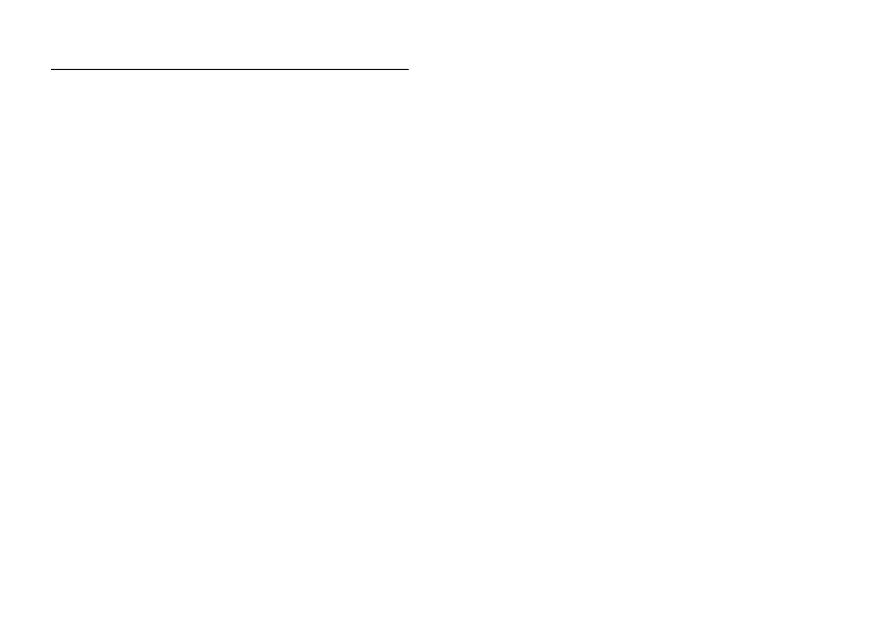
79
78
A Igreja Ortodoxa é orientada a “nomear” os
crentes ortodoxos como inimigos do estado ucraniano.
sacerdote da UOC, reitor do templo de Dmitry Donskoy na cidade de Druzhaevka, padre Pavel
(Zhuchenko), que cuidou espiritualmente dos habitantes de Slavyansk e das milícias.
de seu controle, o presidente do Departamento de Relações Externas da Igreja do
Patriarcado de Moscou, Metropolita Hilarion de Volokolamsk, foi informado sem qualquer explicação
sobre a proibição de entrada no território da Ucrânia. Vladyka chegou a Dnepropetrovsk para felicitar o Metropolita de Dnepropetrovsk e Pavlograd Iriney
pelo seu 75º aniversário , transmitir-lhe uma mensagem de saudação do Patriarca Kirill de Moscou e de toda a Rússia e presenteá-lo com um prêmio da igreja, a Ordem do São Príncipe Daniel de Moscou.
O Arcipreste Anthony e Theodosius das Cavernas, Arcipreste da UOC Aleksey Efimov
disse à mídia que os nacionalistas o ameaçaram com represálias porque em fevereiro
de 2014 no Euromaidan ele deu comunhão aos combatentes do Berkut e tropas internas.
(Região de Luhansk) Volodymyr Maretsky afirmou que os militares ucranianos o
torturaram após sua prisão em 25 de maio por suspeita de ataque às assembleias de voto
. O padre Vladimir mostrou vestígios de algemas, que, segundo ele
, foram colocadas nas mãos, e “depois eles as chutaram com os pés para que se encaixassem no lugar
”.
O recrudescimento dos protestos no sul e no leste da Ucrânia foi uma consequência direta
da mudança de poder em Kiev como resultado de um
golpe militar inconstitucional, que foi realizado pelos partidários do Euromaidan com o
apoio ativo dos Estados Unidos e alguns países membros da União Europeia. Depois que a
Verkhovna Rada da Ucrânia foi reformatada
de forma grosseira e forçada de acordo com os desejos dos líderes da oposição de ontem,
incluindo representantes de forças nacionalistas radicais, aqueles que discordaram
da nova ordem ucraniana viram-se não apenas sob sério
golpe, mas uma ameaça real pairou ao longo de suas vidas.
Os trágicos acontecimentos em Odessa, Mariupol e outras cidades do Sudeste
tornaram-se mais uma confirmação da aposta criminosa dos governantes de Kiev
na força bruta e na intimidação, que nada tem a ver com as obrigações
decorrentes do Acordo de 21 de fevereiro, 2014 e a Declaração de Genebra
de 17 de abril de 2014
Os fatos citados no Livro Branco testemunham a natureza criminosa da “operação antiterrorista”, como resultado da qual objetos civis são
traiçoeiramente bombardeados e civis ucranianos, incluindo mulheres, idosos e crianças, são mortos.
É motivo de séria preocupação que a maioria das
graves violações dos direitos humanos e do
Estado de direito cometidas e cometidas pelo regime de Kiev ainda permaneçam sem uma
resposta adequada e clara por parte da comunidade internacional e dos organismos internacionais de direitos humanos
. Tem-se a impressão de que a operação punitiva das
forças de segurança ucranianas contra o seu próprio povo desde o início
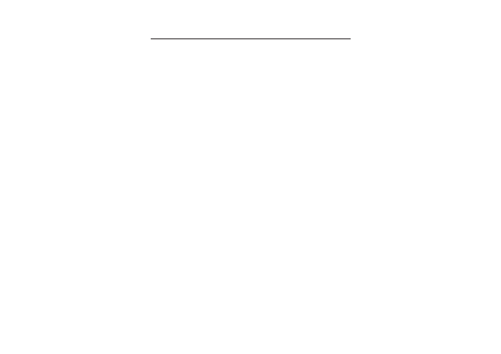
80
Livro branco sobre violações dos direitos humanos
e o Estado de direito na Ucrânia
apoio tácito de algumas capitais mundiais. Naturalmente,
esse estado de coisas cria uma sensação de impunidade para aqueles que emitem
ordens cínicas e criminosas para bombardear cidades e vilarejos pacíficos,
ou sequestrar jornalistas censuráveis e exercer censura política da
mídia. Após a posse, o recém-eleito presidente da Ucrânia P. Poroshenko
anunciou a necessidade de cessar fogo no sudeste da Ucrânia, porém,
no momento de enviar este trabalho para impressão, o derramamento de sangue e a morte da população civil
não Pare.
Esperamos que os patronos ocidentais das novas autoridades ucranianas
comecem finalmente a encorajar Kiev a impedir o extermínio da população do
Sudeste, que tem o direito legítimo de receber uma
voz igual e plena na determinação do destino de seu próprio país , e as
estruturas internacionais relevantes dentro de seus mandatos contribuirão para a
tarefa de conduzir investigações objetivas e não politizadas das
inúmeras violações dos direitos humanos e do Estado de direito na
Ucrânia. Os perpetradores devem ser punidos como merecem.
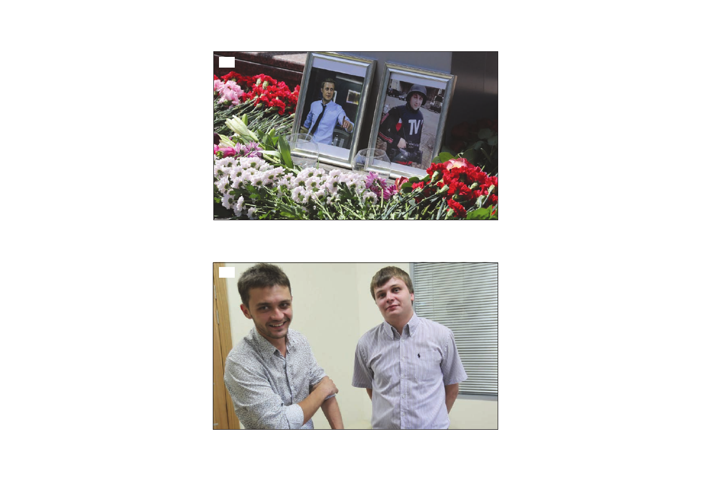
1. Os jornalistas da Companhia Estatal de Televisão e Radiodifusão de Toda a Rússia (VGTRK) Anton Voloshin e Igor Kornelyuk morreram em 17 de junho enquanto cumpriam seu
dever profissional enquanto filmavam perto de Lugansk. De acordo com uma das testemunhas oculares, uma
mina disparada pelas forças de segurança ucranianas caiu sob os pés dos jornalistas. E em 30 de junho,
o operador do Canal Um Anatoliy Klyan morreu perto de Donetsk
2. Os jornalistas do canal russo Zvezda Yevgeny Davydov e Nikita Kanashenkov
tiveram sorte: após vários dias de tortura e intimidação, os militantes do Setor Direita
entregaram suas vítimas a representantes oficiais de Kiev. E os russos sobreviveram
1
2
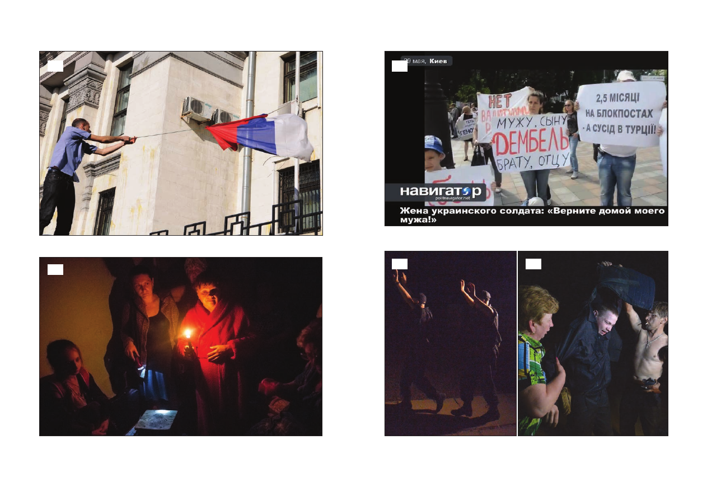
6, 7. Após longas negociações, os oficiais da unidade militar perto de Luhansk concordaram em
“entregar” os recrutas às suas mães
5. Parentes de recrutas ucranianos não querem que seus entes queridos sejam
enviados pelas autoridades de Kiev para participar de uma operação punitiva no Donbass
4. Uma família de Sloviansk está fugindo no porão de mais um bombardeio das
forças de segurança ucranianas. Enquanto isso, o presidente Petro Poroshenko está falando sobre uma trégua
3. A polícia ucraniana “não percebeu” como “manifestantes pacíficos” arrancaram bandeiras
da embaixada russa em Kiev
3
4
cinco
7
6
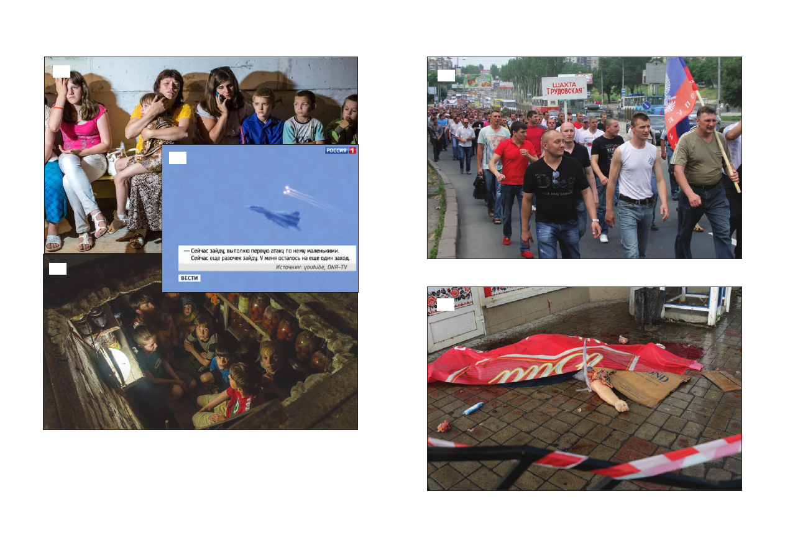
12. Esta mulher morreu como resultado do bombardeio da estação ferroviária em Donetsk
11. Em Donetsk, mineiros de cinco minas saíram para protestar contra as ações dos militares ucranianos
8. Um projétil disparado pelas forças de segurança ucranianas atingiu a sala de reuniões da escola nº 13
em Sloviansk. Crianças e professores conseguiram se esconder no porão da escola
9. De ataques com foguetes em Slavyansk, as crianças estão escondidas nos porões. Não há abrigos antibombas reais
. Quem entre os construtores da cidade teria pensado que a população teria que se
esconder de seus próprios ataques aéreos?
10. Radioamadores interceptaram as conversas de um piloto ucraniano do Su-25 com seu
comando durante uma missão de combate sobre Donetsk
8
nove
10
onze
12
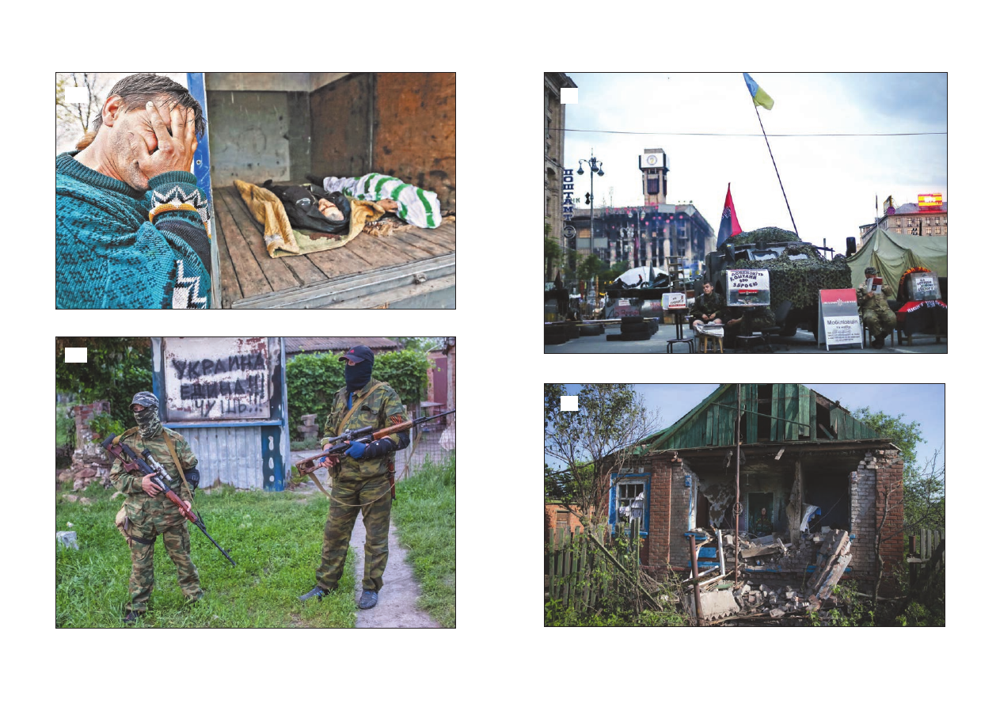
15. Agora no Maidan em Kiev, voluntários estão sendo mobilizados em destacamentos punitivos
para “limpar” o sudeste da Ucrânia de dissidentes
16. Na vila de Andreevka, uma mina disparada pelas forças de segurança ucranianas atingiu um prédio residencial comum
14. As eleições presidenciais na Ucrânia não impediram a guerra civil
13. Os militantes do "Setor Direito" trouxeram a morte a Slavyansk
13
quatorze
15
16
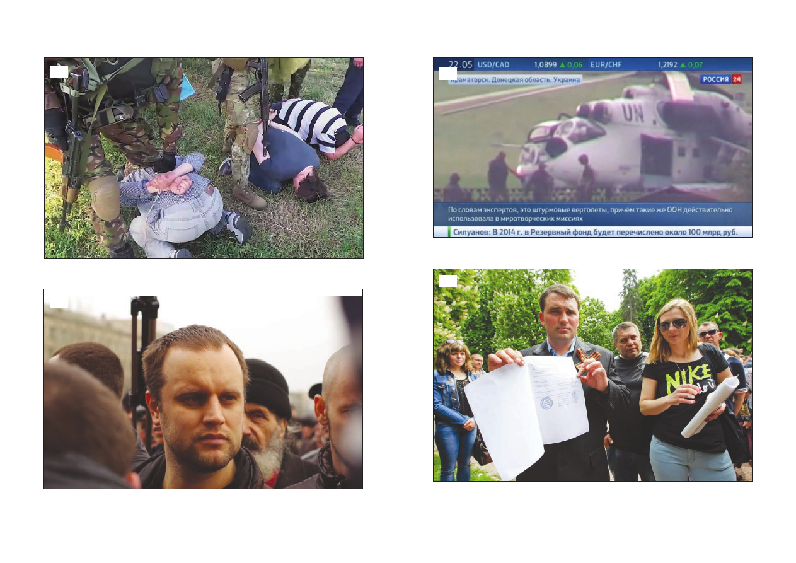
17. Os punidores ucranianos trataram os jornalistas do canal de TV russo Life News
como terroristas.
18. Após dois meses de prisão, o governador popular da
República de Donetsk, Pavel Gubarev , foi libertado.
19. Os militares ucranianos utilizaram helicópteros com
símbolos da ONU na operação punitiva, o que é proibido pelas regras desta organização internacional
20. O chefe do CEC da região de Lugansk, Alexander Malykhin, anunciou os resultados do
referendo - a maioria dos moradores apoiou a separação da região da
Ucrânia
17
dezoito
19
vinte
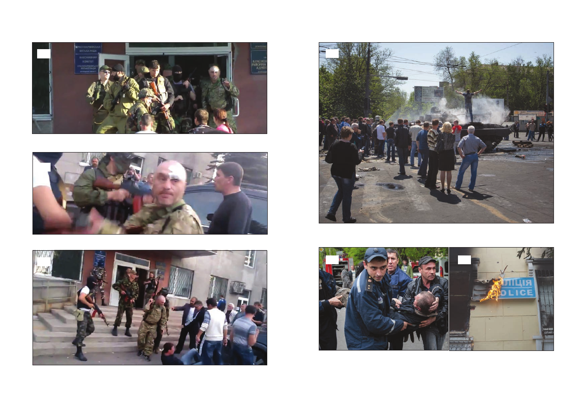
21. Além de quatro escolas em Krasnoarmeysk, as forças de segurança ucranianas tomaram o prédio do
parlamento local
22. A imagem mostra como um dos militantes visa um morador desarmado de Krasnoarmeysk
24. Os moradores de Mariupol defenderam sua cidade dos destacamentos punitivos de Kiev.
Os veículos blindados dos atacantes foram capturados como troféus.
25, 26. Militantes da polícia de Mariupol, que não obedeceram às ordens criminais
de Kiev, foram baleados à queima-roupa pelos militantes da Guarda Nacional.
Os moradores locais ajudaram a entregá-los aos hospitais . O prédio do departamento de polícia da cidade de Mariupol queimou completamente
23. Mas o povo não se dispersou. Tiro começou. Um dos moradores foi ferido na perna
21
22
23
24
25
26
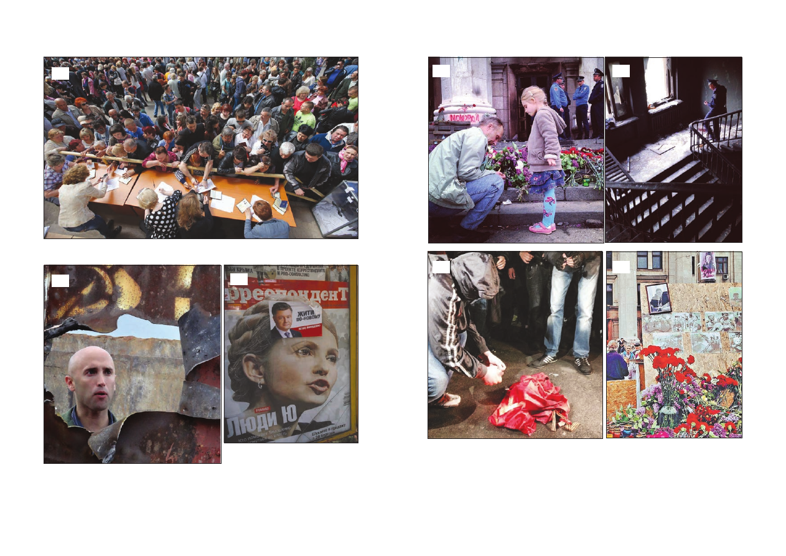
30. Muitos moradores da cidade trazem flores para a Casa dos Sindicatos incendiados em Odessa
31. Após o incêndio criminoso, a Casa dos Sindicatos em Odessa foi quase completamente incendiada.
Os federalistas escondidos lá dentro não tinham chance de escapar.
32. Os militantes do "Setor Direito" em Odessa queimaram primeiro as fitas de São Jorge e depois aqueles
que as usam
27. Em Mariupol, havia filas nas assembleias de voto - os moradores queriam votar
em um referendo sobre o status da região de Donetsk
28. O repórter britânico Graham Philips garantiu que o
"trem blindado" abatido pelo exército ucraniano na verdade fosse uma velha carruagem enferrujada. Mas
Kiev oficial não gostou dessa verdade. Ativistas da Euromaidan avaliaram a cabeça da Philips
em US$ 10.000.
27
28
29
trinta
31
32
33
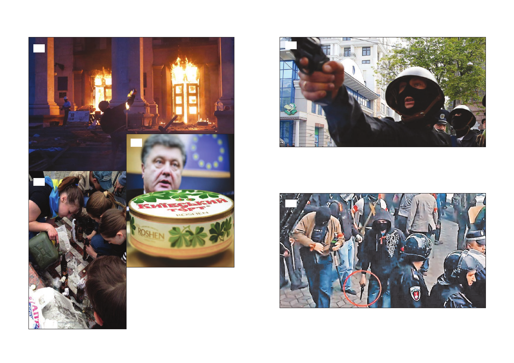
33. Primeiro, ativistas do Setor Direita
bloquearam as portas da Casa dos Sindicatos
em
Odessa. Então eles abandonaram o prédio
"Coquetéis Molotov". Centenas
de pessoas morreram. Os sobreviventes que saíram do prédio incendiado pelos
bandidos fascistas
foram mortos a sangue frio com morcegos
37. Provocadores em Odessa (eles amarraram especialmente as fitas de São Jorge e
braçadeiras vermelhas - para que não confundissem seus "Setores de Direita") estavam armados e andavam calmamente
entre a polícia
36. Nas costas de um militante armado com uma pistola nada mais é do que atuar. Chefe do Departamento de
Assuntos Internos da região de Odessa, Dmitry Fuchedzhi. Um dos atacantes tem uma faixa de São Jorge na manga
. Isso é uma provocação. Os fascistas ucranianos também têm braçadeiras vermelhas, para que
os “seus” não sejam confundidos com os verdadeiros partidários da federalização. Quando começaram a queimar a Casa
dos Sindicatos, os provocadores removeram as fitas de São Jorge. Mas as bandagens vermelhas, aparentemente,
foram esquecidas. Então eles jogaram "coquetéis molotov" com fitas vermelhas
33
34
35
36
37
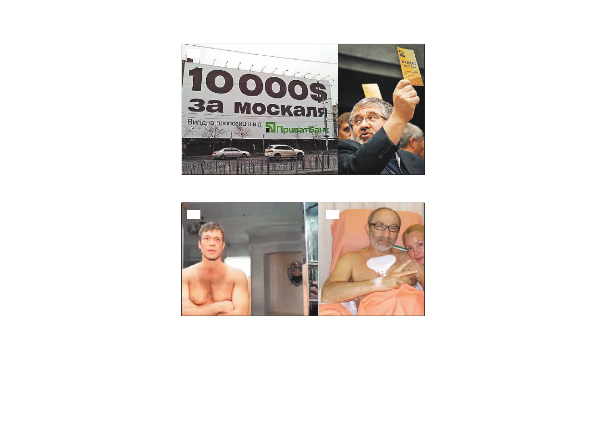
39. Depois de visitar o Gabinete do Procurador-Geral em conexão com
o ataque contra ele por militantes do “
Setor de Direita”, Oleg Tsarev anunciou que estava retirando sua
candidatura da eleição para o cargo de Presidente da
Ucrânia
38. O autor da iniciativa cínica foi o governador da região de Dnipropetrovsk Igor
Kolomoisky (foto à direita)
40. Quem atirou no
prefeito de Kharkiv, Gennady Kernes? De acordo
com especialistas, as atuais autoridades ucranianas certamente não serão capazes de identificar
os clientes ou os autores deste crime. Afinal , os organizadores do assassinato podem ocupar cargos de liderança no bloco de poder da Ucrânia
38
39
40
Texto original
Sugerir uma tradução melhor